Alec Radford * 1 Jong Wook Kim * 1 Tao Xu 1 Greg Brockman 1 Christine McLeavey 1 Ilya Sutskever 1摘要Abstract
We study the capabilities of speech processing systems trained simply to predict large amounts of transcripts of audio on the internet. When scaled to 680,000 hours of multilingual and multitask supervision, the resulting models generalize well to standard benchmarks and are often competitive with prior fully supervised results but in a zeroshot transfer setting without the need for any finetuning. When compared to humans, the models approach their accuracy and robustness. We are releasing models and inference code to serve as a foundation for further work on robust speech processing.
我们研究了这样一类语音处理系统的能力：它们的训练方式很简单，就是预测互联网上音频所附带的海量转录文本。当训练规模扩展到 680,000 小时的多语言、多任务弱监督数据时，所得模型能很好地泛化到标准基准上，并且常常能与此前全监督的结果相竞争——但这是在零样本（zero-shot）迁移设定下取得的，不需要任何微调。与人类相比，这些模型已接近人类的准确率和鲁棒性。我们将发布模型和推理代码，作为后续鲁棒语音处理研究的基础。
1 引言Introduction
Progress in speech recognition has been energized by the development of unsupervised pre-training techniques exemplified by Wav2Vec 2.0 (Baevski et al., 2020). Since these methods learn directly from raw audio without the need for human labels, they can productively use large datasets of unlabeled speech and have been quickly scaled up to 1,000,000 hours of training data (Zhang et al., 2021), far more than the 1,000 or so hours typical of an academic supervised dataset. When fine-tuned on standard benchmarks, this approach has improved the state of the art, especially in a low-data setting.
以 Wav2Vec 2.0（Baevski et al., 2020）为代表的无监督预训练技术，为语音识别的发展注入了新的活力。由于这些方法直接从原始音频中学习、不需要人工标注，它们可以有效利用大规模无标注语音数据，训练数据量已迅速扩展到 1,000,000 小时（Zhang et al., 2021），远远超过学术监督数据集通常约 1,000 小时的规模。在标准基准上微调后，这一路线刷新了 SOTA，在低数据场景下尤其明显。
These pre-trained audio encoders learn high-quality representations of speech, but because they are purely unsupervised they lack an equivalently performant decoder mapping those representations to usable outputs, necessitating a finetuning stage in order to actually perform a task such as speech recognition1. This unfortunately limits their usefulness and impact as fine-tuning can still be a complex process requiring a skilled practitioner. There is an additional risk with requiring fine-tuning. Machine learning *Equal contribution 1OpenAI, San Francisco, CA 94110, USA. Correspondence to: Alec Radford <alec@openai.com>, Jong Wook Kim <jongwook@openai.com>.
这些预训练音频编码器能学到高质量的语音表征，但由于它们是纯无监督的，缺少一个同等性能、能把这些表征映射为可用输出的解码器，因此必须再经过一个微调阶段，才能真正执行语音识别这类任务（脚注 1）。遗憾的是，这限制了它们的实用性和影响力，因为微调仍然可能是一个复杂过程，需要有经验的从业者来操作。要求微调还带来另一个风险。（作者单位行）Machine learning *Equal contribution 1OpenAI, San Francisco, CA 94110, USA.通讯作者：Alec Radford <alec@openai.com>，Jong Wook Kim <jongwook@openai.com>。
1Baevski et al. (2021) is an exciting exception - having developed a fully unsupervised speech recognition system methods are exceedingly adept at finding patterns within a training dataset which boost performance on held-out data from the same dataset. However, some of these patterns are brittle and spurious and don’t generalize to other datasets and distributions. In a particularly disturbing example, Radford et al. (2021) documented a 9.2% increase in object classification accuracy when fine-tuning a computer vision model on the ImageNet dataset (Russakovsky et al., 2015) without observing any improvement in average accuracy when classifying the same objects on seven other natural image datasets. A model that achieves “superhuman” performance when trained on a dataset can still make many basic errors when evaluated on another, possibly precisely because it is exploiting those dataset-specific quirks that humans are oblivious to (Geirhos et al., 2020).
1Baevski et al. (2021) 是一个令人振奋的例外——他们开发了一套完全无监督的语音识别系统。然而，其中一些模式是脆弱且虚假的，无法泛化到其他数据集和其他分布。一个尤其令人不安的例子是：Radford et al. (2021) 记录到，在 ImageNet 数据集（Russakovsky et al., 2015）上微调一个计算机视觉模型可以让目标分类准确率提高 9.2%，但在另外七个自然图像数据集上分类同样的物体时，平均准确率却没有任何提升。一个在某个数据集上训练后达到「超人」水平的模型，换到另一个数据集上评测时仍可能犯下许多低级错误——原因可能恰恰在于它利用了那些人类根本察觉不到的、数据集特有的怪癖（Geirhos et al., 2020）。
This suggests that while unsupervised pre-training has improved the quality of audio encoders dramatically, the lack of an equivalently high-quality pre-trained decoder, combined with a recommended protocol of dataset-specific finetuning, is a crucial weakness which limits their usefulness and robustness. The goal of a speech recognition system should be to work reliably “out of the box” in a broad range of environments without requiring supervised fine-tuning of a decoder for every deployment distribution.
这表明，尽管无监督预训练大幅提升了音频编码器的质量，但缺少同等高质量的预训练解码器、再加上按数据集分别微调的主流做法，构成一个关键弱点，限制了这类方法的实用性和鲁棒性。语音识别系统的目标应当是「开箱即用」，在广泛的环境中可靠工作，而不需要针对每个部署分布都对解码器做监督微调。
As demonstrated by Narayanan et al. (2018), Likhomanenko et al. (2020), and Chan et al. (2021) speech recognition systems that are pre-trained in a supervised fashion across many datasets/domains exhibit higher robustness and generalize much more effectively to held-out datasets than models trained on a single source. These works achieve this by combining as many existing high-quality speech recognition datasets as possible. However, there is still only a moderate amount of this data easily available. SpeechStew (Chan et al., 2021) mixes together 7 pre-existing datasets totalling 5,140 hours of supervision. While not insignifi- cant, this is still tiny compared to the previously mentioned 1,000,000 hours of unlabeled speech data utilized in Zhang et al. (2021).
正如 Narayanan et al. (2018)、Likhomanenko et al. (2020) 和 Chan et al. (2021) 所展示的，在多个数据集/领域上以监督方式预训练的语音识别系统表现出更高的鲁棒性，对留出数据集的泛化也远优于在单一数据源上训练的模型。这些工作的做法是尽可能多地把现有的高质量语音识别数据集合并起来。然而，这类容易获得的数据总量仍然有限。SpeechStew（Chan et al., 2021）混合了 7 个既有数据集，总计 5,140 小时的监督数据。这个量级不算小，但与前面提到的 Zhang et al. (2021) 所用的 1,000,000 小时无标注语音数据相比，仍然微不足道。
Recognizing the limiting size of existing high-quality supervised datasets, recent efforts have created larger datasets for speech recognition. By relaxing the requirement of goldstandard human-validated transcripts, Chen et al. (2021) and Galvez et al. (2021) make use of sophisticated automated pipelines to scale weakly supervised speech recognition to 10,000 and 30,000 hours of noisier training data. This trade-off between quality and quantity is often the right call. Although understudied so far for speech recognition, recent work in computer vision has demonstrated that moving beyond gold-standard crowdsourced datasets such as ImageNet (Russakovsky et al., 2015) to much larger but weakly supervised datasets significantly improves the robustness and generalization of models (Mahajan et al., 2018; Kolesnikov et al., 2020).
认识到现有高质量监督数据集规模的局限，近期一些工作着手构建更大的语音识别数据集。通过放宽对金标准人工核验转写的要求，Chen et al. (2021) 与 Galvez et al. (2021) 利用精细的自动化流水线，把弱监督语音识别扩展到 10,000 与 30,000 小时的带噪声训练数据。这种质量与数量之间的权衡通常是正确的选择。尽管这一思路在语音识别领域还研究不多，但计算机视觉的近期工作已经证明：从 ImageNet（Russakovsky et al., 2015）这类金标准众包数据集，转向规模大得多但弱监督的数据集，能显著提升模型的鲁棒性和泛化能力（Mahajan et al., 2018; Kolesnikov et al., 2020）。
Yet these new datasets are only a few times larger than the sum of existing high-quality datasets and still much smaller than prior unsupervised work. In this work we close that gap, scaling weakly supervised speech recognition the next order of magnitude to 680,000 hours of labeled audio data. We call our approach Whisper2. We demonstrate models trained at this scale transfer well to existing datasets zeroshot, removing the need for any dataset-specific fine-tuning to achieve high-quality results.
然而，这些新数据集只比现有高质量数据集的总和大几倍，仍远小于此前无监督工作的数据规模。在本工作中，我们弥合了这一差距，把弱监督语音识别再扩大一个数量级，达到 680,000 小时的标注音频数据。我们将这一方法称为 Whisper（注 2）。我们证明了在这一规模下训练的模型可以零样本（zero-shot）迁移到现有数据集上，无需任何针对特定数据集的微调就能获得高质量结果。
In addition to scale, our work also focuses on broadening the scope of weakly supervised pre-training beyond English-only speech recognition to be both multilingual and multitask. Of those 680,000 hours of audio, 117,000 hours cover 96 other languages. The dataset also includes 125,000 hours of X→en translation data. We find that for sufficiently large models there is no drawback and even benefits to joint multilingual and multitask training.
除了规模之外，我们的工作还着眼于拓宽弱监督预训练的范围：从纯英语语音识别扩展到多语言和多任务。在这 680,000 小时音频中，有 117,000 小时覆盖英语之外的 96 种语言。数据集还包含 125,000 小时的 X→en（任意语言到英语）翻译数据。我们发现，对于足够大的模型，多语言多任务联合训练不仅没有坏处，反而还有收益。
Our work suggests that simple scaling of weakly supervised pre-training has been underappreciated so far for speech recognition. We achieve these results without the need for the self-supervision or self-training techniques that have been a mainstay of recent large-scale speech recognition work. To serve as a foundation for further research on robust speech recognition, we release inference code and models at the following URL: https://github.com/openai/ whisper.
我们的工作表明，在语音识别领域，简单扩大弱监督预训练的规模这一点一直被低估。取得这些结果并不需要自监督或自训练技术——而它们是近期大规模语音识别工作的主流支柱。为了作为鲁棒语音识别后续研究的基础，我们在以下网址发布推理代码和模型：https://github.com/openai/ whisper。
2 方法Approach
2.1 数据处理Data Processing
Following the trend of recent work leveraging web-scale text from the internet for training machine learning systems, we take a minimalist approach to data pre-processing. In contrast to a lot of work on speech recognition, we train Whisper models to predict the raw text of transcripts without any significant standardization, relying on the expressiveness of sequence-to-sequence models to learn to map between utterances and their transcribed form. This simplifies 2If an acronym or basis for the name is desired, WSPSR standing for Web-scale Supervised Pretraining for Speech Recognition can be used. the speech recognition pipeline since it removes the need for a separate inverse text normalization step in order to produce naturalistic transcriptions.
顺着近期利用互联网规模文本训练机器学习系统的趋势，我们在数据预处理上采取了极简做法。与许多语音识别工作不同，我们训练 Whisper 模型直接预测转录的原始文本，不做任何显著的标准化处理，而是依靠序列到序列模型的表达能力，自己学会把语音映射到其转录形式。这简化了语音识别流水线，因为不再需要单独的逆文本规范化步骤就能得到自然的转写。（脚注 2：如需为该方法的名称找一个缩写，可用 WSPSR，即 Web-scale Supervised Pretraining for Speech Recognition。）
We construct the dataset from audio that is paired with transcripts on the Internet. This results in a very diverse dataset covering a broad distribution of audio from many different environments, recording setups, speakers, and languages. While diversity in audio quality can help train a model to be robust, diversity in transcript quality is not similarly beneficial. Initial inspection showed a large amount of subpar transcripts in the raw dataset. To address this, we developed several automated filtering methods to improve transcript quality.
我们的数据集由互联网上音频与其转录文本配对而成。这样得到的数据集非常多样，覆盖了来自各种不同环境、录音设备、说话人和语言的音频分布。音频质量的多样性有助于训练出鲁棒的模型，但转录质量的多样性却没有类似的好处。初步检查发现，原始数据集中存在大量质量欠佳的转录。为解决这个问题，我们开发了若干自动化过滤方法来提升转录质量。
Many transcripts on the internet are not actually humangenerated but the output of existing ASR systems. Recent research has shown that training on datasets of mixed human and machine-generated data can significantly impair the performance of translation systems (Ghorbani et al., 2021). In order to avoid learning “transcript-ese”, we developed many heuristics to detect and remove machine-generated transcripts from the training dataset. Many existing ASR systems output only a limited subset of written language which removes or normalizes away aspects that are difficult to predict from only audio signals such as complex punctuation (exclamation points, commas, and question marks), formatting whitespace such as paragraphs, or stylistic aspects such as capitalization. An all-uppercase or all-lowercase transcript is very unlikely to be human generated. While many ASR systems include some level of inverse text normalization, it is often simple or rule-based and still detectable from other unhandled aspects such as never including commas.
互联网上的许多转录其实并不是人生成的，而是现有 ASR 系统的输出。近期研究表明，在混合了人工数据与机器生成数据的数据集上训练，会显著损害翻译系统的性能（Ghorbani et al., 2021）。为了避免学到「转录腔」（transcript-ese），我们开发了许多启发式规则，从训练数据集中检测并移除机器生成的转录。许多现有 ASR 系统只输出书面语言的一个有限子集，会删掉或规范化掉那些仅从音频信号难以预测的方面，例如复杂标点（感叹号、逗号和问号）、段落等格式空白，以及大小写等文体特征。一份全大写或全小写的转录几乎不可能是人生成的。虽然许多 ASR 系统带有一定程度的逆文本规范化，但往往很简单或基于规则，仍可从其他未处理的方面被识别出来，比如从不包含逗号。
We also use an audio language detector, which was created by fine-tuning a prototype model trained on a prototype version of the dataset on VoxLingua107 (Valk & Alum¨ae, 2021) to ensure that the spoken language matches the language of the transcript according to CLD2. If the two do not match, we don’t include the (audio, transcript) pair as a speech recognition training example in the dataset. We make an exception if the transcript language is English and add these pairs to the dataset as X→en speech translation training examples instead. We use fuzzy de-duping of transcript texts to reduce the amount of duplication and automatically generated content in the training dataset.
我们还使用了一个音频语种检测器：先把一个在原型数据集上训练的原型模型在 VoxLingua107（Valk & Alumäe, 2021）上微调得到，用它确保语音所说的语言与 CLD2 判定的转录文本语言一致。如果两者不一致，我们就不把这对（音频，转录）作为语音识别训练样本纳入数据集。有一种例外：如果转录语言是英语，我们就把这些样本对作为 X→en 语音翻译训练样本加入数据集。我们还对转录文本做了模糊去重，以减少训练数据中的重复和自动生成内容。
We break audio files into 30-second segments paired with the subset of the transcript that occurs within that time segment. We train on all audio, including segments where there is no speech (though with sub-sampled probability) and use these segments as training data for voice activity detection.
我们把音频文件切成 30 秒的片段，每段配上该时间段内出现的那部分转录文本。我们在全部音频上训练，包括没有语音的片段（但以降采样的概率使用），并把这些片段用作语音活动检测（VAD）的训练数据。
For an additional filtering pass, after training an initial model we aggregated information about its error rate on training data sources and performed manual inspection of these data sources sorting by a combination of both high error rate and data source size in order to identify and remove low-quality ones efficiently. This inspection showed a large amount of only partially transcribed or poorly aligned/misaligned transcripts as well as remaining low-quality machine-generated captions that filtering heuristics did not detect.
作为额外的一轮过滤，在训练出一个初始模型之后，我们汇总了它在各训练这轮检查发现了大量只转录了一部分、对齐很差或完全错位的转录，以及过滤启发式未能检出的残留低质量机器生成字幕。
To avoid contamination, we perform de-duplication at a transcript level between the training dataset and the evaluation datasets we thought were at higher risk of overlap, namely TED-LIUM 3 (Hernandez et al., 2018).
为避免数据污染，我们在训练数据集与我们认为重叠风险较高的评测数据集（即 TED-LIUM 3（Hernandez et al., 2018））之间做了转录级别的去重。
2.2 模型Model
Since the focus of our work is on studying the capabilities of large-scale supervised pre-training for speech recognition, we use an off-the-shelf architecture to avoid confounding our findings with model improvements. We chose an encoder-decoder Transformer (Vaswani et al., 2017) as this architecture has been well validated to scale reliably. All audio is re-sampled to 16,000 Hz, and an 80-channel logmagnitude Mel spectrogram representation is computed on 25-millisecond windows with a stride of 10 milliseconds. For feature normalization, we globally scale the input to be between -1 and 1 with approximately zero mean across the pre-training dataset. The encoder processes this input representation with a small stem consisting of two convolution layers with a filter width of 3 and the GELU activation function (Hendrycks & Gimpel, 2016) where the second convolution layer has a stride of two. Sinusoidal position embeddings are then added to the output of the stem after which the encoder Transformer blocks are applied. The transformer uses pre-activation residual blocks (Child et al., 2019), and a final layer normalization is applied to the encoder output. The decoder uses learned position embeddings and tied input-output token representations (Press & Wolf, 2017). The encoder and decoder have the same width and number of transformer blocks. Figure 1 summarizes the model architecture.
由于我们工作的重点是研究大规模监督预训练对语音识别的能力，我们采用现成的架构，以免模型上的改进混淆我们的结论。我们选择了编码器-解码器（encoder-decoder）Transformer（Vaswani et al., 2017），因为这种架构已被充分验证能够可靠地扩展。所有音频被重采样到 16,000 Hz，并在 25 毫秒窗口、10 毫秒步长上计算 80 通道的对数幅度 Mel 频谱图（log-Mel spectrogram）表示。特征归一化的做法是：在预训练数据集上把输入全局缩放到 -1 到 1 之间，均值近似为零。编码器先用一个小型 stem 处理该输入表示：两个滤波宽度为 3、使用 GELU 激活函数（Hendrycks & Gimpel, 2016）的卷积层，其中第二个卷积层步长为 2。随后在 stem 的输出上加上正弦位置嵌入，再接编码器 Transformer 块。该 Transformer 使用预激活残差块（Child et al., 2019），并在编码器输出上施加最终的层归一化。解码器使用学习得到的位置嵌入，并共享输入输出 token 表示（Press & Wolf, 2017）。编码器和解码器的宽度与 Transformer 块数量相同。Figure 1 概括了模型架构。
We use the same byte-level BPE text tokenizer used in GPT- 2 (Sennrich et al., 2015; Radford et al., 2019) for the Englishonly models and refit the vocabulary (but keep the same size) for the multilingual models to avoid excessive fragmentation on other languages since the GPT-2 BPE vocabulary is English only.
纯英语模型使用与 GPT-2（Sennrich et al., 2015; Radford et al., 2019）相同的字节级 BPE 文本分词器；多语言模型则重新拟合词表（但保持相同大小），以避免在其他语言上过度碎片化，因为 GPT-2 的 BPE 词表只覆盖英语。
2.3 多任务格式Multitask Format
Although predicting which words were spoken in a given audio snippet is a core part of the full speech recognition problem and extensively studied in research, it is not the only part. A fully featured speech recognition system can involve many additional components such as voice activity detection, speaker diarization, and inverse text normalization. These components are often handled separately, resulting in a relatively complex system around the core speech recognition model. To reduce this complexity, we would like to have a single model perform the entire speech processing pipeline, not just the core recognition part. An important consideration here is the interface for the model.
尽管预测一段音频中说了哪些词是完整语音识别问题的核心部分、也是研究的重点，但它并不是全部。化。这些组件通常各自独立处理，导致核心语音识别模型外围挂着一个相对复杂的系统。为了降低这种复杂性，我们希望用单一模型完成整个语音处理流水线，而不仅仅是核心识别部分。这里一个重要的考量是模型的接口。
There are many different tasks that can be performed on the same input audio signal: transcription, translation, voice activity detection, alignment, and language identification are some examples.
同一段输入音频信号上可以执行许多不同的任务：转录、翻译、语音活动检测、对齐和语种识别（LID）都是例子。
For this kind of one-to-many mapping to work with a single model, some form of task specification is necessary. We use a simple format to specify all tasks and conditioning information as a sequence of input tokens to the decoder. Since our decoder is an audio-conditional language model, we also train it to condition on the history of text of the transcript in the hope that it will learn to use longer-range text context to resolve ambiguous audio. Specifically, with some probability we add the transcript text preceding the current audio segment to the decoder’s context. We indicate the beginning of prediction with a <|startoftranscript|> token. First, we predict the language being spoken which is represented by a unique token for each language in our training set (99 total). These language targets are sourced from the aforementioned VoxLingua107 model. In the case where there is no speech in an audio segment, the model is trained to predict a <|nospeech|> token indicating this. The next token specifies the task (either transcription or translation) with an <|transcribe|> or <|translate|> token. After this, we specify whether to predict timestamps or not by including a <|notimestamps|> token for that case. At this point, the task and desired format is fully specified, and the output begins. For timestamp prediction, we predict time relative to the current audio segment, quantizing all times to the nearest 20 milliseconds which matches the native time resolution of Whisper models, and add additional tokens to our vocabulary for each of these. We interleave their prediction with the caption tokens: the start time token is predicted before each caption’s text, and the end time token is predicted after. When a final transcript segment is only partially included in the current 30- second audio chunk, we predict only its start time token for the segment when in timestamp mode, to indicate that the subsequent decoding should be performed on an audio window aligned with that time, otherwise we truncate the audio to not include the segment. Lastly, we add a <|endoftranscript|> token. We only mask out the training loss over the previous context text, and train the model to predict all other tokens. Please see Figure 1 for an overview of our format and training setup.
要让这种一对多的映射在单一模型上成立，就需要某种形式的任务指定机制。我们使用一种简单的格式：把所有任务和条件信息表示为解码器的一串输入 token。由于我们的解码器是一个以音频为条件的语言模型，我们还训练它以转录文本的历史为条件，希望它学会利用更长程的文本上下文来消解有歧义的音频。具体来说，我们以一定概率把当前音频片段之前的转录文本加入解码器的上下文。我们用 <|startoftranscript|> token 标记预测的开始。首先预测正在说的语言，训练集中的每种语言（共 99 种）由一个唯一的 token 表示。这些语言标签来自前面提到的 VoxLingua107 模型。当音频片段中没有语音时，模型被训练为预测一个 <|nospeech|> token 来表示这种情况。下一个 token 指定任务（转录或翻译），用 <|transcribe|> 或 <|translate|> token 表示。在此之后，通过是否包含 <|notimestamps|> token 来指定是否预测时间戳。到这一步，任务和期望的输出格式就完全确定了，输出随即开始。预测时间戳时，我们预测相对于当前音频片段的时间，把所有时间量化到最接近的 20 毫秒——这与 Whisper 模型的原生时间分辨率一致——并为每个时间值在词表中增加额外的 token。我们把时间戳 token 的预测与文本 token 交错起来：在每段字幕文本之前预测开始时间 token，在其后预测结束时间 token。当最后一段转录只部分包含在当前 30 秒音频片段中时，在时间戳模式下我们只预测该段的开始时间 token，表示后续解码应在与该时间对齐的音频窗口上进行；否则就把音频截断，不包含该段。最后，我们加上一个 <|endoftranscript|> token。我们只对前文上下文文本部分屏蔽训练损失，训练模型预测其余所有 token。我们的格式与训练设置概览请见 Figure 1。
Multitask training data (680k hours) Sequence-to-sequence learning English transcription 🗣️ “Ask not what your country can do for ⋯” 📝 Ask not what your country can do for ⋯ Any-to-English speech translation TRANS-
多任务训练数据（680k 小时）；序列到序列学习。
⋯EN
（图 1 标签：EN 0.0；The quick brown CRIBE；next-token prediction；MLP / cross attention / self attention；Transformer Encoder Blocks / Transformer Decoder Blocks；西语示例「El rápido zorro marrón salta sobre ⋯」；「The quick brown fox jumps over ⋯」；Non-English transcription。）
0.0The quick brown CRIBE next-token prediction MLP MLP cross attention self attention self attention Transformer Encoder Blocks Transformer Decoder Blocks 🗣️ “El rápido zorro marrón salta sobre ⋯” 📝 The quick brown fox jumps over ⋯ Non-English transcription
（图 1 标签：EN 0.0；The quick brown CRIBE；next-token prediction；MLP / cross attention / self attention；Transformer Encoder Blocks / Transformer Decoder Blocks；西语示例「El rápido zorro marrón salta sobre ⋯」；「The quick brown fox jumps over ⋯」；Non-English transcription。）
🗣️ “언덕 위에 올라 내려다보면 너무나 넓고 넓은 ⋯” 📝 언덕 위에 올라 내려다보면 너무나 넓고 넓은 ⋯ ~Sinusoidal Positional Encoding No speech 🔊 (background music playing)
English（英语）行。
📝 ∅Multitask training format X → X Transcription Language identification LANGUAGE TRANSCRIBE TAG START OF TRANSCRIPT previous text tokens PREV NO SPEECH TRANSLATE Custom vocabulary / prompting Voice activity X → English detection Translation special tokens text tokens timestamp (VAD) tokens cross attention
English（英语）行。
⋮ ⋮⋮MLP MLP self attention cross attention self attention MLP self attention MLP cross attention self attention Learned Positional Encoding 2 × Conv1D + GELU TRANS-
（图 1 架构图内部标签：编码器堆叠 MLP / self attention，解码器堆叠 MLP / cross attention / self attention，学习式位置编码（Learned Positional Encoding），输入经 2 × Conv1D + GELU。）
⋯SOT EN CRIBE
（图 2 多任务格式标签：SOT EN CRIBE 0.0；The quick；Log-Mel Spectrogram；Tokens in Multitask Training Format；Time-aligned transcription（begin ⋯ end time text tokens，time 对齐）；EOT；NO TIMESTAMPS text tokens；Text-only transcription（允许按数据集微调）。）
0.0The quick Log-Mel Spectrogram Tokens in Multitask Training Format Time-aligned transcription begin
（图 2 多任务格式标签：SOT EN CRIBE 0.0；The quick；Log-Mel Spectrogram；Tokens in Multitask Training Format；Time-aligned transcription（begin ⋯ end time text tokens，time 对齐）；EOT；NO TIMESTAMPS text tokens；Text-only transcription（允许按数据集微调）。）
⋯end time text tokens begin end time text tokens time time EOT NO TIMESTAMPS text tokens Text-only transcription (allows dataset-specific fine-tuning)
（图 2 多任务格式标签：SOT EN CRIBE 0.0；The quick；Log-Mel Spectrogram；Tokens in Multitask Training Format；Time-aligned transcription（begin ⋯ end time text tokens，time 对齐）；EOT；NO TIMESTAMPS text tokens；Text-only transcription（允许按数据集微调）。）
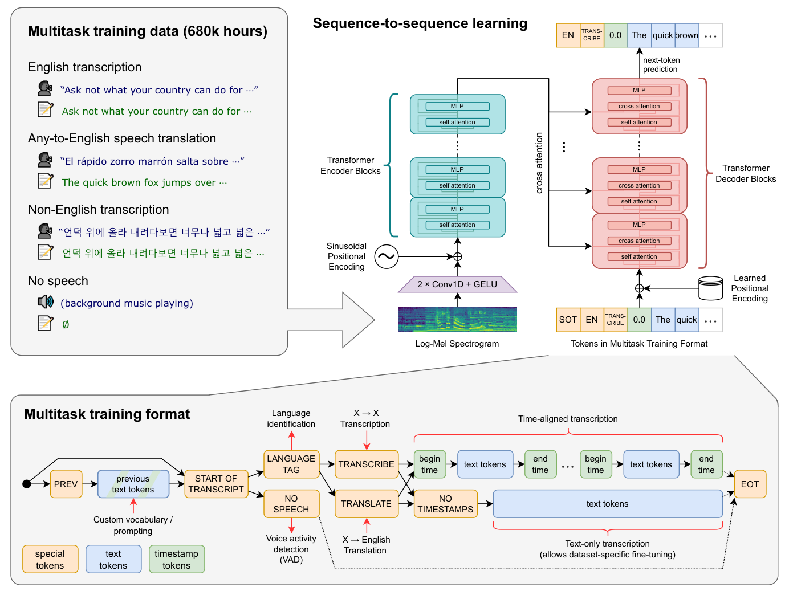
图Figure 1. Overview of our approach. A sequence-to-sequence Transformer model is trained on many different speech processing tasks, including multilingual speech recognition, speech translation, spoken language identification, and voice activity detection. All of these tasks are jointly represented as a sequence of tokens to be predicted by the decoder, allowing for a single model to replace many different stages of a traditional speech processing pipeline. The multitask training format uses a set of special tokens that serve as task specifiers or classification targets, as further explained in Section 2.3.
图 1. 方法概览。一个序列到序列 Transformer 模型在多种语音处理任务上联合训练，包括多语言语音识别、语音翻译、口语语种识别和语音活动检测。所有这些任务统一表示为解码器要预测的 token 序列，使单个模型可以替代传统语音处理流水线中的许多不同阶段。多任务训练格式使用一组特殊 token 作为任务指定符或分类目标，详见 Section 2.3。
2.4 训练细节Training Details
We train a suite of models of various sizes in order to study the scaling properties of Whisper. Please see Table 1 for an overview. We train with data parallelism across accelerators using FP16 with dynamic loss scaling and activation checkpointing (Griewank & Walther, 2000; Chen et al., 2016). Models were trained with AdamW (Loshchilov & Hutter, 2017) and gradient norm clipping (Pascanu et al., 2013) with a linear learning rate decay to zero after a warmup over the first 2048 updates. A batch size of 256 segments was used, and the models are trained for 220 updates which is between two and three passes over the dataset. Due to only training for a few epochs, over-fitting is not a large concern, and we do not use any data augmentation or regularization and instead rely on the diversity contained within such a large dataset to encourage generalization and robustness.
我们训练了一组不同尺寸的模型，以研究 Whisper 的缩放特性。概览请见 Table 1。训练采用跨加速器的数据并行，使用 FP16 配合动态损失缩放和激活检查点（activation checkpointing）（Griewank & Walther, 2000; Chen et al., 2016）。模型使用 AdamW（Loshchilov & Hutter, 2017）和梯度范数裁剪（Pascanu et al., 2013）训练，学习率先在前 2048 次更新内 warmup，随后线性衰减到零。批大小为 256 个片段，模型训练 220 次更新（原文排版如此，即 2 的 20 次方≈104 万次更新），大约相当于在数据集上跑了 2 到 3 遍。由于只训练了几个 epoch，过拟合不是大问题，我们不使用任何数据增强或正则化，而是依靠如此
Please see Appendix F for full training hyperparameters.3 During early development and evaluation we observed that Whisper models had a tendency to transcribe plausible but almost always incorrect guesses for the names of speakers. This happens because many transcripts in the pre-training dataset include the name of the person who is speaking, encouraging the model to try to predict them, but this information is only rarely inferable from only the most recent 30 3After the original release of Whisper, we trained an additional Large model (denoted V2) for 2.5X more epochs while adding SpecAugment (Park et al., 2019), Stochastic Depth (Huang et al., 2016), and BPE Dropout (Provilkov et al., 2019) for regularization. Reported results have been updated to this improved model unless otherwise specified.
完整的训练超参数请见 Appendix F（脚注 3）。这是因为预训练数据里很多转写包含说话人姓名，诱使模型尝试预测它们，但这些信息很少能从最近 30 秒的音频里推断出来。（脚注 3：Whisper 初版发布后，我们又训练了一个额外的 Large 模型（记为 V2），多训 2.5X 轮次，并加入 SpecAugment（Park et al., 2019）、Stochastic Depth（Huang et al., 2016）与 BPE Dropout（Provilkov et al., 2019）做正则化。）除非另有说明，论文报告的结果均已更新为这个改进后的模型。
Model Layers Width Heads Parameters Tiny
表头：Model / Layers / Width / Heads / Parameters——Tiny（后续各档照原文）。
4 384 639M Base6 512 874M Small12 768 12244M Medium24 1024 16769M Large32 1280 201550M
（表格单元）1550M（Large-v2 参数量）。
Table 1. Architecture details of the Whisper model family.
表 1. Whisper 模型家族的架构细节。
seconds of audio context. To avoid this, we fine-tune Whisper models briefly on the subset of transcripts that do not include speaker annotations which removes this behavior.
秒的音频上下文几乎无法推断出来。为避免这种情况，我们在不包含说话人标注的转录子集上对 Whisper 模型做了短暂微调，从而消除了这一行为。
3 实验Experiments
3.1 零样本评测Zero-shot Evaluation
The goal of Whisper is to develop a single robust speech processing system that works reliably without the need for dataset specific fine-tuning to achieve high-quality results on specific distributions. To study this capability, we reuse a wide set of existing speech processing datasets to check whether Whisper is able to generalize well across domains, tasks, and languages. Instead of using the standard evaluation protocol for these datasets, which include both a train and test split, we evaluate Whisper in a zero-shot setting without using any of the training data for each of these datasets so that we are measuring broad generalization.
Whisper 的目标是开发一个单一的、鲁棒的语音处理系统：无需针对特定数据集微调，就能在特定分布上可靠地取得高质量结果。为研究这一能力，我们复用了一大批现有语音处理数据集，检验 Whisper 能否跨领域、跨任务、跨语言地良好泛化。我们没有采用这些数据集的标准评测协议（包含训练集和测试集划分），而是在零样本（zero-shot）设定下评测 Whisper——不使用每个数据集的任何训练数据，这样我们衡量的是广义的泛化能力。
3.2 评测指标Evaluation Metrics
Speech recognition research typically evaluates and compares systems based on the word error rate (WER) metric. However, WER, which is based on string edit distance, penalizes all differences between the model’s output and the reference transcript including innocuous differences in transcript style. As a result, systems that output transcripts that would be judged as correct by humans can still have a large WER due to minor formatting differences. While this poses a problem for all transcribers, it is particularly acute for zero-shot models like Whisper, which do not observe any examples of specific datasets transcript formats.
语音识别研究通常用词错误率（WER）指标来评测和比较系统。然而，WER 基于字符串编辑距离，它会惩罚模型输出与参考转录之间的所有差异，包括转录文体上无关紧要的差异。因此，即使系统输出的转录会被人类判为正确，仍可能因细微的格式差异而得到很高的 WER。这个问题对所有转录系统都存在，但对 Whisper 这样的零样本模型尤其尖锐，因为它们从未见过特定数据集的转录格式样例。
This is not a novel observation; the development of evaluation metrics that better correlate with human judgement is an active area of research, and while there are some promising methods, none have seen widespread adoption for speech recognition yet. We opt to address this problem with extensive standardization of text before the WER calculation to minimize penalization of non-semantic differences. Our text normalizer was developed through iterative manual inspection to identify common patterns where naive WER penalized Whisper models for an innocuous difference. Appendix C includes full details. For several datasets, we observe WER drops of up to 50 percent usually due to a quirk such as a dataset’s reference transcripts seperating contractions from words with whitespace. We caution this development procedure comes at a risk of overfitting to the transcription style of Whisper models which we investigate in Section 4.4. We are releasing the code for our text normalizer to allow for easy comparison and to help others study the performance of speech recognition systems in out-of-distribution settings.
这并非新发现；开发与人类判断更一致的评测指标是一个活跃的研究方向，虽然已有一些有前景的方法，但都还没有在语音识别领域被广泛采用。我们选择的应对方式是：在计算 WER 之前对文本做充分的标准化，尽量减少对非语义差异的惩罚。我们的文本标准化器是通过迭代式的人工检查开发的，用来找出那些天真 WER 会因无害差异而惩罚 Whisper 模型的常见模式。完整细节见 Appendix C。在好几个数据集上，我们观察到 WER 最多下降了 50 个百分点，通常是因为某个我们要提醒：这种开发流程存在过拟合到 Whisper 模型转录风格的风险，我们在 Section 4.4 中对此做了研究。我们将发布文本标准化器的代码，以便于比较，并帮助其他人在分布外（OOD）设定下研究语音识别系统的性能。
3.3 英语语音识别English Speech Recognition
In 2015, Deep Speech 2 (Amodei et al., 2015) reported a speech recognition system matched human-level performance when transcribing the LibriSpeech test-clean split. As part of their analysis they concluded: “Given this result, we suspect that there is little room for a generic speech system to further improve on clean read speech without further domain adaptation.” Yet seven years later the SOTA WER on LibriSpeech test-clean has dropped another 73% from their 5.3% to 1.4% (Zhang et al., 2021), far below their reported human-level error rate of 5.8%. Despite this massive and unanticipated further improvement in performance on held-out but in-distribution data, speech recognition models trained on LibriSpeech remain far above human error rates when used in other settings. What explains this gap between reportedly superhuman performance in-distribution and subhuman performance out-of-distribution?
2015 年，Deep Speech 2（Amodei et al., 2015）报告其语音识别系统在转录 LibriSpeech test-clean 划分时已达到人类水平。他们在分析中得出结论：「鉴于这一结果，我们怀疑一个通用的语音系统在干净的朗读语音上已没有多少进一步提升的空间，除非做进一步的领域适配。」然而七年之后，LibriSpeech test-clean 上的 SOTA WER 又从他们的 5.3% 再降 73% 到 1.4%（Zhang et al., 2021），远低于他们报告的 5.8% 的人类水平错误率。尽管在留出但同分布的数据上取得了如此巨大且意料之外的提升，在 LibriSpeech 上训练的语音识别模型换到其他设定下使用时，错误率仍远高于人类。如何解释这种号称分布内超人、分布外却不如人的落差？
We suspect a large part of this gap between human and machine behavior is due to conflating different capabilities being measured by human and machine performance on a test set. This claim may seem confusing at first; if both humans and machines are taking the same test, how can it be that different skills are being tested? The difference arises not in the testing but in how they trained for it. Humans are often asked to perform a task given little to no supervision on the specific data distribution being studied. Thus human performance is a measure of out-of-distribution generalization. But machine learning models are usually evaluated after training on a large amount of supervision from the evaluation distribution, meaning that machine performance is instead a measure of in-distribution generalization. While both humans and machines are being evaluated on the same test data, two quite different abilities are being measured due to a difference in train data.
我们怀疑，人与机器行为差距的很大一部分源于一个混淆：人类和机器在测试集上的表现所度量的其实是两种不同的能力。这个说法乍一听可能令人困惑：如果人和机器考的是同一张卷子，怎么考的会是不同技能？差别不在考试本身，而在备考方式。人类在接受测试时，通常几乎没有或完全没有针对该数据分布的监督信息。因此，人类的表现度量的是分布外（OOD）泛化能力。但机器学习模型通常是在评测分布上接受了大量监督训练之后再评测的，这意味着机器的表现度量的是分布内泛化能力。虽然人和机器在同一份测试数据上被评测，但由于训练数据的差别，实际被度量的是两种相当不同的能力。
Whisper models, which are trained on a broad and diverse distribution of audio and evaluated in a zero-shot setting, could potentially match human behavior much better than existing systems. To study whether this is the case (or whether the difference between machine and human performance is due to yet-to-be-understood factors) we can compare Whisper models with both human performance and standard fine-tuned machine learning models and check which they more closely match.
Whisper 模型在广泛而多样的音频分布上训练、并以零样本方式评测，因此有可能比现有系统更接近人类的行为模式。为研究是否如此（还是说人机差距来自尚未理解的因素），我们可以把 Whisper 模型同时与人类表现和标准微调模型比较，看它更接近哪一方。
Average WER on [Common Voice, CHiME-6, TED-LIUM] (%)
（图 2 纵轴：在 [Common Voice, CHiME-6, TED-LIUM] 上的平均 WER (%)。）
Supervised LibriSpeech models Zero-shot Whisper models Zero-shot Human (Alec) Ideal robustness (y = x)
（图 2 图例：LibriSpeech 监督模型 / 零样本 Whisper 模型 / 零样本人类（Alec）/ 理想鲁棒性（y = x）。）
30 20 10 0 0 1 2 3 4 5 6 7 8WER on LibriSpeech dev-clean (%)
（图 2 横轴：LibriSpeech dev-clean 上的 WER (%)。）
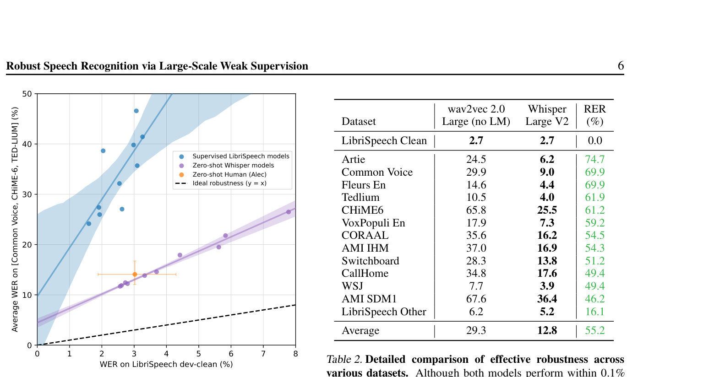
图Figure 2. Zero-shot Whisper models close the gap to human robustness. Despite matching or outperforming a human on LibriSpeech dev-clean, supervised LibriSpeech models make roughly twice as many errors as a human on other datasets demonstrating their brittleness and lack of robustness. The estimated robustness frontier of zero-shot Whisper models, however, includes the 95% confidence interval for this particular human.
图 2. 零样本 Whisper 模型缩小了与人类鲁棒性的差距。尽管在 LibriSpeech dev-clean 上达到或超过人类，LibriSpeech 监督模型在其他数据集上的错误数大约是人的两倍，暴露出它们的脆弱和缺乏鲁棒性。而零样本 Whisper 模型的估计鲁棒性前沿，已经覆盖了这一位人类的 95% 置信区间。
To quantify this difference, we examine both overall robustness, that is average performance across many distributions/datasets, and effective robustness, introduced by Taori et al. (2020), which measures the difference in expected performance between a reference dataset, which is usually in-distribution, and one or more out-of-distribution datasets. A model with high effective robustness does better than expected on out-of-distribution datasets as a function of its performance on the reference dataset and approaches the ideal of equal performance on all datasets. For our analysis, we use LibriSpeech as the reference dataset due to its central role in modern speech recognition research and the availability of many released models trained on it, which allows for characterizing robustness behaviors. We use a suite of 12 other academic speech recognition datasets to study out-of-distribution behaviors. Full details about these datasets can be found in Appendix A.
为量化这种差异，我们同时考察整体鲁棒性（即在多个分布/数据集上的平均表现）和有效鲁棒性（effective robustness，Taori et al. (2020) 提出）：后者度量模型在参考数据集（通常是分布内）与一个或多个分布外数据集之间期望表现的差值。有效鲁棒性高的模型，以其在参考数据集上的表现为基准，在分布外数据集上的表现会超出预期，逼近在所有数据集上表现一致的理想状态。在我们的分析中，参考数据集选用 LibriSpeech，因为它在现代语音识别研究中处于核心地位，且有许多基于它训练的已发布模型，便于刻画鲁棒性行为。我们用另外 12 个学术语音识别数据集来研究分布外行为。这些数据集的完整细节见 Appendix A。
Our main findings are summarized in Figure 2 and Table 2. Although the best zero-shot Whisper model has a relatively unremarkable LibriSpeech clean-test WER of 2.5, which is roughly the performance of modern supervised baseline or the mid-2019 state of the art, zero-shot Whisper models have very different robustness properties than supervised LibriSpeech models and out-perform all benchmarked LibriSpeech models by large amounts on other datasets. Even wav2vec 2.0 Whisper RER Dataset Large (no LM) Large V2
我们的主要发现汇总于图 2 与表 2。尽管最好的零样本 Whisper 模型 LibriSpeech clean-test WER 为 2.5，只相当于现代监督基线或 2019 年中期的 SOTA 水平，但零样本 Whisper 模型与 LibriSpeech 监督模型的鲁棒性特性截然不同，且在其他数据集上大幅超过所有参评的 LibriSpeech 模型。（表格表头：Even wav2vec 2.0 / Whisper；RER Dataset × Large (no LM) / Large V2。）
Table 2. Detailed comparison of effective robustness across various datasets. Although both models perform within 0.1% of each other on LibriSpeech, a zero-shot Whisper model performs much better on other datasets than expected for its LibriSpeech performance and makes 55.2% less errors on average. Results reported in word error rate (WER) for both models after applying our text normalizer.
表 2. 各数据集上有效鲁棒性的详细对比。尽管两个模型在 LibriSpeech 上的表现相差不到 0.1%，零样本 Whisper 模型在其他数据集上的表现远超按其 LibriSpeech 表现预期的水平，平均错误减少 55.2%。两个模型报告的都是应用本文文本标准化器后的词错误率（WER）。
| Dataset | (%) | ||||
|---|---|---|---|---|---|
| 40 | LibriSpeech Clean | 2.7 | 2.7 | 0.0 | |
| Supervised LibriSpeech models | Artie | 24.5 | 6.2 | 74.7 | |
| Zero-shot Whisper models | |||||
| Zero-shot Human (Alec) | Common Voice | 29.9 | 9.0 | 69.9 | |
| Ideal robustness (y = x) | Fleurs En | 14.6 | 4.4 | 69.9 | |
| 30 | Tedlium | 10.5 | 4.0 | 61.9 | |
| CHiME6 | 65.8 | 25.5 | 61.2 | ||
| VoxPopuli En | 17.9 | 7.3 | 59.2 | ||
| CORAAL | 35.6 | 16.2 | 54.5 | ||
| 20 | AMI IHM | 37.0 | 16.9 | 54.3 | |
| Switchboard | 28.3 | 13.8 | 51.2 | ||
| CallHome | 34.8 | 17.6 | 49.4 | ||
| WSJ | 7.7 | 3.9 | 49.4 | ||
| 10 | AMI SDM1 | 67.6 | 36.4 | 46.2 | |
| LibriSpeech Other | 6.2 | 5.2 | 16.1 | ||
| Average | 29.3 | 12.8 | 55.2 | ||
| 5 |
the smallest zero-shot Whisper model, which has only 39 million parameters and a 6.7 WER on LibriSpeech test-clean is roughly competitive with the best supervised LibriSpeech model when evaluated on other datasets. When compared to a human in Figure 2, the best zero-shot Whisper models roughly match their accuracy and robustness. For a detailed breakdown of this large improvement in robustness, Table 2 compares the performance of the best zero-shot Whisper model with a supervised LibriSpeech model that has the closest performance to it on LibriSpeech test-clean. Despite their very close performance on the reference distribution, the zero-shot Whisper model achieves an average relative error reduction of 55.2% when evaluated on other speech recognition datasets.
即使是最小的零样本 Whisper 模型——只有 39 million（3900 万）参数、LibriSpeech test-clean WER 为 6.7——在其他数据集上评测时也大致能与最好的 LibriSpeech 监督模型竞争。在 Figure 2 中与人类对比时，最好的零样本 Whisper 模型大致达到了人类的准确率和鲁棒性。为详细拆解鲁棒性上的巨大提升，Table 2 把最好的零样本 Whisper 模型与在 LibriSpeech test-clean 上表现最接近它的 LibriSpeech 监督模型做了对比。尽管两者在参考分布上的表现非常接近，零样本 Whisper 模型在其他语音识别数据集上评测时取得了平均 55.2% 的相对错误率下降。
This finding suggests emphasizing zero-shot and out-ofdistribution evaluations of models, particularly when attempting to compare to human performance, to avoid overstating the capabilities of machine learning systems due to misleading comparisons.
这一发现提示我们应强调模型的零样本和分布外评测——尤其是在试图与人类表现比较时——以避免因误导性比较而夸大机器学习系统的能力。
3.4 多语言语音识别Multi-lingual Speech Recognition
In order to compare to prior work on multilingual speech recognition, we report results on two low-data benchmarks: Multilingual LibriSpeech (MLS) (Pratap et al., 2020b) and VoxPopuli (Wang et al., 2021) in Table 3.
为了与此前多语言语音识别工作比较，我们在 Table 3 中报告了两个低数据基准上的结果：Multilingual LibriSpeech（MLS）（Pratap et al., 2020b）和 VoxPopuli（Wang et al., 2021）。
Whisper performs well on Multilingual LibriSpeech, outperforming XLS-R (Babu et al., 2021), mSLAM (Bapna MY KA BN GU PA LO TE ML KM UZ
Whisper 在 Multilingual LibriSpeech 上表现良好，超过 XLS-R (Babu et al., 2021)、mSLAM (Bapna et al., 2022)。（图表：各语种 WER（刻度 2.5/5/10/20/40/80）随预训练转写音频小时数（0.1/1/10/100/1K/10K/100K/1M）变化的散点，r2 = 0.83；语种代码 MY/KA/BN/GU/PA/LO/TE/ML/KM/UZ/TG/MT/NE/BE/HY/SW/MR/IS/KN/KK/SR/AF/CY/FA/LT/HE/AZ/LV/UR/SL/HI/ET/TA/HU/MK/AR/RO/GL/ZH/BG/FIL/BS/KO/DA/EL/HR/CS/SK/TH/VI/FI/NB/MS/UK/SV/TR/FR/CA/ID/NL/RU/PL/JA/DE/PT/EN/IT/ES。）
80TG MT NE BE HYSW MR IS KN Word Error Rate (WER) KK SR AF CY FA LT HE AZ LV UR SL HI ET
Whisper 在 Multilingual LibriSpeech 上表现良好，超过 XLS-R (Babu et al., 2021)、mSLAM (Bapna et al., 2022)。（图表：各语种 WER（刻度 2.5/5/10/20/40/80）随预训练转写音频小时数（0.1/1/10/100/1K/10K/100K/1M）变化的散点，r2 = 0.83；语种代码 MY/KA/BN/GU/PA/LO/TE/ML/KM/UZ/TG/MT/NE/BE/HY/SW/MR/IS/KN/KK/SR/AF/CY/FA/LT/HE/AZ/LV/UR/SL/HI/ET/TA/HU/MK/AR/RO/GL/ZH/BG/FIL/BS/KO/DA/EL/HR/CS/SK/TH/VI/FI/NB/MS/UK/SV/TR/FR/CA/ID/NL/RU/PL/JA/DE/PT/EN/IT/ES。）
TA HU MK AR RO GL ZH BG FIL BS KO DA EL HR CS SK TH VI
Whisper 在 Multilingual LibriSpeech 上表现良好，超过 XLS-R (Babu et al., 2021)、mSLAM (Bapna et al., 2022)。（图表：各语种 WER（刻度 2.5/5/10/20/40/80）随预训练转写音频小时数（0.1/1/10/100/1K/10K/100K/1M）变化的散点，r2 = 0.83；语种代码 MY/KA/BN/GU/PA/LO/TE/ML/KM/UZ/TG/MT/NE/BE/HY/SW/MR/IS/KN/KK/SR/AF/CY/FA/LT/HE/AZ/LV/UR/SL/HI/ET/TA/HU/MK/AR/RO/GL/ZH/BG/FIL/BS/KO/DA/EL/HR/CS/SK/TH/VI/FI/NB/MS/UK/SV/TR/FR/CA/ID/NL/RU/PL/JA/DE/PT/EN/IT/ES。）
FI NB MS UK SV TR FR CA ID NL RU PL JA
Whisper 在 Multilingual LibriSpeech 上表现良好，超过 XLS-R (Babu et al., 2021)、mSLAM (Bapna et al., 2022)。（图表：各语种 WER（刻度 2.5/5/10/20/40/80）随预训练转写音频小时数（0.1/1/10/100/1K/10K/100K/1M）变化的散点，r2 = 0.83；语种代码 MY/KA/BN/GU/PA/LO/TE/ML/KM/UZ/TG/MT/NE/BE/HY/SW/MR/IS/KN/KK/SR/AF/CY/FA/LT/HE/AZ/LV/UR/SL/HI/ET/TA/HU/MK/AR/RO/GL/ZH/BG/FIL/BS/KO/DA/EL/HR/CS/SK/TH/VI/FI/NB/MS/UK/SV/TR/FR/CA/ID/NL/RU/PL/JA/DE/PT/EN/IT/ES。）
DE PT EN IT r2 = 0.83 ES2.5 0.1 1 10 1001K 10K 100K 1M Hours of transcribed audio
Whisper 在 Multilingual LibriSpeech 上表现良好，超过 XLS-R (Babu et al., 2021)、mSLAM (Bapna et al., 2022)。（图表：各语种 WER（刻度 2.5/5/10/20/40/80）随预训练转写音频小时数（0.1/1/10/100/1K/10K/100K/1M）变化的散点，r2 = 0.83；语种代码 MY/KA/BN/GU/PA/LO/TE/ML/KM/UZ/TG/MT/NE/BE/HY/SW/MR/IS/KN/KK/SR/AF/CY/FA/LT/HE/AZ/LV/UR/SL/HI/ET/TA/HU/MK/AR/RO/GL/ZH/BG/FIL/BS/KO/DA/EL/HR/CS/SK/TH/VI/FI/NB/MS/UK/SV/TR/FR/CA/ID/NL/RU/PL/JA/DE/PT/EN/IT/ES。）
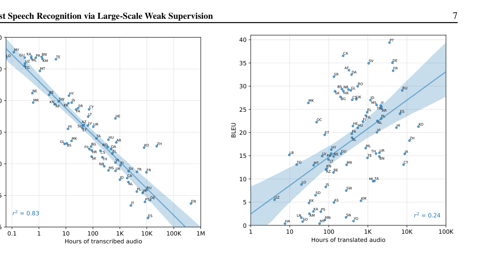
图Figure 3. Correlation of pre-training supervision amount with downstream speech recognition performance. The amount of pre-training speech recognition data for a given language is very predictive of zero-shot performance on that language in Fleurs.
图 3. 预训练监督数据量与下游语音识别性能的相关性。某种语言的预训练语音识别数据量，能很好地预测该语言在 Fleurs 上的零样本表现。
Model MLS VoxPopuli VP-10K + FT
（表头：Model × MLS / VoxPopuli / VP-10K + FT。）
- 15.3XLS-R (1B)10.9 10.6mSLAM-CTC (2B)9.7 9.1Maestro- 8.1Zero-Shot Whisper7.3 13.6Table 3. Multilingual speech recognition performance. Zeroshot Whisper improves performance on Multilingual LibriSpeech (MLS) but is still significantly behind both Maestro, XLS-R, and mSLAM on VoxPopuli.
表 3. 多语言语音识别性能。零样本 Whisper 在 Multilingual LibriSpeech（MLS）上提升了性能，但在 VoxPopuli 上仍显著落后于 Maestro、XLS-R 和 mSLAM。
et al., 2022), and Maestro (Chen et al., 2022b) in a zero-shot setting. We caution that we do use a simple text standardizer for this result which prevents direct comparison or claims of SOTA performance. On VoxPopuli, however, Whisper significantly underperforms prior work and only beats the VP-10K+FT baseline from the original paper. We suspect the underperformance of Whisper models on VoxPopuli could be due to other models including this distribution as a major source for their unsupervised pre-training data and the dataset having significantly more supervised data, which benefits fine-tuning. While MLS has 10 hours of training data per language, the average amount of training data per language is roughly 10× higher for VoxPopuli.
et al., 2022）和 Maestro（Chen et al., 2022b）。需要提醒的是，这个结果使用了我们简单的文本标准化器，因此不能直接与其他工作比较，也不能宣称 SOTA。然而在 VoxPopuli 上，Whisper 明显落后于此前工作，只超过了原论文中的 VP-10K+FT 基线。我们怀疑 Whisper 在 VoxPopuli 上的落后可能是因为：其他模型把这一分布作为其无监督预训练数据的主要来源，而且该数据集的监督数据量明显更大，这有利于微调。MLS 每种语言只有 10 小时训练数据，而 VoxPopuli 每种语言的平均训练数据量约为其 10 倍。
These two benchmarks are somewhat narrow since they only include 15 unique languages, almost all of which are in
这两个基准相对较窄，只含 15 种独特语言，且几乎都在（图表：翻译方向 BLEU（刻度 0/5/10/15/20/25/30/35/40）随翻译音频小时数（1/10/100/1K/10K/100K）变化的散点，r2 = 0.24；语种代码 PT/CA/DE/SV/FR/AF/DA/SR/RO/NB/BS/GL/RU/HR/SK/UK/CS/ID/BG/MK/MS/IT/TR/EL/AR/ES/PL/FIL/FI/OC/NL/HE/KO/HI/HU/VI/FA/ET/ZH/SL/ML/HY/UR/TH/GU/JA/LB/LV/NE/PA/TE/BN/LT/TG/CY/MR/MT/KN/BE/AZ/TA/MI/LO/IS/SW/SD/UZ/KM/AS/KK/KA/PS/MN/SN/LN/AM/YO/SO/MY/HA。）
40PT CA DE SV35FR AF DA SR RO30NB BS GL RU HR SK UK CS ID BG MK MS IT
这两个基准相对较窄，只含 15 种独特语言，且几乎都在（图表：翻译方向 BLEU（刻度 0/5/10/15/20/25/30/35/40）随翻译音频小时数（1/10/100/1K/10K/100K）变化的散点，r2 = 0.24；语种代码 PT/CA/DE/SV/FR/AF/DA/SR/RO/NB/BS/GL/RU/HR/SK/UK/CS/ID/BG/MK/MS/IT/TR/EL/AR/ES/PL/FIL/FI/OC/NL/HE/KO/HI/HU/VI/FA/ET/ZH/SL/ML/HY/UR/TH/GU/JA/LB/LV/NE/PA/TE/BN/LT/TG/CY/MR/MT/KN/BE/AZ/TA/MI/LO/IS/SW/SD/UZ/KM/AS/KK/KA/PS/MN/SN/LN/AM/YO/SO/MY/HA。）
25TR EL AR ES PL FIL FI OC NL HE KO HI HU BLEU VI
这两个基准相对较窄，只含 15 种独特语言，且几乎都在（图表：翻译方向 BLEU（刻度 0/5/10/15/20/25/30/35/40）随翻译音频小时数（1/10/100/1K/10K/100K）变化的散点，r2 = 0.24；语种代码 PT/CA/DE/SV/FR/AF/DA/SR/RO/NB/BS/GL/RU/HR/SK/UK/CS/ID/BG/MK/MS/IT/TR/EL/AR/ES/PL/FIL/FI/OC/NL/HE/KO/HI/HU/VI/FA/ET/ZH/SL/ML/HY/UR/TH/GU/JA/LB/LV/NE/PA/TE/BN/LT/TG/CY/MR/MT/KN/BE/AZ/TA/MI/LO/IS/SW/SD/UZ/KM/AS/KK/KA/PS/MN/SN/LN/AM/YO/SO/MY/HA。）
20FA ET ZH SL ML HY UR TH GU JA LB LV
这两个基准相对较窄，只含 15 种独特语言，且几乎都在（图表：翻译方向 BLEU（刻度 0/5/10/15/20/25/30/35/40）随翻译音频小时数（1/10/100/1K/10K/100K）变化的散点，r2 = 0.24；语种代码 PT/CA/DE/SV/FR/AF/DA/SR/RO/NB/BS/GL/RU/HR/SK/UK/CS/ID/BG/MK/MS/IT/TR/EL/AR/ES/PL/FIL/FI/OC/NL/HE/KO/HI/HU/VI/FA/ET/ZH/SL/ML/HY/UR/TH/GU/JA/LB/LV/NE/PA/TE/BN/LT/TG/CY/MR/MT/KN/BE/AZ/TA/MI/LO/IS/SW/SD/UZ/KM/AS/KK/KA/PS/MN/SN/LN/AM/YO/SO/MY/HA。）
15NE PA TE BN LT TG CY MR MT KN BE AZ
这两个基准相对较窄，只含 15 种独特语言，且几乎都在（图表：翻译方向 BLEU（刻度 0/5/10/15/20/25/30/35/40）随翻译音频小时数（1/10/100/1K/10K/100K）变化的散点，r2 = 0.24；语种代码 PT/CA/DE/SV/FR/AF/DA/SR/RO/NB/BS/GL/RU/HR/SK/UK/CS/ID/BG/MK/MS/IT/TR/EL/AR/ES/PL/FIL/FI/OC/NL/HE/KO/HI/HU/VI/FA/ET/ZH/SL/ML/HY/UR/TH/GU/JA/LB/LV/NE/PA/TE/BN/LT/TG/CY/MR/MT/KN/BE/AZ/TA/MI/LO/IS/SW/SD/UZ/KM/AS/KK/KA/PS/MN/SN/LN/AM/YO/SO/MY/HA。）
10TA MI LO IS SW SD UZ KM AS
这两个基准相对较窄，只含 15 种独特语言，且几乎都在（图表：翻译方向 BLEU（刻度 0/5/10/15/20/25/30/35/40）随翻译音频小时数（1/10/100/1K/10K/100K）变化的散点，r2 = 0.24；语种代码 PT/CA/DE/SV/FR/AF/DA/SR/RO/NB/BS/GL/RU/HR/SK/UK/CS/ID/BG/MK/MS/IT/TR/EL/AR/ES/PL/FIL/FI/OC/NL/HE/KO/HI/HU/VI/FA/ET/ZH/SL/ML/HY/UR/TH/GU/JA/LB/LV/NE/PA/TE/BN/LT/TG/CY/MR/MT/KN/BE/AZ/TA/MI/LO/IS/SW/SD/UZ/KM/AS/KK/KA/PS/MN/SN/LN/AM/YO/SO/MY/HA。）
5KK KA PS r2 = 0.24 MN SN LN AM YO SO MY HA
这两个基准相对较窄，只含 15 种独特语言，且几乎都在（图表：翻译方向 BLEU（刻度 0/5/10/15/20/25/30/35/40）随翻译音频小时数（1/10/100/1K/10K/100K）变化的散点，r2 = 0.24；语种代码 PT/CA/DE/SV/FR/AF/DA/SR/RO/NB/BS/GL/RU/HR/SK/UK/CS/ID/BG/MK/MS/IT/TR/EL/AR/ES/PL/FIL/FI/OC/NL/HE/KO/HI/HU/VI/FA/ET/ZH/SL/ML/HY/UR/TH/GU/JA/LB/LV/NE/PA/TE/BN/LT/TG/CY/MR/MT/KN/BE/AZ/TA/MI/LO/IS/SW/SD/UZ/KM/AS/KK/KA/PS/MN/SN/LN/AM/YO/SO/MY/HA。）
0 1 10 1001K 10K 100K Hours of translated audio
这两个基准相对较窄，只含 15 种独特语言，且几乎都在（图表：翻译方向 BLEU（刻度 0/5/10/15/20/25/30/35/40）随翻译音频小时数（1/10/100/1K/10K/100K）变化的散点，r2 = 0.24；语种代码 PT/CA/DE/SV/FR/AF/DA/SR/RO/NB/BS/GL/RU/HR/SK/UK/CS/ID/BG/MK/MS/IT/TR/EL/AR/ES/PL/FIL/FI/OC/NL/HE/KO/HI/HU/VI/FA/ET/ZH/SL/ML/HY/UR/TH/GU/JA/LB/LV/NE/PA/TE/BN/LT/TG/CY/MR/MT/KN/BE/AZ/TA/MI/LO/IS/SW/SD/UZ/KM/AS/KK/KA/PS/MN/SN/LN/AM/YO/SO/MY/HA。）
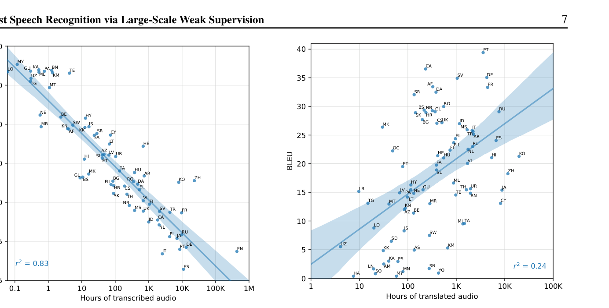
图Figure 4. Correlation of pre-training supervision amount with downstream translation performance. The amount of pretraining translation data for a given language is only moderately predictive of Whisper’s zero-shot performance on that language in Fleurs.
图 4. 预训练监督数据量与下游翻译性能的相关性。某种语言的预训练翻译数据量，对 Whisper 在该语言 Fleurs 上的零样本表现只有中等程度的预测力。
the Indo-European language family and many of which are high-resource languages. These benchmarks only provide limited coverage and room to study Whisper models multilingual capabilities which include training data for speech recognition in 75 languages. To study the performance of Whisper more broadly we also report performance on the Fleurs dataset (Conneau et al., 2022). In particular, we were interested in studying the relationship between the amount of training data we have for a given language and the resulting downstream zero-shot performance for that language. We visualize this relation in Figure 3. We find a strong squared correlation coefficient of 0.83 between the log of the word error rate and the log of the amount of training data per language. Checking the regression coefficient for a linear fit to these log-log values results in an estimate that WER halves for every 16× increase in training data. We also observed that many of the largest outliers in terms of worse than expected performance according to this trend are languages that have unique scripts and are more distantly related to the Indo-European languages making up the majority of the training dataset such as Hebrew (HE), Telugu (TE), Chinese (ZH), and Korean (KO). These differences could be due to a lack of transfer due to linguistic distance, our byte level BPE tokenizer being a poor match for these languages, or variations in data quality.
印欧语系，其中许多还是高资源语言。这些基准提供的覆盖面和研究空间有限，不足以考察 Whisper 模型的多语言能力——其训练数据覆盖 75 种语言的语音识别。为了更广泛地研究 Whisper 的表现，我们还报告了在 Fleurs 数据集（Conneau et al., 2022）上的结果。我们特别感兴趣的是：某种语言的训练数据量与该语言最终零样本表现之间的关系。我们在 Figure 3 中可视化了这种关系。我们发现，词错误率的对数与每种语言训练数据量的对数之间存在很强的相关性，平方相关系数达 0.83。对这些双对数值做线性拟合并检查回归系数，估计结果是：训练数据每增加 16 倍，WER 减半。我们还观察到，按这一趋势表现差于预期的最大离群点，许多是拥有独特文字系统、与训练数据中占多数的印欧语言亲缘较远的语言，例如希伯来语（HE）、泰卢固语（TE）、汉语（ZH）和韩语（KO）。这些差异可能源于语言距离导致迁移不足、我们的字节级 BPE 分词器与这些语言不匹配，或数据质量的差异。
Table 4. X→en Speech translation performance. Zero-shot Whisper outperforms existing models on CoVoST2 in the overall, medium, and low resource settings but still moderately underperforms on high-resource languages compared to prior directly supervised work.
表 4. X→en 语音翻译性能。零样本 Whisper 在 CoVoST2 的总体、中资源和低资源设定上超过现有模型，但在高资源语言上仍适度落后于此前直接监督的工作。
| 100 | |||||
| X →English | High | Mid | Low | All | |
| 50 | |||||
| XMEF-X | 34.2 | 20.2 | 5.9 | 14.7 | |
| XLS-R (2B) | 36.1 | 27.7 | 15.1 | 22.1 | |
| 20 | |||||
| mSLAM-CTC (2B) | 37.8 | 29.6 | 18.5 | 24.8 | |
| Maestro | 38.2 | 31.3 | 18.4 | 25.2 | 10 |
| Zero-Shot Whisper | 36.2 | 32.6 | 25.2 | 29.1 | 5 |
Language ID Fleurs w2v-bert-51 (0.6B)
（表格行：Language ID × Fleurs——w2v-bert-51 (0.6B) 71.4；mSLAM-CTC (2B) 77.7；Zero-shot Whisper 64.5。）
71.477.7Zero-shot Whisper64.5Table 5. Language identification performance. Zero-shot Whisper’s accuracy at language identification is not competitive with prior supervised results on Fleurs. This is partially due to Whisper being heavily penalized for having no training data for 20 of Fleurs languages.
表 5. 语种识别性能。零样本 Whisper 的语种识别准确率不及此前在 Fleurs 上的监督结果。部分原因是 Whisper 对 Fleurs 中的 20 种语言没有训练数据，因此受到严重惩罚。
3.5 翻译Translation
We study the translation capabilities of Whisper models by measuring their performance on the X→en subset of CoVoST2 (Wang et al., 2020b). We compare with Maestro, mSLAM, and XLS-R, the highest-performing prior work. We achieve a new state of the art of 29.1 BLEU zero-shot without using any of the CoVoST2 training data. We attribute this to the 68,000 hours of X→en translation data for these languages in our pre-training dataset which, although noisy, is vastly larger than the 861 hours of training data for X→en translation in CoVoST2. Since Whisper evaluation is zero-shot, it does particularly well on the lowest resource grouping of CoVoST2, improving over mSLAM by 6.7 BLEU. Conversely, the best Whisper model does not actually improve over Maestro and mSLAM on average for the highest resource languages.
我们通过测量 Whisper 模型在 CoVoST2（Wang et al., 2020b）X→en 子集上的表现来研究其翻译能力。我们与此前表现最好的工作 Maestro、mSLAM 和 XLS-R 比较。在不使用任何 CoVoST2 训练数据的情况下，我们以零样本方式取得了 29.1 BLEU 的新 SOTA。我们将其归功于预训练数据集中面向这些语言的 68,000 小时 X→en 翻译数据——尽管有噪声，但它远比 CoVoST2 中 861 小时的 X→en 翻译训练数据庞大。由于 Whisper 是零样本评测，它在 CoVoST2 最低资源分组上表现尤其好，比 mSLAM 提高了 6.7 BLEU。反过来，在最高资源语言上，最好的 Whisper 模型平均而言并没有真正超过 Maestro 和 mSLAM。
For an additional analysis on an even wider set of languages, we also re-purpose Fleurs, which is a speech recognition dataset, as a translation dataset. Since the same sentences are transcribed for every language we use the English transcripts as reference translations. In Figure 4 we visualize the correlation between the amount of translation training data per language and the resulting zero-shot BLEU score on Fleurs. While there is a clear trend of improvement with increasing training data, the squared correlation coefficient is much lower than the 0.83 observed for speech recognition white noise pub noise
作为在更多语言上的额外分析，我们还把 Fleurs 这个语音识别数据集改作翻译数据集使用。由于每种语言转录的是相同的句子，我们把英语转录当作参考译文。在 Figure 4 中，我们可视化了每种语言的翻译训练数据量与其在 Fleurs 上零样本 BLEU 分数之间的相关性。虽然随训练数据增加有明显改进趋势，但平方相关系数远低于语音识别上观察到的 0.83。（图 5：白噪声与 pub 噪声下 LibriSpeech test-clean WER（刻度 1/2/5/10/20/50/100）随信噪比（-10/0/10/20/30/40 dB）变化，对比 unispeech-sat-base-100h-libri-ft、wav2vec2-base-100h、wav2vec2-base-960h、wav2vec2-large-960h、wav2vec2-large-robust-ft-libri-960h、wav2vec2-large-960h-lv60-self、asr-crdnn-rnnlm-librispeech、asr-transformer-transformerlm-librispeech、hubert-large-ls960-ft、hubert-xlarge-ls960-ft、s2t-medium/large-librispeech-asr、stt_en_conformer_ctc_large、stt_en_conformer_transducer_xlarge 与 Whisper。）
WER on LibriSpeech test-clean (%)50 20 10 5 2 1 40 30 20 10 0 -10signal-to-noise ratio (dB)40 30 20 10 0 -10signal-to-noise ratio (dB) unispeech-sat-base-100h-libri-ft wav2vec2-base-100h wav2vec2-base-960h wav2vec2-large-960h wav2vec2-large-robust-ft-libri-960h wav2vec2-large-960h-lv60-self asr-crdnn-rnnlm-librispeech asr-transformer-transformerlm-librispeech hubert-large-ls960-ft hubert-xlarge-ls960-ft s2t-medium-librispeech-asr s2t-large-librispeech-asr stt_en_conformer_ctc_large stt_en_conformer_transducer_xlarge Whisper
虽然随训练数据增加有明显改进趋势，但平方相关系数远低于语音识别上观察到的 0.83。（图 5：白噪声与 pub 噪声下 LibriSpeech test-clean WER（刻度 1/2/5/10/20/50/100）随信噪比（-10/0/10/20/30/40 dB）变化，对比 unispeech-sat-base-100h-libri-ft、wav2vec2-base-100h、wav2vec2-base-960h、wav2vec2-large-960h、wav2vec2-large-robust-ft-libri-960h、wav2vec2-large-960h-lv60-self、asr-crdnn-rnnlm-librispeech、asr-transformer-transformerlm-librispeech、hubert-large-ls960-ft、hubert-xlarge-ls960-ft、s2t-medium/large-librispeech-asr、stt_en_conformer_ctc_large、stt_en_conformer_transducer_xlarge 与 Whisper。）
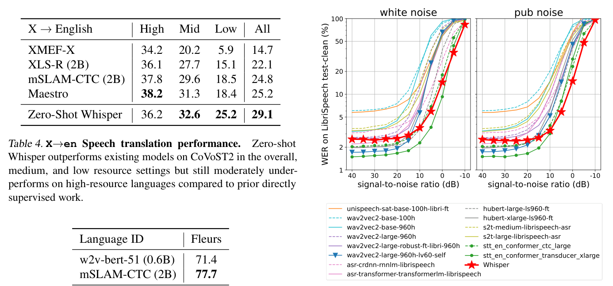
图Figure 5. WER on LibriSpeech test-clean as a function of SNR under additive white noise (left) and pub noise (right). The accuracy of LibriSpeech-trained models degrade faster than the best Whisper model (⋆). NVIDIA STT models (•) perform best under low noise but are outperformed by Whisper under high noise (SNR < 10 dB). The second-best model under low noise (▼) is fine-tuned on LibriSpeech only and degrades even more quickly.
图 5. 加性白噪声（左）和酒吧噪声（右）下，LibriSpeech test-clean 上 WER 随信噪比（SNR）的变化。LibriSpeech 训练模型的准确率比最好的 Whisper 模型（⋆）退化得更快。NVIDIA STT 模型（•）在低噪声下表现最好，但在高噪声（SNR < 10 dB）下被 Whisper 超过。低噪声下第二好的模型（▼）仅在 LibriSpeech 上微调，退化得更快。
and only 0.24. We suspect this is partly caused by the noisier training data due to errors in audio language identification. As an example, Welsh (CY) is an outlier with much worse than expected performance at only 13 BLEU despite supposedly having 9,000 hours of translation data. This large amount of Welsh translation data is surprising, ranking 4th overall for translation data and ahead of some of the most spoken languages in the world like French, Spanish, and Russian. Inspection shows the majority of supposedly Welsh translation data is actually English audio with English captions where the English audio was mis-classified as Welsh by the language identification system, resulting in it being included as translation training data rather transcription data according to our dataset creation rules.
只有 0.24。我们怀疑这部分是音频语种识别错误导致训练数据噪声更大所致。一个例子是威尔士语（CY）：尽管号称有 9,000 小时翻译数据，表现却远差于预期，只有 13 BLEU。威尔士语有如此大量的翻译数据本身就很反常——在全部翻译数据中排第 4，甚至超过了法语、西班牙语、俄语这些世界上使用人数最多的语言。检查表明，所谓威尔士语翻译数据的大多数其实是配英语字幕的英语音频：英语音频被语种识别系统误判为威尔士语，于是按我们的数据集构建规则被当作翻译训练数据而非转录训练数据收了进来。
3.6 语种识别Language Identification
To evaluate language identification, we use the Fleurs dataset (Conneau et al., 2022). The zero-shot performance of Whisper is not competitive with prior supervised work here and underperforms the supervised SOTA by 13.6%. However, Whisper is heavily disadvantaged for language identification on Fleurs, since the Whisper dataset contains no training data for 20 of the 102 languages in Fleurs, upperbounding accuracy at 80.4%. On the 82 overlapping languages the best Whisper model achieves 80.3% accuracy.
语种识别（LID）的评测使用 Fleurs 数据集（Conneau et al., 2022）。Whisper 的零样本表现不及此前的监督工作，比监督 SOTA 低 13.6%。不过，Whisper 在 Fleurs 语种识别上处于明显劣势：Fleurs 的 102 种语言中有 20 种在 Whisper 数据集中没有任何训练数据，这把准确率上限压到了 80.4%。在 82 种有覆盖的语言上，最好的 Whisper 模型达到 80.3% 的准确率。
3.7 对加性噪声的鲁棒性Robustness to Additive Noise
We tested the noise robustness of Whisper models and 14 LibriSpeech-trained models by measuring the WER when either white noise or pub noise from the Audio Degradation Toolbox (Mauch & Ewert, 2013) was added to the audio. The pub noise represents a more natural noisy environment with ambient noise and indistinct chatter typical in a crowded restaurant or a pub. Among the 14 models, twelve are pre-trained and/or fine-tuned on LibriSpeech, and the other two are NVIDIA STT models trained on a mixture dataset similar to prior work like SpeechStew that includes LibriSpeech. The level of additive noise corresponding to a given signal-to-noise ratio (SNR) is calculated based on the signal power of individual examples. Figure 5 shows how the ASR performance degrades as the additive noise becomes more intensive. There are many models that outperform our zero-shot performance under low noise (40 dB SNR), which is unsurprising given those models are trained primarily on LibriSpeech, but all models quickly degrade as the noise becomes more intensive, performing worse than the Whisper model under additive pub noise of SNR below 10 dB. This showcases Whisper’s robustness to noise, especially under more natural distribution shifts like the pub noise.
我们测试了 Whisper 模型和 14 个 LibriSpeech 训练模型的噪声鲁棒性：把 Audio Degradation Toolbox（Mauch & Ewert, 2013）中的白噪声或酒吧噪声（pub noise）加入音频后测量 WER。酒吧噪声代表更自然的嘈杂环境，带有环境噪声和嘈杂人声，类似拥挤餐厅或酒吧里的典型情形。这 14 个模型中，12 个在 LibriSpeech 上预训练和/或微调，另外 2 个是 NVIDIA STT 模型，在类似 SpeechStew 等此前工作那种包含 LibriSpeech 的混合数据集上训练。给定信噪比（SNR）对应的加性噪声强度，是基于每个样本各自的信号功率计算的。Figure 5 展示了 ASR 性能随加性噪声增强而退化的情况。在低噪声（40 dB SNR）下有许多模型超过我们的零样本表现——考虑到那些模型主要在 LibriSpeech 上训练，这并不意外——但随着噪声增强，所有模型都迅速退化，在 SNR 低于 10 dB 的加性酒吧噪声下全部比 Whisper 模型更差。这展示了 Whisper 对噪声的鲁棒性，尤其是在酒吧噪声这种更自然的分布漂移下。
3.8 长音频转录Long-form Transcription
Whisper models are trained on 30-second audio chunks and cannot consume longer audio inputs at once. This is not a
Whisper 模型在 30 秒音频片段上训练，无法一次性接收更长的音频输入。这并非新发现；开发与人类判断更一致的评测指标是一个活跃的研究方向，虽然已有一些有前景的方法，但都还没有在语音识别领域被广泛采用。
40 35 30Word Error Rate (%)25 20 15 10 5problem with most academic datasets comprised of short utterances but presents challenges in real-world applications which often require transcribing minutes- or hours-long audio. We developed a strategy to perform buffered transcription of long audio by consecutively transcribing 30-second segments of audio and shifting the window according to the timestamps predicted by the model. We observed that it is crucial to have beam search and temperature scheduling based on the repetitiveness and the log probability of the model predictions in order to reliably transcribe long audio.
这不是一个（图 6 坐标：WER (%) 5/10/15/20/25/30/35/40）大多数由短句组成的学术数据集的问题，但在真实应用中构成挑战——那里常常需要转录几分钟到几小时的音频。我们开发了一种长音频缓冲转录策略：连续转录 30 秒的音频段，并按照模型预测的时间戳移动窗口。我们观察到，要可靠地转录长音频，束搜索（beam search）和基于模型预测的重复程度与对数概率的温度调度是至关重要的。
The full procedure is described in Section 4.5.
完整流程见 Section 4.5。
We evaluate the long-form transcription performance on seven datasets consisting of speech recordings of various lengths and recording conditions, to cover as diverse a data distribution as possible. These include a long-form adaptation of TED-LIUM3 (Hernandez et al., 2018) concatenated so that each example is a full-length TED talk, a collection of jargon-laden segments taken from The Late Show with Stephen Colbert (Meanwhile), sets of videos/podcasts that has been used as ASR benchmarks in online blogs (Rev16 and Kincaid46), recordings of earnings calls (Del Rio et al., 2021), and the full-length interviews from the Corpus of Regional African American Language (CORAAL) (Gunter et al., 2021). Full details about the long-form datasets can be found in Appendix A.
我们在 7 个数据集上评测长音频转录性能，这些数据集包含不同长度和录音条件的语音，以覆盖尽可能多样的数据分布。包括：TED-LIUM3（Hernandez et al., 2018）的长音频改造版（拼接成每个样本都是一期完整 TED 演讲）；从 The Late Show with Stephen Colbert 中截取的术语密集片段集（Meanwhile）；曾在网上博客中被用作 ASR 基准的视频/播客集合（Rev16 和 Kincaid46）；财报电话会议录音（Del Rio et al., 2021）；以及 Corpus of Regional African American Language（CORAAL）（Gunter et al., 2021）的完整访谈。长音频数据集的完整细节见 Appendix A。
We compare the performance with open-source models as well as 4 commercial ASR services. The results are summarized in Figure 6, showing the distribution of word error rates from Whisper and the 4 commercial ASR services, TED-LIUM3 Meanwhile Kincaid46 Rev16 Earnings-21 Earnings-22 CORAAL
我们与开源模型以及 4 家商业 ASR 服务做了性能比较。结果汇总于图 6：Whisper 与 4 家商业 ASR 服务的 WER 分布（横轴 WER 刻度 0 起；数据集：TED-LIUM3、Meanwhile、Kincaid46、Rev16、Earnings-21、Earnings-22、CORAAL；对比系统：Company A/B/C/D 与 NVIDIA STT (CTC large)。）
0Whisper Company A Company B Company C Company D NVIDIA STT (CTC large)
结果汇总于图 6：Whisper 与 4 家商业 ASR 服务的 WER 分布（横轴 WER 刻度 0 起；数据集：TED-LIUM3、Meanwhile、Kincaid46、Rev16、Earnings-21、Earnings-22、CORAAL；对比系统：Company A/B/C/D 与 NVIDIA STT (CTC large)。）
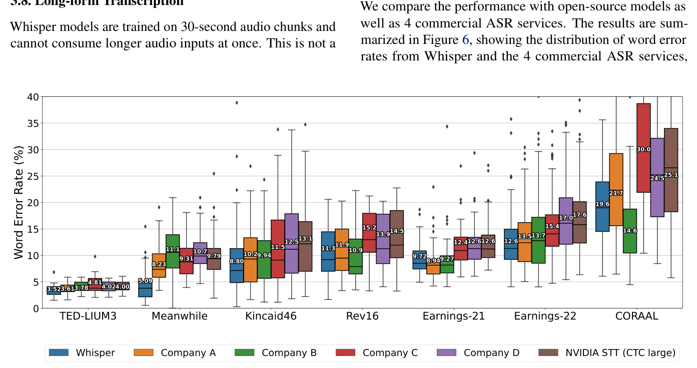
图Figure 6. Whisper is competitive with state-of-the-art commercial and open-source ASR systems in long-form transcription. The distribution of word error rates from six ASR systems on seven long-form datasets are compared, where the input lengths range from a few minutes to a few hours. The boxes show the quartiles of per-example WERs, and the per-dataset aggregate WERs are annotated on each box. Our model outperforms the best open source model (NVIDIA STT) on all datasets, and in most cases, commercial ASR systems as well.
图 6. Whisper 在长音频转录上可与最先进的商业和开源 ASR 系统竞争。图中比较了 6 个 ASR 系统在 7 个长音频数据集上的词错误率分布，输入长度从几分钟到几小时不等。箱线图展示逐样本 WER 的四分位数，每个箱上标注了按数据集聚合的 WER。我们的模型在所有数据集上超过最好的开源模型（NVIDIA STT），并且在多数情况下也超过商业 ASR 系统。
as well as the NVIDIA STT Conformer-CTC Large model from the NeMo toolkit (Kuchaiev et al., 2019) which performed the best among the open-source models. All commercial ASR services are queried using their default English transcription settings as of September 1st, 2022, and for the NVIDIA STT model we used their buffered inference implementation in the FrameBatchASR class to enable long-form transcription. The results show that Whisper performs better than the compared models on most datasets, especially on the Meanwhile dataset which is heavy with uncommon words. Additionally, we note the possibility that some of the commercial ASR systems have been trained on some of these publicly available datasets, and therefore these results may not be accurately reflecting the relative robustness of the systems.
以及 NeMo 工具包（Kuchaiev et al., 2019）中的 NVIDIA STT Conformer-CTC Large 模型，它是开源模型中表现最好的。所有商业 ASR 服务均按其 2022 年 9 月 1 日的默认英语转录设置调用；NVIDIA STT 模型则使用其 FrameBatchASR 类中的缓冲推理实现来支持长音频转录。结果显示，Whisper 在大多数数据集上优于所比较的模型，尤其是在充满罕见词的 Meanwhile 数据集上。此外我们指出一种可能：某些商业 ASR 系统可能在其中一些公开数据集上训练过，因此这些结果未必准确反映了各系统的相对鲁棒性。
3.9 与人类表现的比较Comparison with Human Performance
Because of ambiguous or indistinct speech as well as labeling errors, there are different levels of irreducible error in each dataset, and with WER metrics from ASR systems alone it is difficult to make sense of how much room for improvement exists in each dataset. To quantify how close Whisper’s performance is to the human performance, we selected 25 recordings from the Kincaid46 dataset and used 5 services to obtain transcripts produced by professional transcribers, among which one provides computer-assisted transcription and the other four are entirely human-transcribed. The audio selection covers various recording conditions such as scripted and unscripted broadcast, telephone and VoIP calls, and meetings. Figure 7 shows the distribution of per-example WERs and aggregate WER across the 25 recordings, where the computer-assisted service has the lowest aggregate WER that is 1.15% point better than Whisper’s, and the pure-human performance is only a fraction of a percentage point better than Whisper’s. These results indicate that Whisper’s English ASR performance is not perfect but very close to human-level accuracy.
由于语音含糊不清以及标注错误，每个数据集都存在不同程度的不可约减错误；只看 ASR 系统的 WER 数字，很难判断每个数据集还剩多少改进空间。为量化 Whisper 与人类表现的距离，我们从 Kincaid46 数据集中选取了 25 段录音，并使用 5 种服务获得专业转写员产出的转录，其中 1 种是计算机辅助转写，另外 4 种完全由人工转写。所选音频覆盖多种录音条件，如照稿和非照稿的广播、电话与 VoIP 通话以及会议。Figure 7 展示了这 25 段录音上逐样本 WER 的分布和聚合 WER：计算机辅助服务的聚合 WER 最低，比 Whisper 低 1.15%（1.15 个百分点）；纯人工的表现也只比 Whisper 好零点几个百分点。这些结果表明，Whisper 的英语 ASR 表现虽不完美，但已非常接近人类水平的准确率。
4 分析与消融Analysis and Ablations
4.1 模型规模缩放Model Scaling
A large amount of the promise in weakly supervised training approaches is their potential to use datasets much larger than those in traditional supervised learning. However, this comes with the cost of using data that is possibly much noisier and lower quality than gold-standard supervision. A concern with this approach is that although it may look promising to begin with, the performance of models trained on this kind of data may saturate at the inherent quality level of the dataset, which could be far below human level. A related concern is that as capacity and compute spent training on the dataset increases, models may learn to exploit the
弱监督训练方法的一大前景在于，它们有潜力使用比传统监督学习大得多的数据集。然而其代价是：所用数据可能比金标准监督数据噪声大得多、质量低得多。这种做法的一个隐忧是：尽管初期看起来有前景，但在这种数据上训练的模型，性能可能会饱和在数据集自身的质量水平上，而这一水平可能远低于人类。一个相关担忧是：随着容量与训练算力增加，模型可能学会利用（图 7 坐标：WER (%) 0/5/10/15/20/25；Whisper、A/B/C/D/E/F/G/H/I 各 ASR 系统、human transcription、computer-assisted。）
25Word Error Rate (%)20 15 10 5 0Whisper A B C D E F G H I ASR human transcription computer-assisted
一个相关担忧是：随着容量与训练算力增加，模型可能学会利用（图 7 坐标：WER (%) 0/5/10/15/20/25；Whisper、A/B/C/D/E/F/G/H/I 各 ASR 系统、human transcription、computer-assisted。）
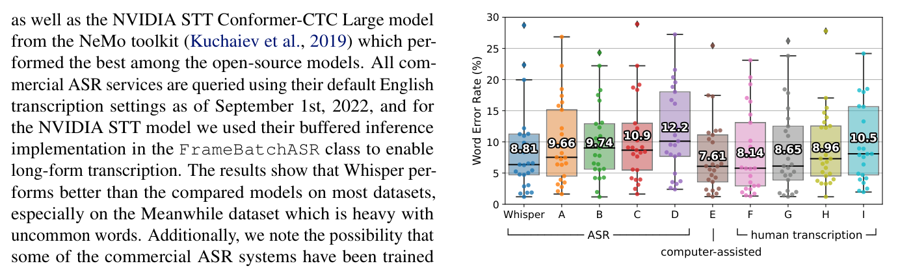
图Figure 7. Whisper’s performance is close to that of professional human transcribers. This plot shows the WER distributions of 25 recordings from the Kincaid46 dataset transcribed by Whisper, the same 4 commercial ASR systems from Figure 6 (A-D), one computer-assisted human transcription service (E) and 4 human transcription services (F-I). The box plot is superimposed with dots indicating the WERs on individual recordings, and the aggregate WER over the 25 recordings are annotated on each box.
图 7. Whisper 的表现接近专业人工转写员。图中展示了 Kincaid46 数据集 25 段录音的 WER 分布：Whisper、Figure 6 中同 4 家商业 ASR 系统（A–D）、1 种计算机辅助人工转写服务（E）和 4 种人工转写服务（F–I）。箱线图上叠加了各录音的 WER 散点，每个箱上标注了 25 段录音的聚合 WER。
idiosyncrasies of the dataset, and their ability to generalize robustly to out-of-distribution data could even degrade.
特异性（idiosyncrasies），其鲁棒泛化到分布外数据的能力反而可能退化。
To check whether this is the case, we study the zero-shot generalization of Whisper models as a function of the model size. Our analysis is summarized in Figure 8. With the exception of English speech recognition, performance continues to increase with model size across multilingual speech recognition, speech translation, and language identification. The diminishing returns for English speech recognition could be due to saturation effects from approaching humanlevel performance as analysis in Section 3.9 suggests.
为检验是否如此，我们研究了 Whisper 模型的零样本泛化如何随模型尺寸变化。分析结果概括在 Figure 8 中。除英语语音识别外，多语言语音识别、语音翻译和语种识别的性能都随模型尺寸持续提高。英语语音识别的收益递减，可能是接近人类水平带来的饱和效应，正如 Section 3.9 的分析所提示的。
4.2 数据集规模缩放Dataset Scaling
At 680,000 hours of labeled audio, the Whisper dataset is one of the largest ever created in supervised speech recognition. Exactly how important is the raw dataset size to Whisper’s performance? To study this, we trained a series of medium-sized models on subsampled versions of the dataset which are 0.5%, 1%, 2%, 4%, and 8% of the full dataset size and compared their performance with the same medium-sized model trained on the whole dataset. Early stopping based on the validation loss was used to select model checkpoints for each dataset size. Evaluation was performed on an exponential moving average estimate of the parameters (Polyak & Juditsky, 1992) using a smoothing rate of 0.9999 to help reduce the effect of the learning rate not fully decaying to zero for the models trained on the subsampled datasets due to early stopping. Performance on English and multilingual speech recognition and X→en translation is reported in Table 6.
以 680,000 小时标注音频计，Whisper 数据集是有监督语音识别领域有史以来最大的数据集之一。原始数据集规模对 Whisper 的性能究竟有多重要？为研究这个问题，我们在完整数据集的 0.5%、1%、2%、4% 和 8% 的子采样版本上训练了一组 medium 尺寸模型，并与在完整数据集上训练的同款 medium 模型比较。每个数据集尺寸都用基于验证损失的早停来选择模型检查点。评测在参数的指数滑动平均（Polyak & Juditsky, 1992）上进行，平滑率为 0.9999，以减轻子采样模型因早停导致学习率未完全衰减到零的影响。英语语音识别、多语言语音识别和 X→en 翻译的性能报告在 Table 6 中。
English Speech Recognition Multilingual Speech Recognition (Fleurs)
（图 8 标题：English Speech Recognition 与 Multilingual Speech Recognition (Fleurs)。）
20.0 100Average Large V2 Average Large V217.5 80 15.0WER on 67 languages (%) WER on 12 datasets (%) BLEU on 21 languages
（图 8 纵轴：67 种语言上的 WER (%) / 12 个数据集上的 WER (%) / 21 种语言上的 BLEU。）
12.5 60 10.0 40 7.5 5.0 20 2.5 0.0 038M 73M 244M 768M 1549M 1549M Model parameters 38M 73M 244M 768M 1549M 1549M Model parameters X->En Translation (CoVoST2) Language Identification (Fleurs)
（图 8 横轴：模型参数量 38M / 73M / 244M / 768M / 1549M / 1549M；子图 X->En Translation (CoVoST2) 与 Language Identification (Fleurs)。）
50 80Average Large V2 Average Large V240 70Accuracy on 102 languages (%)30 60 20 50 10 40 0 3038M 73M 244M 768M 1549M 1549M Model parameters 38M 73M 244M 768M 1549M 1549M Model parameters
（图 8 横轴：模型参数量 38M / 73M / 244M / 768M / 1549M / 1549M。）
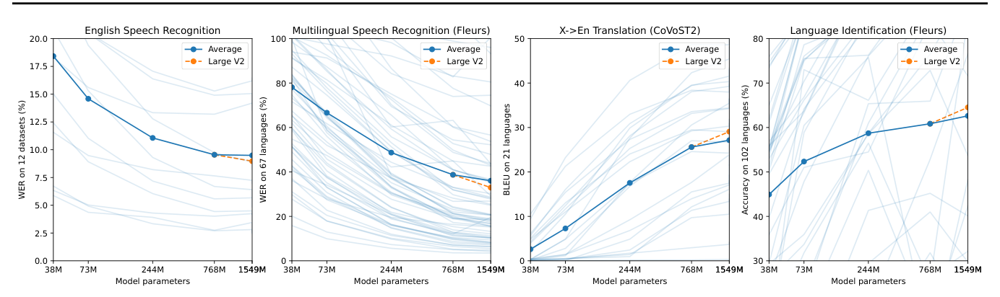
图Figure 8. Zero-shot Whisper performance scales reliably across tasks and languages with increasing model size. Lightly shaded lines represent individual datasets or languages, showing that performance is more varied than the smooth trends in aggregate performance. Large V2 distinguished with a dashed orange line since it includes several changes that are not present for the smaller models in this analysis.
图 8. 随模型尺寸增大，零样本 Whisper 的性能跨任务、跨语言可靠地扩展。浅色细线代表单个数据集或语言，显示个体表现的波动比聚合趋势的平滑曲线更大。Large V2 用橙色虚线单独标出，因为它包含本分析中小模型所没有的若干改动。
Dataset English Multilingual X→En size WER (↓) WER (↓) BLEU (↑)
（表 2 表头：Dataset × English / Multilingual / X→En；size × WER (↓) / WER (↓) / BLEU (↑)。）
3405 30.5 92.4 0.2 6811 19.6 72.7 1.7 13621 14.4 56.6 7.9 27243 12.3 45.0 13.9 54486 10.9 36.4 19.2 681070 9.9 29.2 24.8Table 6. Performance improves with increasing dataset size. English speech recognition performance refers to an average over 12 datasets while the Multilingual speech recognition reports performance on the overlapping subset of languages in Fleurs and X→en translation reports average BLEU on CoVoST2. Dataset size reported in hours.
表 6. 性能随数据集规模增大而提升。英语语音识别为 12 个数据集的平均；多语言语音识别报告 Fleurs 中有覆盖语言子集的表现；X→en 翻译报告 CoVoST2 上的平均 BLEU。数据集规模以小时计。
All increases in the dataset size result in improved performance on all tasks, although we see significant variability in improvement rates across tasks and sizes. Performance improves rapidly on English speech recognition from 3,000 to 13,000 hours and then slows down noticeably between 13,000 and 54,000 hours. Using the full dataset, which corresponds to another 12.5× increase in size results in only a further 1 point drop in WER. This mirrors the diminishing returns observed with model size scaling for English speech recognition and could similarly be explained by saturation effects when approaching human-level performance.
数据集规模的每一次增大都带来了所有任务上的性能提升，尽管不同任务和规模段的提升速率差异明显。英语语音识别性能从 3,000 到 13,000 小时快速提升，随后在 13,000 到 54,000 小时之间明显放缓。使用完整数据集——规模再增 12.5 倍——WER 只再降了 1 个点。这与英语语音识别在模型规模缩放中观察到的收益递减相呼应，同样可以用接近人类水平时的饱和效应来解释。
Improvements in WER follow a power-law trend for multilingual speech recognition till 54,000 hours and then deviate from this trend, improving only a further 7 points when increasing to the full dataset size. For X→en translation, performance is practically zero when training on 7,000 hours of audio or less, and then follows a roughly log-linear improvement trend till 54,000 hours before also showing diminishing returns when further scaling to the full dataset size.
多语言语音识别的 WER 改善在 54,000 小时之前遵循幂律趋势，之后偏离该趋势：增到完整数据集规模只再提升了 7 个点。X→en 翻译方面，训练数据在 7,000 小时或以下时性能几乎为零，随后到 54,000 小时呈近似对数线性的提升趋势，再往后也表现出
The general trend across tasks of diminishing returns when moving from 54,000 hours to our full dataset size of 680,000 hours could suggest that the current best Whisper models are under-trained relative to dataset size and performance could be further improved by a combination of longer training and larger models. It could also suggest that we are nearing the end of performance improvements from dataset size scaling for speech recognition. Further analysis is needed to characterize “scaling laws” for speech recognition in order to decided between these explanations.
各任务从 54,000 小时到我们完整的 680,000 小时数据集普遍出现收益递减，这可能意味着当前最好的 Whisper 模型相对于数据集规模训练不足，通过更长的训练与更大的模型组合，性能还能进一步提升。它也可能意味着，靠扩大数据集规模来改进语音识别的空间已接近尽头。需要进一步分析来刻画语音识别的「缩放定律」（scaling laws），才能在这两种解释之间做出判断。
4.3 多任务与多语言迁移Multitask and Multilingual Transfer
A potential concern with jointly training a single model on many tasks and languages is the possibility of negative transfer where interference between the learning of several tasks results in performance worse than would be achieved by training on only a single task or language. To investigate whether this is occurring, we compared the performance of models trained on just English speech recognition with our standard multitask and multilingual training setup and measured their average performance across our suite of zeroshot English speech recognition benchmarks. We adjust for the amount of FLOPs spent training on the task of English speech recognition as only 65% of compute is spent on this task in a joint training setup; analysis would otherwise be confounded by under-training on the task when compared to a same-sized English-only model.
用单一模型联合训练多个任务和语言，一个潜在的担忧是负迁移（negative transfer）：多个任务的学习互相干扰，导致性能差于只在单一任务或语言上训练的结果。为研究是否发生了这种情况，我们比较了只在英语语音识别上训练的模型与我们标准多任务多语言训练设置的模型，在我们的一套零样本英语语音识别基准上测量平均性能。我们对花在英语语音识别任务上的 FLOPs 做了校正，因为联合训练中只有 65% 的算力用于该任务；否则与同尺寸的纯英语模型相比，分析会被该任务训练不足所混淆。
Our results visualized in Figure 9 show that for small models trained with moderate amounts of compute, there is indeed negative transfer between tasks and languages: joint models underperform English-only models trained for the same amount of compute. However, multitask and multilingual English Only Multilingual and Multitask Average WER on 11 english speech recognition datasets
Figure 9 可视化了我们的结果：对于用中等算力训练的小模型，任务和语言之间确实存在负迁移——在相同算力下，联合模型不如纯英语模型。然而多任务多语种（图 8：English Only vs Multilingual and Multitask；11 个英文识别集平均 WER（8/10/12/14/16/18）随训练 FLOPs（10e+19/10e+20/10e+21/10e+22）变化。）
18 16 14 12 10 810e+19 10e+20 10e+21 10e+22 FLOPs training on english speech recognition
然而多任务多语种（图 8：English Only vs Multilingual and Multitask；11 个英文识别集平均 WER（8/10/12/14/16/18）随训练 FLOPs（10e+19/10e+20/10e+21/10e+22）变化。）
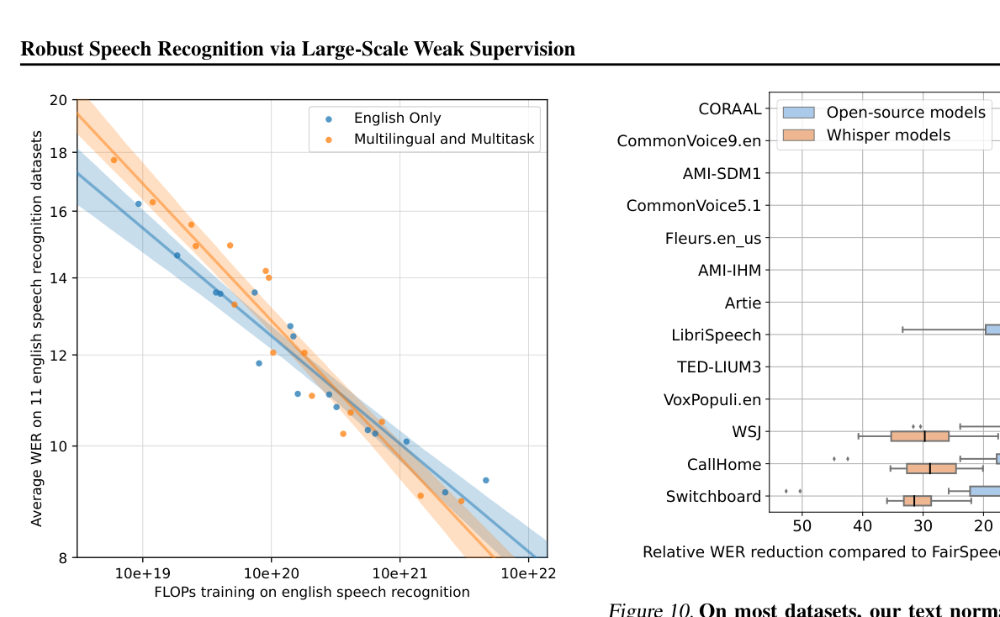
图Figure 9. Multitask and multilingual transfer improves with scale. For small models, performance on English speech recognition degrades when trained jointly in a multitask and multilingual setup. However, multilingual and multitask models benefit more from scale and eventually outperform models trained on English data only. 95% bootstrap estimate confidence intervals are shown.
图 9. 多任务与多语言迁移随规模改善。对小模型而言，多任务多语言联合训练会损害英语语音识别性能；但多语言多任务模型从规模中获益更多，最终超过只用英语数据训练的模型。图中给出 95% bootstrap 估计置信区间。
models scale better and for our largest experiments outperform their English-only counterparts demonstrating positive transfer from other tasks. For our largest experiments, joint models also slightly outperform English-only models even when not adjusting for compute spent per task.
模型的缩放性更好，在我们最大规模的实验中超过了纯英语模型，展现出来自其他任务的正迁移。在最大规模的实验中，即使不校正每个任务上花费的算力，联合模型也略优于纯英语模型。
4.4 文本标准化Text Normalization
Since we developed our text normalization jointly with Whisper to discount innocuous word errors, there is a risk that our normalizer is overfitted to fixing Whisper’s peculiarities rather than addressing general variation in transcription. To check this, we compared the performance of Whisper using our normalizer versus an independently developed one from the FairSpeech project (Koenecke et al., 2020). In Figure 10, we visualize the differences. On most datasets the two normalizers perform similarly, without significant differences in WER reduction between Whisper and compared open-source models, while on some datasets, namely WSJ, CallHome, and Switchboard, our normalizer reduces the WER of Whisper models’ significantly more. The differences in reduction can be traced down to different formats used by the ground truth and how the two normalizers are penalizing them. For example, in CallHome and Switchboard, our standardizer did not penalize differences in common English contractions such as “you’re” versus “you are”, and in WSJ, our normalizer standardized the written and spoCORAAL Open-source models Whisper models CommonVoice9.en AMI-SDM1 CommonVoice5.1 Fleurs.en_us AMI-IHM Artie LibriSpeech TED-LIUM3 VoxPopuli.en WSJ CallHome Switchboard
由于我们的文本标准化器是与 Whisper 同步开发的，用来豁免无害的词级差异，因此存在一种风险：它可能过拟合于修正 Whisper 特有的毛病，而不是解决转录中普遍存在的变异。为检验这一点，我们把使用我们的标准化器与使用 FairSpeech 项目（Koenecke et al., 2020）独立开发的标准化器时 Whisper 的表现做了比较。Figure 10 可视化了两者的差异。在大多数数据集上，两个标准化器表现相近，Whisper 与参评开源模型之间的 WER 降幅没有显著差异；但在一些数据集上——即 WSJ、CallHome 和 Switchboard——我们的标准化器对 Whisper 模型的 WER 降幅明显更大。降幅差异可以追溯到真值所用格式的不同，以及两个标准化器对它们的惩罚方式。例如在 CallHome 与 Switchboard 上，我们的标准化器不惩罚「you're」与「you are」这类常见英语缩写差异；在 WSJ 上，我们的标准化器统一了书面与（图表：相对 FairSpeech 标准化器的相对 WER 降低（刻度 0/10/20/30/40/50%）：开源模型 vs Whisper 模型；数据集 CORAAL、CommonVoice9.en、AMI-SDM1、CommonVoice5.1、Fleurs.en_us、AMI-IHM、Artie、LibriSpeech、TED-LIUM3、VoxPopuli.en、WSJ、CallHome、Switchboard。）
0 10 20 30 40 50Relative WER reduction compared to FairSpeech's normalizer (%)
例如在 CallHome 与 Switchboard 上，我们的标准化器不惩罚「you're」与「you are」这类常见英语缩写差异；在 WSJ 上，我们的标准化器统一了书面与（图表：相对 FairSpeech 标准化器的相对 WER 降低（刻度 0/10/20/30/40/50%）：开源模型 vs Whisper 模型；数据集 CORAAL、CommonVoice9.en、AMI-SDM1、CommonVoice5.1、Fleurs.en_us、AMI-IHM、Artie、LibriSpeech、TED-LIUM3、VoxPopuli.en、WSJ、CallHome、Switchboard。）
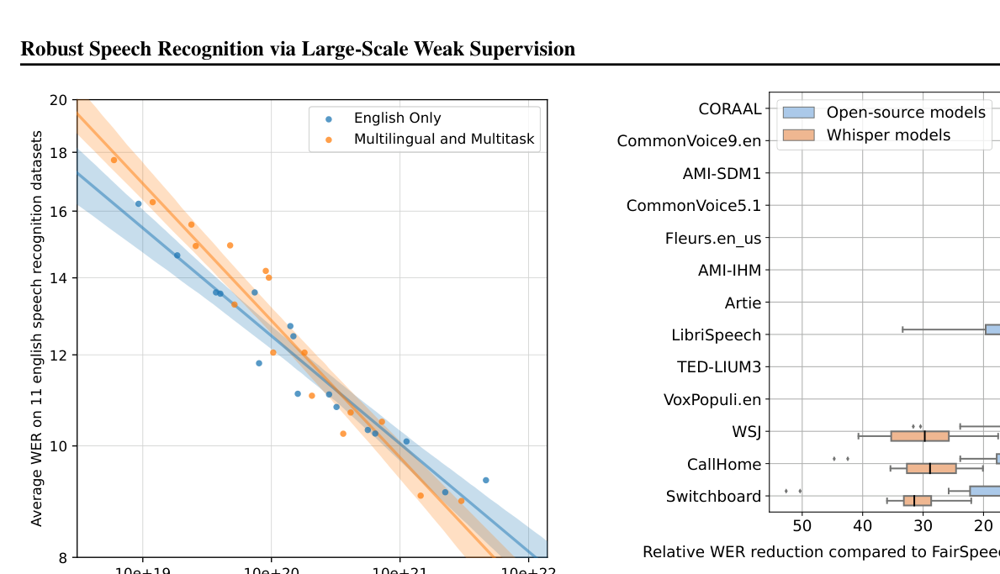
图Figure 10. On most datasets, our text normalizer has similar effect on reducing WERs between Whisper models and other open-source models, compared to FairSpeech’s normalizer. For each dataset, the boxplot shows the distribution of relative WER reduction across different models in our eval suite, showing that using our text normalizer generally results in lower WERs than FairSpeech’s. On a few datasets our normalizer reduces WER significantly and more so for Whisper models, such as CallHome and Switchboard which have many contractions in the ground truth and WSJ which contains many numerical expressions.
图 10. 在大多数数据集上，与 FairSpeech 的标准化器相比，我们的文本标准化器对 Whisper 模型和其他开源模型的 WER 降幅作用相近。对每个数据集，箱线图展示了我们评测套件中不同模型的相对 WER 降幅分布，总体看我们的标准化器带来的 WER 低于 FairSpeech 的。在少数数据集上（如真值含大量缩略形式的 CallHome 和 Switchboard，以及含大量数字表达的 WSJ），我们的标准化器显著降低 WER，且对 Whisper 模型降得更多。
ken forms of numerical and monetary expressions, such as “sixty-eight million dollars” versus “$68 million”.
语形式，例如「sixty-eight million dollars」与「$68 million」。
4.5 可靠长音频转录的策略Strategies for Reliable Long-form Transcription
Transcribing long-form audio using Whisper relies on accurate prediction of the timestamp tokens to determine the amount to shift the model’s 30-second audio context window by, and inaccurate transcription in one window may negatively impact transcription in the subsequent windows. We have developed a set of heuristics that help avoid failure cases of long-form transcription, which is applied in the results reported in sections 3.8 and 3.9. First, we use beam search with 5 beams using the log probability as the score function, to reduce repetition looping which happens more frequently in greedy decoding. We start with temperature 0, i.e. always selecting the tokens with the highest probability, and increase the temperature by 0.2 up to 1.0 when either the average log probability over the generated tokens is lower than −1 or the generated text has a gzip compression rate higher than 2.4. Providing the transcribed text from the preceding window as previous-text conditioning when the applied temperature is below 0.5 further improves the performance. We found that the probability of the <|nospeech|> token alone is not sufficient TED-LIUM3 Earnings-22 Earnings-21 Meanwhile Kincaid46 CORAAL Average Rev16 Greedy decoding only
用 Whisper 转录长音频依赖对时间戳 token 的准确预测，以此决定把模型 30 秒音频上下文窗口向前移动多少；一个窗口内不准确的转录可能对后续窗口产生负面影响。我们开发了一组启发式规则来避免长音频转录的失败情形，Section 3.8 和 Section 3.9 报告的结果都应用了这套规则。首先，我们使用 5 个束的束搜索（beam search），以对数概率作为打分函数，以减少贪心解码中更常出现的重复循环（repetition loop）。我们从温度 0 开始（即总是选择概率最高的 token），当生成 token 的平均对数概率低于 −1，或生成文本的 gzip 压缩率高于 2.4 时，把温度每次上调 0.2，最高到 1.0。当所用温度低于 0.5 时，把前一个窗口的转录文本作为「前文」（previous-text）条件输入，还能进一步提升性能。我们发现仅靠 <|nospeech|> token 的概率不足以（图：TED-LIUM3、Earnings-22、Earnings-21、Meanwhile、Kincaid46、CORAAL、Average、Rev16 各集，仅贪心解码（Greedy decoding only）。）
3.95 5.16 9.69 11.7 10.7 14.0 22.0 11.0+ Beam search4.16 5.71 9.42 11.5 10.2 13.4 20.0 10.6+ Temperature fallback4.16 5.71 9.42 11.5 10.2 13.4 20.0 10.6+ Voice activity detection3.56 4.61 9.45 11.4 10.1 13.2 19.4 10.2+ Previous text conditioning3.42 6.16 8.72 11.0 9.63 13.3 18.1 10.0+ Initial timestamp constraint3.51 5.26 8.41 11.5 9.73 12.6 19.1 10.0Table 7. Long-form transcription performance improves incrementally as additional decoding heuristics are employed. Details on each intervention are described in Section 4.5.
表 7. 随着更多解码启发式的加入，长音频转录性能逐步提升。每项干预的细节见 Section 4.5。
to distinguish a segment with no speech, but combining the no-speech probability threshold of 0.6 and the average log-probability threshold of −1 makes the voice activity detection of Whisper more reliable. Finally, to avoid a failure mode where the model ignores the first few words in the input, we constrained the initial timestamp token to be between 0.0 and 1.0 second. Table 7 shows that adding each of the interventions above incrementally reduces the WER overall, but not evenly across the dataset. These heuristics serve as a workaround for the noisy predictions of the model, and more research would be needed to further improve the reliability of long-form decoding.
判定一个片段没有语音；但把无语音概率阈值 0.6 与平均对数概率阈值 −1 结合起来，可以让 Whisper 的语音活动检测（VAD）更可靠。最后，为避免模型忽略输入开头几个词的失败模式，我们把初始时间戳 token 约束在 0.0 到 1.0 秒之间。Table 7 显示，逐条加入上述干预措施，整体 WER 逐步下降，但在各数据集上的改善并不均匀。这些启发式只是对模型噪声预测的变通处理，要进一步提高长音频解码的可靠性还需要更多研究。
5 相关工作Related Work
Scaling Speech RecognitionScaling Speech Recognition
A consistent theme across speech recognition research has been documenting the benefits of scaling compute, models, and datasets. Early work applying deep learning to speech recognition found improved performance with model depth and size and leveraged GPU acceleration to make training these larger models tractable (Mohamed et al., 2009). Further research demonstrated that the benefit of deep learning approaches to speech recognition increased with dataset size, improving from being only competitive with prior GMM-HMM systems when using just 3 hours of TIMIT training data for phone recognition to achieving a 30% word error rate reduction when trained on the 2,000 hour Switchboard dataset (Seide et al., 2011). Liao et al. (2013) is an early example of leveraging weakly supervised learning to increase the size of a deep learning based speech recognition dataset by over 1,000 hours. These trends continued with Deep Speech 2 (Amodei et al., 2015) being a notable system developing high-throughput distributed training across 16 GPUs and scaling to 12,000 hours of training data while demonstrating continuing improvements at that scale. By leveraging semi-supervised pre-training, Narayanan et al. (2018) were able to grow dataset size much further and study training on 162,000 hours of labeled audio. More recent work has explored billion-parameter models (Zhang et al., 2020) and using up to 1,000,000 hours of training data (Zhang et al., 2021).
语音识别的规模化：语音识别研究一以贯之的主题，是记录扩大算力、模型和数据集规模带来的收益。早期把深度学习应用于语音识别的工作发现，性能随模型深度和规模提升，并利用 GPU 加速使训练这些更大的模型变得可行（Mohamed et al., 2009）。后续研究表明，深度学习方法对语音识别的收益随数据集规模增大：只用 3 小时 TIMIT 训练数据做音素识别时仅与此前 GMM-HMM 系统相当，而在 2,000 小时的 Switchboard 数据集上训练时词错误率降低了 30%（Seide et al., 2011）。Liao et al. (2013) 是利用弱监督学习扩大深度学习语音识别数据集规模的早期例子，增量超过 1,000 小时。这一趋势延续下去：Deep Speech 2（Amodei et al., 2015）是一个代表性系统，开发了跨 16 块 GPU 的高吞吐分布式训练，把训练数据扩展到 12,000 小时，并展示了该规模下的持续提升。借助半监督预训练，Narayanan et al. (2018) 得以把数据集规模扩得更大，研究了在 162,000 小时标注音频上的训练。更近的工作探索了十亿参数级模型（Zhang et al., 2020）以及高达 1,000,000 小时的训练数据（Zhang et al., 2021）。
Multitask LearningMultitask Learning
Multitask learning (Caruana, 1997) has been studied for a long time. In speech recognition, multi-lingual models have been explored for well over a decade (Schultz & Kirchhoff, 2006). An inspirational and foundational work in NLP exploring multi-task learning with a single model is Collobert et al. (2011). Multitask learning in the sequence-to-sequence framework (Sutskever et al., 2014) using multiple encoders and decoders was investigated in Luong et al. (2015). The use of language codes with a shared encoder/decoder architecture was first demonstrated for machine translation by Johnson et al. (2017), removing the need for separate encoders and decoders. This approach was simplified further into the “text-to-text” framework of McCann et al. (2018) and popularized by its success with large transformer language models in the work of Radford et al. (2019) and Raffel et al. (2020). Toshniwal et al. (2018) demonstrated jointly training a modern deep learning speech recognition system on several languages with a single model, and Pratap et al. (2020a) scaled this line of work significantly to 50 languages with a billion-parameter model. MUTE (Wang et al., 2020c) and mSLAM (Bapna et al., 2022) studied joint training over both text and speech language tasks, demonstrating transfer between them.
多任务学习：多任务学习（Caruana, 1997）已被研究了很长时间。在语音识别领域，多语言模型的探索已有十几年历史（Schultz & Kirchhoff, 2006）。NLP 中用单一模型探索多任务学习的一项开创性基础工作是 Collobert et al. (2011)。Luong et al. (2015) 研究了在序列到序列框架（Sutskever et al., 2014）下使用多个编码器和解码器的多任务学习。Johnson et al. (2017) 首先在机器翻译中展示了共享编码器/解码器架构加语言代码的做法，去掉了对独立编码器和解码器的需求。这一思路被进一步简化为 McCann et al. (2018) 的「文本到文本」（text-to-text）框架，并随 Radford et al. (2019) 和 Raffel et al. (2020) 中大型 Transformer 语言模型的成功而流行开来。Toshniwal et al. (2018) 展示了用单一模型在多种语言上联合训练现代深度学习语音识别系统，Pratap et al. (2020a) 则用十亿参数模型把这一路线大幅扩展到 50 种语言。MUTE（Wang et al., 2020c）和 mSLAM（Bapna et al., 2022）研究了在文本和语音两类语言任务上的联合训练，展示了两者之间的迁移。
RobustnessRobustness
The question of how effectively models transfer and how robust they are to distribution shift and other types of perturbations has long been studied and is actively being researched across many fields of machine learning. Torralba & Efros (2011) highlighted the lack of generalization of machine learning models between datasets over a decade ago. Many other works have shown and continually reiterated how despite high performance on IID test sets, machine learning models can still make many mistakes when evaluated in even slightly different settings (Lake et al., 2017; Jia & Liang, 2017; Alcorn et al., 2019; Barbu et al., 2019; Recht et al., 2019). More recently, Taori et al. (2020) studied the robustness of image classification models, and Miller et al. (2020) investigated this for question-answering models. A key finding has been that multi-domain training increases robustness and generalization as discussed in the Introduction. This finding has been replicated across many fields in addition to speech recognition including NLP (Hendrycks et al., 2020) and computer vision (Radford et al.,
鲁棒性：模型的迁移效果如何、对分布漂移和其他扰动的鲁棒性如何，这一问题长期被研究，至今仍是机器学习多个领域的活跃方向。Torralba & Efros (2011) 十多年前就指出了机器学习模型在数据集之间缺乏泛化的问题。许多其他工作也不断表明并重申：尽管在 IID 测试集上性能很高，机器学习模型在哪怕略有不同的设定下评测时仍会犯许多错误（Lake et al., 2017; Jia & Liang, 2017; Alcorn et al., 2019; Barbu et al., 2019; Recht et al., 2019）。更近的工作中，Taori et al. (2020) 研究了图像分类模型的鲁棒性，Miller et al. (2020) 则针对问答模型做了研究。一个关键发现是：多领域训练能提升鲁棒性和泛化，正如引言中所讨论的。除语音识别外，这一发现还在包括 NLP（Hendrycks et al., 2020）和计算机视觉（Radford et al., 2021）在内的许多领域得到了复现。
2021).6 局限与未来工作Limitations and Future Work
From our experimental results, analyses, and ablations, we have noted several limitations and areas for future work.
从实验结果、分析和消融中，我们总结出以下几点局限和未来工作方向。
Improved decoding strategies.Improved decoding strategies.
As we have scaled Whisper, we have observed that larger models have made steady and reliable progress on reducing perception-related errors such as confusing similar-sounding words. Many remaining errors, particularly in long-form transcription seem more stubborn in nature and decidedly non-human/perceptual. They are a combination of failure modes of seq2seq models, language models, and text-audio alignment and include problems such as getting stuck in repeat loops, not transcribing the first or last few words of an audio segment, or complete hallucination where the model will output a transcript entirely unrelated to the actual audio. Although the decoding details discussed in Section 4.5 help significantly, we suspect fine-tuning Whisper models on a high-quality supervised dataset and/or using reinforcement learning to more directly optimize for decoding performance could help further reduce these errors.
随着 Whisper 规模扩大，我们观察到更大的模型在减少感知类错误（如混淆发音相近的词）上持续而稳定地进步。剩余的许多错误——尤其是在长音频转录中——性质上更顽固，且明显不是人类那种感知性错误。它们是 seq2seq 模型、语言模型和文本-音频对齐的多种失败模式的组合，包括陷入重复循环、漏掉音频片段开头或结尾的几个词，以及完全幻觉（hallucination）——模型输出与实际音频毫不相干的转录。虽然 Section 4.5 讨论的解码细节有显著帮助，但我们怀疑，在高质量监督数据集上微调 Whisper 模型，和/或用强化学习更直接地优化解码表现，可能进一步减少这些错误。
Increase Training Data For Lower-Resource LanguagesIncrease Training Data For Lower-Resource Languages
As Figure 3 shows, Whisper’s speech recognition performance is still quite poor on many languages. The same analysis suggests a clear route for improvement since performance on a language is very well predicted by the amount of training data for the language. Since our pre-training dataset is currently very English-heavy due to biases of our data collection pipeline, which sourced primarily from English-centric parts of the internet, most languages have less than 1000 hours of training data. A targeted effort at increasing the amount of data for these rarer languages could result in a large improvement to average speech recognition performance even with only a small increase in our overall training dataset size.
为低资源语言增加训练数据：如 Figure 3 所示，Whisper 的语音识别性能在许多语言上仍然相当差。同一分析也指出了明确的改进路线：一种语言的性能可以被该语言的训练数据量很好地预测。由于我们的数据采集流水线主要从以英语为中心的互联网部分获取数据，预训练数据集目前严重偏向英语，大多数语言的训练数据不足 1000 小时。有针对性地增加这些稀有语言的数据量，即使整体训练数据集规模只小幅增大，也可能带来平均语音识别性能的大幅提升。
Studying fine-tuningStudying fine-tuning
In this work, we have focused on the robustness properties of speech processing systems and as a result only studied the zero-shot transfer performance of Whisper. While this is a crucial setting to study due to it being representative of general reliability, for many domains where high-quality supervised speech data does exist, it is likely that results can be improved further by fine-tuning. An additional benefit of studying fine-tuning is that it allows for direct comparisons with prior work since it is a much more common evaluation setting.
研究微调：本文聚焦于语音处理系统的鲁棒性，因此只研究了 Whisper 的零样本迁移性能。零样本是至关重要的设定，因为它代表普遍的可靠性；但对于许多确实存在高质量监督语音数据的领域，微调很可能进一步提升结果。研究微调还有一个额外好处：能与此前工作直接比较，因为微调是更常见的评测设定。
Studying the impact of Language Models on RobustnessStudying the impact of Language Models on Robustness
As argued in the introduction, we suspect that Whisper’s robustness is partially due to its strong decoder, which is an audio conditional language model. It’s currently unclear to what degree the benefits of Whisper stem from training its encoder, decoder, or both. This could be studied by either ablating various design components of Whisper, such as training a decoder-less CTC model, or by studying how the performance of existing speech recognition encoders such as wav2vec 2.0 change when used together with a language model.
研究语言模型对鲁棒性的影响：如引言所述，我们怀疑 Whisper 的鲁棒性部分来自其强大的解码器——一个以音频为条件的语言模型。目前尚不清楚 Whisper 的收益在多大程度上来自编码器的训练、解码器的训练，还是两者兼有。可以通过两种路径研究：或者消融 Whisper 的各个设计组件（例如训练无解码器的 CTC 模型），或者研究现有语音识别编码器（如 wav2vec 2.0）与语言模型联用时性能如何变化。
Adding Auxiliary Training ObjectivesAdding Auxiliary Training Objectives
Whisper departs noticeably from most recent state-of-the-art speech recognition systems due to the lack of unsupervised pre-training or self-teaching methods. While we have not found them necessary to achieve good performance, it is possible that the results could be further improved by incorporating this.
加入辅助训练目标：Whisper 与近期大多数 SOTA 语音识别系统的一个明显不同，在于它没有用无监督预训练或自训练方法。虽然我们发现取得好性能并不需要它们，但加入这些方法可能进一步提升结果。
7 结论Conclusion
Whisper suggests that scaling weakly supervised pretraining has been underappreciated so far in speech recognition research. We achieve our results without the need for the self-supervision and self-training techniques that have been a mainstay of recent large-scale speech recognition work and demonstrate how simply training on a large and diverse supervised dataset and focusing on zero-shot transfer can significantly improve the robustness of a speech recognition system.
Whisper 表明，扩大弱监督预训练的规模在语音识别研究中一直被低估。取得这些结果并不依赖自监督和自训练技术——它们是近期大规模语音识别工作的主流支柱；我们证明了：简单地在一个大规模、多样化的监督数据集上训练，并聚焦零样本迁移，就能显著提升语音识别系统的鲁棒性。
ACKNOWLEDGMENTS We’d like to thank the millions of people who were involved in creating the data used by Whisper. We’d also like to thank Nick Ryder, Will Zhuk, and Andrew Carr for the conversation on the waterfall hike that inspired this project. We are also grateful to the Acceleration and Supercomputing teams at OpenAI for their critical work on software and hardware infrastructure this project used. We’d also like to thank Pamela Mishkin for advising the project from a policy perspective. Finally, we are grateful to the developers of the many software packages used throughout this project including, but not limited, to Numpy (Harris et al., 2020), SciPy (Virtanen et al., 2020), ftfy (Speer, 2019), PyTorch (Paszke et al., 2019), pandas (pandas development team, 2020), and scikit-learn (Pedregosa et al., 2011).
致谢我们还要感谢 Nick Ryder、Will Zhuk 和 Andrew Carr——在那次瀑布徒步中的谈话启发了这个项目。我们也感谢 OpenAI 的 Acceleration 和 Supercomputing 团队，他们在本项目所用的软件和硬件基础设施上做了关键工作。我们还要感谢 Pamela Mishkin 从政策角度为项目提供的建议。最后，我们感谢本项目用到的众多软件包的开发者，包括但不限于 Numpy（Harris et al., 2020）、SciPy（Virtanen et al., 2020）、ftfy（Speer, 2019）、PyTorch（Paszke et al., 2019）、pandas（pandas development team, 2020）和 scikit-learn（Pedregosa et al., 2011）。
ReferencesReferences
Alcorn, M. A., Li, Q., Gong, Z., Wang, C., Mai, L., Ku, W.- S., and Nguyen, A. Strike (with) a pose: Neural networks are easily fooled by strange poses of familiar objects. In Proceedings of the IEEE/CVF Conference on Computer Vision and Pattern Recognition, pp. 4845–4854, 2019.
Amodei, D., Anubhai, R., Battenberg, E., Case, C., Casper, J., Catanzaro, B., Chen, J., Chrzanowski, M., Coates, A., Diamos, G., et al. Deep speech 2: end-to-end speech recognition in english and mandarin. arxiv. arXiv preprint arXiv:1512.02595, 2015.
Ardila, R., Branson, M., Davis, K., Henretty, M., Kohler, M., Meyer, J., Morais, R., Saunders, L., Tyers, F. M., and Weber, G. Common voice: A massively-multilingual speech corpus. arXiv preprint arXiv:1912.06670, 2019.
Babu, A., Wang, C., Tjandra, A., Lakhotia, K., Xu, Q., Goyal, N., Singh, K., von Platen, P., Saraf, Y., Pino, J., et al.
XLS-R: Self-supervised cross-lingual speech representation learning at scale. arXiv preprint arXiv:2111.09296, 2021.
Baevski, A., Zhou, H., Mohamed, A., and Auli, M. wav2vec 2.0: A framework for self-supervised learning of speech representations. arXiv preprint arXiv:2006.11477, 2020.
Baevski, A., Hsu, W.-N., Conneau, A., and Auli, M. Unsupervised speech recognition. Advances in Neural Information Processing Systems, 34:27826–27839, 2021.
Bapna, A., Cherry, C., Zhang, Y., Jia, Y., Johnson, M., Cheng, Y., Khanuja, S., Riesa, J., and Conneau, A. mslam: Massively multilingual joint pre-training for speech and text. arXiv preprint arXiv:2202.01374, 2022.
Barbu, A., Mayo, D., Alverio, J., Luo, W., Wang, C., Gutfreund, D., Tenenbaum, J., and Katz, B. Objectnet: A large-scale bias-controlled dataset for pushing the limits of object recognition models. Advances in neural information processing systems, 32, 2019.
Caruana, R. Multitask learning. Machine learning, 28(1):
41–75, 1997.Chan, W., Park, D., Lee, C., Zhang, Y., Le, Q., and Norouzi, M. SpeechStew: Simply mix all available speech recognition data to train one large neural network. arXiv preprint arXiv:2104.02133, 2021.
Chen, G., Chai, S., Wang, G., Du, J., Zhang, W.-Q., Weng, C., Su, D., Povey, D., Trmal, J., Zhang, J., et al. Gigaspeech: An evolving, multi-domain asr corpus with 10,000 hours of transcribed audio. arXiv preprint arXiv:2106.06909, 2021.
Chen, S., Wu, Y., Wang, C., Chen, Z., Chen, Z., Liu, S., Wu, J., Qian, Y., Wei, F., Li, J., et al. Unispeech-sat: Universal speech representation learning with speaker aware pre-training. In ICASSP 2022-2022 IEEE International Conference on Acoustics, Speech and Signal Processing (ICASSP), pp. 6152–6156. IEEE, 2022a.
Chen, T., Xu, B., Zhang, C., and Guestrin, C. Training deep nets with sublinear memory cost. arXiv preprint arXiv:1604.06174, 2016.
Chen, Z., Zhang, Y., Rosenberg, A., Ramabhadran, B., Moreno, P., Bapna, A., and Zen, H. Maestro: Matched speech text representations through modality matching.
arXiv preprint arXiv:2204.03409, 2022b.
Child, R., Gray, S., Radford, A., and Sutskever, I. Generating long sequences with sparse transformers. arXiv preprint arXiv:1904.10509, 2019.
Collobert, R., Weston, J., Bottou, L., Karlen, M., Kavukcuoglu, K., and Kuksa, P. Natural language processing (almost) from scratch. Journal of machine learning research, 12(ARTICLE):2493–2537, 2011.
Conneau, A., Ma, M., Khanuja, S., Zhang, Y., Axelrod, V., Dalmia, S., Riesa, J., Rivera, C., and Bapna, A. Fleurs: Few-shot learning evaluation of universal representations of speech. arXiv preprint arXiv:2205.12446, 2022.
Del Rio, M., Delworth, N., Westerman, R., Huang, M., Bhandari, N., Palakapilly, J., McNamara, Q., Dong, J., Zelasko, P., and Jett´e, M. Earnings-21: a practical benchmark for asr in the wild. arXiv preprint arXiv:2104.11348,
2021.Galvez, D., Diamos, G., Torres, J. M. C., Achorn, K., Gopi, A., Kanter, D., Lam, M., Mazumder, M., and Reddi, V. J.
The people’s speech: A large-scale diverse english speech recognition dataset for commercial usage. arXiv preprint arXiv:2111.09344, 2021.
Geirhos, R., Jacobsen, J.-H., Michaelis, C., Zemel, R., Brendel, W., Bethge, M., and Wichmann, F. A. Shortcut learning in deep neural networks. Nature Machine Intelligence,
2(11):665–673, 2020.Ghorbani, B., Firat, O., Freitag, M., Bapna, A., Krikun, M., Garcia, X., Chelba, C., and Cherry, C.
Scaling laws for neural machine translation.
arXiv preprint arXiv:2109.07740, 2021.
Griewank, A. and Walther, A. Algorithm 799: revolve: an implementation of checkpointing for the reverse or adjoint mode of computational differentiation. ACM Transactions on Mathematical Software (TOMS), 26(1):19–45,
2000.Gunter, K., Vaughn, C., and Kendall, T.
Contextualizing/s/retraction: Sibilant variation and change in washington dc african american language. Language Variation and Change, 33(3):331–357, 2021.
Harris, C. R., Millman, K. J., van der Walt, S. J., Gommers, R., Virtanen, P., Cournapeau, D., Wieser, E., Taylor, J., Berg, S., Smith, N. J., Kern, R., Picus, M., Hoyer, S., van Kerkwijk, M. H., Brett, M., Haldane, A., Fern´andez del R´ıo, J., Wiebe, M., Peterson, P., G´erard-Marchant, P., Sheppard, K., Reddy, T., Weckesser, W., Abbasi, H., Gohlke, C., and Oliphant, T. E. Array programming with NumPy. Nature, 585:357–362, 2020. doi: 10.1038/ s41586-020-2649-2.
Hendrycks, D. and Gimpel, K. Gaussian error linear units (gelus). arXiv preprint arXiv:1606.08415, 2016.
Hendrycks, D., Liu, X., Wallace, E., Dziedzic, A., Krishnan, R., and Song, D. Pretrained transformers improve out-ofdistribution robustness. arXiv preprint arXiv:2004.06100,
2020.Hernandez, F., Nguyen, V., Ghannay, S., Tomashenko, N. A., and Est`eve, Y. Ted-lium 3: twice as much data and corpus repartition for experiments on speaker adaptation. In SPECOM, 2018.
Hsu, W.-N., Bolte, B., Tsai, Y.-H. H., Lakhotia, K., Salakhutdinov, R., and Mohamed, A.
Hubert: Selfsupervised speech representation learning by masked prediction of hidden units. IEEE/ACM Transactions on Audio, Speech, and Language Processing, 29:3451–3460, 2021a.
Hsu, W.-N., Sriram, A., Baevski, A., Likhomanenko, T., Xu, Q., Pratap, V., Kahn, J., Lee, A., Collobert, R., Synnaeve, G., et al. Robust wav2vec 2.0: Analyzing domain shift in self-supervised pre-training. arXiv preprint arXiv:2104.01027, 2021b.
Huang, G., Sun, Y., Liu, Z., Sedra, D., and Weinberger, K. Q. Deep networks with stochastic depth. In European conference on computer vision, pp. 646–661. Springer,
2016.Jia, R. and Liang, P.
Adversarial examples for evaluating reading comprehension systems. arXiv preprint arXiv:1707.07328, 2017.
Johnson, M., Schuster, M., Le, Q. V., Krikun, M., Wu, Y., Chen, Z., Thorat, N., Vi´egas, F., Wattenberg, M., Corrado, G., et al. Google’s multilingual neural machine translation system: Enabling zero-shot translation. Transactions of the Association for Computational Linguistics, 5:339–
351, 2017.Kendall, T. and Farrington, C.
The corpus of regional african american language. Version 2021.07. Eugene, OR: The Online Resources for African American Language Project. http://oraal.uoregon.edu/coraal, 2021. Accessed: 2022-09-01.
Koenecke, A., Nam, A., Lake, E., Nudell, J., Quartey, M., Mengesha, Z., Toups, C., Rickford, J. R., Jurafsky, D., and Goel, S. Racial disparities in automated speech recognition. Proceedings of the National Academy of Sciences,
117(14):7684–7689, 2020.Kolesnikov, A., Beyer, L., Zhai, X., Puigcerver, J., Yung, J., Gelly, S., and Houlsby, N. Big transfer (bit): General visual representation learning. In European conference on computer vision, pp. 491–507. Springer, 2020.
Kuchaiev, O., Li, J., Nguyen, H., Hrinchuk, O., Leary, R., Ginsburg, B., Kriman, S., Beliaev, S., Lavrukhin, V., Cook, J., et al. Nemo: a toolkit for building ai applications using neural modules. arXiv preprint arXiv:1909.09577,
2019.Lake, B. M., Ullman, T. D., Tenenbaum, J. B., and Gershman, S. J. Building machines that learn and think like people. Behavioral and brain sciences, 40, 2017.
Liao, H., McDermott, E., and Senior, A. Large scale deep neural network acoustic modeling with semi-supervised training data for youtube video transcription. In 2013 IEEE Workshop on Automatic Speech Recognition and Understanding, pp. 368–373. IEEE, 2013.
Likhomanenko, T., Xu, Q., Pratap, V., Tomasello, P., Kahn, J., Avidov, G., Collobert, R., and Synnaeve, G. Rethinking evaluation in asr: Are our models robust enough?
arXiv preprint arXiv:2010.11745, 2020.
Loshchilov, I. and Hutter, F. Decoupled weight decay regularization. arXiv preprint arXiv:1711.05101, 2017.
Luong, M.-T., Le, Q. V., Sutskever, I., Vinyals, O., and Kaiser, L. Multi-task sequence to sequence learning.
arXiv preprint arXiv:1511.06114, 2015.
Mahajan, D., Girshick, R., Ramanathan, V., He, K., Paluri, M., Li, Y., Bharambe, A., and Van Der Maaten, L. Exploring the limits of weakly supervised pretraining. In Proceedings of the European conference on computer vision (ECCV), pp. 181–196, 2018.
Mauch, M. and Ewert, S. The audio degradation toolbox and its application to robustness evaluation. In Proceedings of the 14th International Society for Music Information Retrieval Conference (ISMIR 2013), Curitiba, Brazil, 2013.
accepted.
McCann, B., Keskar, N. S., Xiong, C., and Socher, R. The natural language decathlon: Multitask learning as question answering. arXiv preprint arXiv:1806.08730, 2018.
Meyer, J., Rauchenstein, L., Eisenberg, J. D., and Howell, N. Artie bias corpus: An open dataset for detecting demographic bias in speech applications. In Proceedings of the 12th Language Resources and Evaluation Conference, pp. 6462–6468, Marseille, France, May 2020. European Language Resources Association. ISBN 979-10-95546- 34-4. URL https://aclanthology.org/2020.
lrec-1.796.
Miller, J., Krauth, K., Recht, B., and Schmidt, L. The effect of natural distribution shift on question answering models.
In ICML, 2020.
Mohamed, A.-r., Dahl, G., Hinton, G., et al. Deep belief networks for phone recognition. In Nips workshop on deep learning for speech recognition and related applications, volume 1, pp. 39, 2009.
Narayanan, A., Misra, A., Sim, K. C., Pundak, G., Tripathi, A., Elfeky, M., Haghani, P., Strohman, T., and Bacchiani, M. Toward domain-invariant speech recognition via large scale training. In 2018 IEEE Spoken Language Technology Workshop (SLT), pp. 441–447. IEEE, 2018.
Panayotov, V., Chen, G., Povey, D., and Khudanpur, S.
Librispeech: an asr corpus based on public domain audio books. In 2015 IEEE international conference on acoustics, speech and signal processing (ICASSP), pp. 5206–5210. IEEE, 2015. pandas development team, T.
pandas-dev/pandas: Pandas, February 2020. URL https://doi.org/10. 5281/zenodo.3509134.
Park, D. S., Chan, W., Zhang, Y., Chiu, C.-C., Zoph, B., Cubuk, E. D., and Le, Q. V. SpecAugment: A simple data augmentation method for automatic speech recognition.
arXiv preprint arXiv:1904.08779, 2019.
Pascanu, R., Mikolov, T., and Bengio, Y. On the difficulty of training recurrent neural networks. In International conference on machine learning, pp. 1310–1318. PMLR,
2013.Paszke, A., Gross, S., Massa, F., Lerer, A., Bradbury, J., Chanan, G., Killeen, T., Lin, Z., Gimelshein, N., Antiga, L., Desmaison, A., Kopf, A., Yang, E., DeVito, Z., Raison, M., Tejani, A., Chilamkurthy, S., Steiner, B., Fang, L., Bai, J., and Chintala, S. Pytorch: An imperative style, high-performance deep learning library. In Advances in Neural Information Processing Systems 32, pp. 8024–
8035, 2019.Pedregosa, F., Varoquaux, G., Gramfort, A., Michel, V., Thirion, B., Grisel, O., Blondel, M., Prettenhofer, P., Weiss, R., Dubourg, V., Vanderplas, J., Passos, A., Cournapeau, D., Brucher, M., Perrot, M., and Duchesnay, E.
Scikit-learn: Machine learning in Python. Journal of Machine Learning Research, 12:2825–2830, 2011.
Polyak, B. T. and Juditsky, A. B. Acceleration of stochastic approximation by averaging. SIAM journal on control and optimization, 30(4):838–855, 1992.
Pratap, V., Sriram, A., Tomasello, P., Hannun, A. Y., Liptchinsky, V., Synnaeve, G., and Collobert, R. Massively multilingual asr: 50 languages, 1 model, 1 billion parameters. ArXiv, abs/2007.03001, 2020a.
Pratap, V., Xu, Q., Sriram, A., Synnaeve, G., and Collobert, R. Mls: A large-scale multilingual dataset for speech research. arXiv preprint arXiv:2012.03411, 2020b.
Press, O. and Wolf, L. Using the output embedding to improve language models. In Proceedings of the 15th Conference of the European Chapter of the Association for Computational Linguistics: Volume 2, Short Papers, pp. 157–163, Valencia, Spain, April 2017. Association for Computational Linguistics. URL https: //aclanthology.org/E17-2025.
Provilkov, I., Emelianenko, D., and Voita, E. Bpe-dropout: Simple and effective subword regularization.
arXiv preprint arXiv:1910.13267, 2019.
Radford, A., Wu, J., Child, R., Luan, D., Amodei, D., and Sutskever, I. Language models are unsupervised multitask learners. 2019.
Radford, A., Kim, J. W., Hallacy, C., Ramesh, A., Goh, G., Agarwal, S., Sastry, G., Askell, A., Mishkin, P., Clark, J., Krueger, G., and Sutskever, I. Learning transferable visual models from natural language supervision. arXiv preprint arXiv:2103.00020, 2021.
Raffel, C., Shazeer, N., Roberts, A., Lee, K., Narang, S., Matena, M., Zhou, Y., Li, W., Liu, P. J., et al. Exploring the limits of transfer learning with a unified text-to-text transformer. J. Mach. Learn. Res., 21(140):1–67, 2020.
Ravanelli, M., Parcollet, T., Plantinga, P., Rouhe, A., Cornell, S., Lugosch, L., Subakan, C., Dawalatabad, N., Heba, A., Zhong, J., Chou, J.-C., Yeh, S.-L., Fu, S.-W., Liao, C.-F., Rastorgueva, E., Grondin, F., Aris, W., Na, H., Gao, Y., Mori, R. D., and Bengio, Y. SpeechBrain: A general-purpose speech toolkit, 2021. arXiv:2106.04624.
Recht, B., Roelofs, R., Schmidt, L., and Shankar, V.
Do ImageNet classifiers generalize to ImageNet?
In Chaudhuri, K. and Salakhutdinov, R. (eds.), Proceedings of the 36th International Conference on Machine Learning, volume 97 of Proceedings of Machine Learning Research, pp. 5389–5400. PMLR, 09–15 Jun 2019. URL https://proceedings.mlr.press/v97/ recht19a.html.
Russakovsky, O., Deng, J., Su, H., Krause, J., Satheesh, S., Ma, S., Huang, Z., Karpathy, A., Khosla, A., Bernstein, M., et al. Imagenet large scale visual recognition challenge. International journal of computer vision, 115(3):
211–252, 2015.Schultz, T. and Kirchhoff, K. Multilingual speech processing. Elsevier, 2006.
Seide, F., Li, G., Chen, X., and Yu, D. Feature engineering in context-dependent deep neural networks for conversational speech transcription. In 2011 IEEE Workshop on Automatic Speech Recognition & Understanding, pp.
24–29. IEEE, 2011.
Sennrich, R., Haddow, B., and Birch, A. Neural machine translation of rare words with subword units.
arXiv preprint arXiv:1508.07909, 2015.
Speer, R. ftfy. Zenodo, 2019. URL https://doi.org/ 10.5281/zenodo.2591652. Version 5.5.Sutskever, I., Vinyals, O., and Le, Q. V. Sequence to sequence learning with neural networks. Advances in neural information processing systems, 27, 2014.
Taori, R., Dave, A., Shankar, V., Carlini, N., Recht, B., and Schmidt, L.
Measuring robustness to natural distribution shifts in image classification. In Larochelle, H., Ranzato, M., Hadsell, R., Balcan, M., and Lin, H. (eds.), Advances in Neural Information Processing Systems, volume 33, pp. 18583–18599. Curran Associates, Inc., 2020.
URL https://proceedings. neurips.cc/paper/2020/file/ d8330f857a17c53d217014ee776bfd50-Paper. pdf.
Torralba, A. and Efros, A. A. Unbiased look at dataset bias.
CVPR 2011, pp. 1521–1528, 2011.
Toshniwal, S., Sainath, T. N., Weiss, R. J., Li, B., Moreno, P. J., Weinstein, E., and Rao, K. Multilingual speech recognition with a single end-to-end model. 2018 IEEE International Conference on Acoustics, Speech and Signal Processing (ICASSP), pp. 4904–4908, 2018.
Valk, J. and Alum¨ae, T. Voxlingua107: a dataset for spoken language recognition. In 2021 IEEE Spoken Language Technology Workshop (SLT), pp. 652–658. IEEE, 2021.
Vaswani, A., Shazeer, N., Parmar, N., Uszkoreit, J., Jones, L., Gomez, A. N., Kaiser, Ł., and Polosukhin, I. Attention is all you need. In Advances in neural information processing systems, pp. 5998–6008, 2017.
Virtanen, P., Gommers, R., Oliphant, T. E., Haberland, M., Reddy, T., Cournapeau, D., Burovski, E., Peterson, P., Weckesser, W., Bright, J., van der Walt, S. J., Brett, M., Wilson, J., Millman, K. J., Mayorov, N., Nelson, A. R. J., Jones, E., Kern, R., Larson, E., Carey, C. J., Polat, ˙I., Feng, Y., Moore, E. W., VanderPlas, J., Laxalde, D., Perktold, J., Cimrman, R., Henriksen, I., Quintero, E. A., Harris, C. R., Archibald, A. M., Ribeiro, A. H., Pedregosa, F., van Mulbregt, P., and SciPy 1.0 Contributors. SciPy 1.0: Fundamental Algorithms for Scientific Computing in Python. Nature Methods, 17:261–272, 2020. doi: 10.1038/s41592-019-0686-2.
Wang, C., Tang, Y., Ma, X., Wu, A., Okhonko, D., and Pino, J. fairseq s2t: Fast speech-to-text modeling with fairseq.
arXiv preprint arXiv:2010.05171, 2020a.
Wang, C., Wu, A., and Pino, J. Covost 2 and massively multilingual speech-to-text translation. arXiv preprint arXiv:2007.10310, 2020b.
Wang, C., Riviere, M., Lee, A., Wu, A., Talnikar, C., Haziza, D., Williamson, M., Pino, J., and Dupoux, E. Voxpopuli: A large-scale multilingual speech corpus for representation learning, semi-supervised learning and interpretation.
arXiv preprint arXiv:2101.00390, 2021.
Wang, P., Sainath, T. N., and Weiss, R. J. Multitask training with text data for end-to-end speech recognition. arXiv preprint arXiv:2010.14318, 2020c.
Watanabe, S., Mandel, M., Barker, J., Vincent, E., Arora, A., Chang, X., Khudanpur, S., Manohar, V., Povey, D., Raj, D., et al. Chime-6 challenge: Tackling multispeaker speech recognition for unsegmented recordings. arXiv preprint arXiv:2004.09249, 2020.
Xu, Q., Baevski, A., Likhomanenko, T., Tomasello, P., Conneau, A., Collobert, R., Synnaeve, G., and Auli, M. Selftraining and pre-training are complementary for speech recognition. In ICASSP 2021-2021 IEEE International Conference on Acoustics, Speech and Signal Processing (ICASSP), pp. 3030–3034. IEEE, 2021.
Zhang, Y., Qin, J., Park, D. S., Han, W., Chiu, C.-C., Pang, R., Le, Q. V., and Wu, Y. Pushing the limits of semisupervised learning for automatic speech recognition.
arXiv preprint arXiv:2010.10504, 2020.
Zhang, Y., Park, D. S., Han, W., Qin, J., Gulati, A., Shor, J., Jansen, A., Xu, Y., Huang, Y., Wang, S., et al. BigSSL: Exploring the frontier of large-scale semi-supervised learning for automatic speech recognition. arXiv preprint arXiv:2109.13226, 2021.
A 评测数据集Evaluation Datasets.
A.1 短音频纯英语数据集Short-form English-only datasets
• LibriSpeech (Panayotov et al., 2015): We used the test-clean and test-other splits from the LibriSpeech ASR corpus.
• LibriSpeech（Panayotov et al., 2015）：我们使用 LibriSpeech ASR 语料库的 test-clean 和 test-other 划分。
• TED-LIUM 3 (Hernandez et al., 2018): We used the test split of TED-LIUM Release 3, using the segmented manual transcripts included in the release.
• TED-LIUM 3（Hernandez et al., 2018）：我们使用 TED-LIUM Release 3 的测试划分，使用发布版中分段的人工转录。
• Common Voice 5.1 (Ardila et al., 2019): We downloaded the English subset of Common Voice Corpus 5.1 from the official website.
• Common Voice 5.1（Ardila et al., 2019）：我们从官网下载了 Common Voice Corpus 5.1 的英语子集。
• Artie bias corpus (Meyer et al., 2020): We used the Artie bias corpus. This is a subset of the Common Voice dataset.
• Artie bias corpus（Meyer et al., 2020）：我们使用 Artie bias corpus。它是 Common Voice 数据集的一个子集。
• CallHome and Switchboard: We used the two corpora from LDC2002S09 and LDC2002T43.
• CallHome 和 Switchboard：我们使用 LDC2002S09 和 LDC2002T43 两个语料库。
• WSJ: We used LDC93S6B and LDC94S13B and followed the s5 recipe to preprocess the dataset.• CORAAL: We used the 231 interviews from CORAAL (Kendall & Farrington, 2021) and used the preprocessing script from the FairSpeech project.
• CORAAL：我们使用 CORAAL（Kendall & Farrington, 2021）的 231 个访谈，并使用 FairSpeech 项目的预处理脚本。
• CHiME-6: For CHiME-6 (Watanabe et al., 2020), we downloaded the CHiME-5 dataset and followed the stage 0 of the s5 track1 recipe to create the CHiME-6 dataset which fixes synchronization. We then used the binaural recordings (* P??.wav) and the corresponding transcripts.
• CHiME-6：对于 CHiME-6（Watanabe et al., 2020），我们下载 CHiME-5 数据集，并遵循 s5 track1 脚本的 stage 0 生成修复了同步问题的 CHiME-6 数据集。随后我们使用双耳录音（*P??.wav）及对应转录。
• AMI-IHM and AMI-SDM1: We preprocessed the AMI Corpus by following the stage 0 ad 2 of the s5b recipe.
• AMI-IHM 和 AMI-SDM1：我们按 s5b 脚本的 stage 0 和 stage 2 对 AMI 语料库做了预处理。
A.2 长音频纯英语数据集Long-form English-only datasets
• TED-LIUM 3 (Hernandez et al., 2018): We used the 11 full-length TED talks from the test split of TED-LIUM Release 3, slicing the source audio files between the beginning of the first labeled segment and the end of the last labeled segment of each talk, and we used the concatenated text as the label.
• TED-LIUM 3（Hernandez et al., 2018）：我们使用 TED-LIUM Release 3 测试划分中的 11 期完整 TED 演讲，把源音频文件从每期演讲第一个标注段的开头切到最后一个标注段的结尾，并用拼接后的文本作为标签。
• Meanwhile: This dataset consists of 64 segments from The Late Show with Stephen Colbert. The YouTube video ID and the corresponding start and end timestamps are available as part of the code release. The labels are collected from the closed-caption data for each video and corrected with manual inspection.
• Meanwhile：该数据集由 The Late Show with Stephen Colbert 的 64 个片段组成。YouTube 视频 ID 及对应的起止时间戳随代码发布一并提供。标签取自每个视频的隐藏字幕（closed-caption）数据，并经人工检查修正。
• Rev16: We use a subset of 16 files from the 30 podcast episodes in Rev.AI’s Podcast Transcription Benchmark, after finding that there are multiple cases where a significant portion of the audio and the labels did not match, mostly on the parts introducing the sponsors. We selected 16 episodes that do not have this error, whose “file number”s are:
• Rev16：我们使用 Rev.AI 播客转录基准 30 期播客中的 16 个文件子集，因为我们发现其中多期存在音频与标签大段不匹配的情况，主要出现在赞助商口播部分。我们选出了不存在这种错误的 16 期，其「文件编号」为：
3 4 9 10 11 14 17 18 20 21 23 24 26 27 29 32• Kincaid46: This dataset consists of 46 audio files and the corresponding transcripts compiled in the blog article ¡Which automatic transcription service is the most accurate - 2018¿ by Jason Kincaid. We used the 46 audio files and reference transcripts from the Airtable widget in the article. For the human transcription benchmark in the paper, we use a subset of 25 examples from this data, whose “Ref ID”s are:
• Kincaid46：该数据集由 Jason Kincaid 的博客文章《Which automatic transcription service is the most accurate - 2018》中汇编的 46 个音频文件及对应转录组成。我们使用文章内 Airtable 组件提供的 46 个音频文件和参考转录。论文中的人工转写基准使用该数据的 25 个样本子集，其「Ref ID」为：
2 4 5 8 9 10 12 13 14 16 19 21 23 25 26 28 29 30 33 35 36 37 42 43 45• Earnings-21 (Del Rio et al., 2021) and Earnings-22: We used the files available in the speech-datasets repository, as of their 202206 version.
• Earnings-21（Del Rio et al., 2021）和 Earnings-22：我们使用 speech-datasets 仓库中 202206 版本的文件。
• CORAAL: We used the 231 full-length interviews and transcripts from (Kendall & Farrington, 2021).
• CORAAL：我们使用（Kendall & Farrington, 2021）的 231 个完整访谈及转录。
A.3 多语言数据集Multilingual datasets
• Multilingual LibriSpeech (Pratap et al., 2020b): We used the test splits from each language in the Multilingual LibriSpeech (MLS) corpus.
• Multilingual LibriSpeech（Pratap et al., 2020b）：我们使用 Multilingual LibriSpeech（MLS）语料库中每种语言的测试划分。
• Fleurs (Conneau et al., 2022): We collected audio files and transcripts using the implementation available as HuggingFace datasets. To use as a translation dataset, we matched the numerical utterance IDs to find the corresponding transcript in English.
• Fleurs（Conneau et al., 2022）：我们通过 HuggingFace datasets 提供的实现收集音频文件和转录。用作翻译数据集时，我们按数值型语句 ID 匹配对应的英语转录。
• VoxPopuli (Wang et al., 2021): We used the get asr data.py script from the official repository to collect the ASR data in 16 languages, including English.
• VoxPopuli（Wang et al., 2021）：我们使用官方仓库的 get_asr_data.py 脚本收集了 16 种语言（包括英语）的 ASR 数据。
• Common Voice 9 (Ardila et al., 2019): We downloaded the Common Voice Corpus 9 from the official website.
• Common Voice 9（Ardila et al., 2019）：我们从官网下载了 Common Voice Corpus 9。
• CoVOST 2 (Wang et al., 2020b): We collected the X into English data collected using the official repository.
• CoVOST 2（Wang et al., 2020b）：我们使用官方仓库收集了 X 到英语的数据。
B 对比模型Compared Models
For comparison, we use the following models from HuggingFace, downloaded as of September 2022 using version 4.21.0 of the transformers library:
用于对比的模型来自 HuggingFace，于 2022 年 9 月下载，使用 4.21.0 版本的 transformers 库：
• facebook/wav2vec2-large-960h-lv60-self (Xu et al., 2021)• facebook/wav2vec2-large-robust-ft-libri-960h (Hsu et al., 2021b)• facebook/wav2vec2-base-100h (Baevski et al., 2020)• facebook/wav2vec2-base-960h (Baevski et al., 2020)• facebook/wav2vec2-large-960h (Baevski et al., 2020)• facebook/hubert-large-ls960-ft (Hsu et al., 2021a)• facebook/hubert-xlarge-ls960-ft (Hsu et al., 2021a)• facebook/s2t-medium-librispeech-asr (Wang et al., 2020a)• facebook/s2t-large-librispeech-asr (Wang et al., 2020a)• microsoft/unispeech-sat-base-100h-libri-ft (Chen et al., 2022a)• nvidia/stt en conformer ctc large (Kuchaiev et al., 2019)• nvidia/stt en conformer transducer xlarge (Kuchaiev et al., 2019)• speechbrain/asr-crdnn-rnnlm-librispeech (Ravanelli et al., 2021)• speechbrain/asr-transformer-transformerlm-librispeech (Ravanelli et al., 2021)We note that all of the models above are entirely or partly trained on LibriSpeech.
需要指出，以上所有模型都全部或部分在 LibriSpeech 上训练过。
C 文本标准化Text Standardization
Since Whisper may output any UTF-8 string rather than a restricted set of graphemes, the rules for text standardization need to be more intricate and comprehensive than those defined on e.g. ASCII characters. We perform the following steps to normalize English texts in different styles into a standardized form, which is a best-effort attempt to penalize only when a word error is caused by actually mistranscribing a word, and not by formatting or punctuation differences.
由于 Whisper 可能输出任意 UTF-8 字符串，而不是一个受限的字位（grapheme）集合，文本标准化的规则需要比定义在 ASCII 字符等集合上的规则更细致、更全面。我们用以下步骤把不同风格的英文文本规范化为统一形式；这是一种尽力而为的尝试，目标是只在真正转错词时施加惩罚，而不因格式或标点差异惩罚模型。
1. Remove any phrases between matching brackets ([, ]).2. Remove any phrases between matching parentheses ((, )).3. Remove any of the following words: hmm, mm, mhm, mmm, uh, um4. Remove whitespace characters that comes before an apostrophe ’5. Convert standard or informal contracted forms of English into the original form.
5.把英语中标准或非正式的缩略形式还原为原形。
6. Remove commas (,) between digits7. Remove periods (.) not followed by numbers8. Remove symbols as well as diacritics from the text, where symbols are the characters with the Unicode category starting with M, S, or P, except period, percent, and currency symbols that may be detected in the next step.
8.移除文本中的符号和变音符，其中「符号」指 Unicode 类别以 M、S 或 P 开头的字符，但下一步可能检测到的句点、百分号和货币符号除外。
9. Detect any numeric expressions of numbers and currencies and replace with a form using Arabic numbers, e.g. “Ten thousand dollars” →“$10000”.
9.检测任何数字和货币的数值表达，并替换为阿拉伯数字形式，例如「Ten thousand dollars」→「$10000」。
10. Convert British spellings into American spellings.
10.把英式拼写转换为美式拼写。
11. Remove remaining symbols that are not part of any numeric expressions.
11.移除剩余的、不属于任何数值表达的符号。
12. Replace any successive whitespace characters with a space.
12.把任何连续的空白字符替换为单个空格。
A different, language-specific set of transformations would be needed to equivalently normalize non-English text, but due to our lack of linguistic knowledge to build such normalizers for all languages, we resort to the following basic standardization for non-English text:
要对非英语文本做等价的标准化，需要另一套按语言定制的变换规则；但由于我们缺乏为所有语言构建这类标准化器的语言学知识，对非英语文本只能采用以下基础标准化：
1. Remove any phrases between matching brackets ([, ]).2. Remove any phrases between matching parentheses ((, )).3. Replace any markers, symbols, and punctuation characters with a space, i.e. when the Unicode category of each character in the NFKC-normalized string starts with M, S, or P.
3.把任何记号、符号和标点字符替换为空格——即 NFKC 规范化后字符串中 Unicode 类别以 M、S 或 P 开头的每个字符。
4. make the text lowercase.
4. 把文本转为小写。
5. replace any successive whitespace characters with a space.
5. 把任何连续的空白字符替换为单个空格。
Additionally, we put a space between every letter for the languages that do not use spaces to separate words, namely Chinese, Japanese, Thai, Lao, and Burmese, effectively measuring the character error rate instead.
此外，对于不用空格分词的语言——即汉语、日语、泰语、老挝语和缅甸语——我们在每个字母（字符）之间插入空格，这实际上度量的就是字错误率（CER）。
We note that the above is an imperfect solution, and it will sometimes produce unintended and unexpected outputs. We do not claim that the text format resulting from the above is more “correct” in any measure. Rather, the procedures above are designed to better distinguish between innocuous differences in wording and genuine mistranscriptions. Python code for the standardization procedures above is available as part of our code and model release to facilitate future iterations and improvements on text standardization.
我们要指出，上述方案并不完美，有时会产生意想不到、非预期的输出。我们并不宣称上述流程得到的文本格式在任何意义上更「正确」。这些流程的设计目的，是更好地区分措辞上无害的差异与真正的转录错误。上述标准化流程的 Python 代码随我们的代码和模型一同发布，以便未来在文本标准化上继续迭代和改进。
D 原始性能数值表Raw Performance Tables
D.1 英语转录English Transcription
Table 8. English transcription WER (%) with greedy decoding
表 8. 贪心解码下的英语转录 WER（%）。
| LibriSpeech.test-clean | LibriSpeech.test-other | |||||||||||||
|---|---|---|---|---|---|---|---|---|---|---|---|---|---|---|
| CommonVoice5.1 | ||||||||||||||
| TED-LIUM3 | Switchboard | AMI-SDM1 | VoxPopuli.en | Fleurs.en us | ||||||||||
| CallHome | CORAAL | CHiME6 | AMI-IHM | |||||||||||
| WSJ | Artie | |||||||||||||
| Model | ||||||||||||||
| Whisper tiny.en | 5.6 | 14.6 | 6.0 | 5.0 | 24.1 | 17.8 | 26.3 | 20.0 | 23.9 | 41.3 | 23.7 | 50.3 | 11.7 | 11.6 |
| Whisper tiny | 7.6 | 16.9 | 7.0 | 6.7 | 30.0 | 22.8 | 29.6 | 23.9 | 31.0 | 49.6 | 27.6 | 58.1 | 12.7 | 13.7 |
| Whisper base.en | 4.2 | 10.2 | 4.9 | 4.6 | 20.9 | 15.2 | 19.0 | 13.4 | 22.6 | 36.4 | 20.5 | 46.7 | 10.0 | 7.6 |
| Whisper base | 5.0 | 12.4 | 5.5 | 5.1 | 23.0 | 16.8 | 21.6 | 16.9 | 26.0 | 40.2 | 22.0 | 49.9 | 10.0 | 10.1 |
| Whisper small.en | 3.1 | 7.4 | 4.0 | 3.3 | 18.2 | 15.7 | 13.1 | 9.7 | 20.2 | 27.6 | 17.5 | 38.0 | 8.1 | 6.0 |
| Whisper small | 3.4 | 7.6 | 4.3 | 4.0 | 17.5 | 14.5 | 13.5 | 10.3 | 18.1 | 29.3 | 19.0 | 39.6 | 8.3 | 6.6 |
| Whisper medium.en | 3.1 | 6.3 | 4.1 | 3.3 | 16.2 | 14.1 | 10.6 | 7.6 | 17.5 | 25.3 | 16.4 | 37.2 | 7.4 | 5.0 |
| Whisper medium | 2.9 | 5.9 | 3.8 | 2.9 | 16.4 | 14.0 | 10.3 | 7.2 | 16.6 | 26.4 | 16.6 | 36.0 | 7.4 | 5.4 |
| Whisper large | 2.7 | 5.6 | 4.0 | 3.1 | 15.8 | 13.1 | 9.5 | 6.7 | 19.4 | 25.6 | 16.4 | 36.9 | 7.3 | 4.6 |
| Whisper large-v2 | 2.7 | 5.2 | 4.0 | 3.9 | 17.6 | 13.8 | 9.0 | 6.2 | 16.2 | 25.5 | 16.9 | 36.4 | 7.3 | 4.4 |
| wav2vec2-base-100h | 6.0 | 13.4 | 17.8 | 13.9 | 46.9 | 40.2 | 47.4 | 40.8 | 47.0 | 79.9 | 48.1 | 81.2 | 28.9 | 23.1 |
| wav2vec2-base-960h | 3.3 | 8.5 | 12.8 | 8.9 | 40.6 | 32.9 | 36.4 | 30.9 | 39.9 | 68.5 | 40.2 | 71.9 | 21.4 | 17.4 |
| wav2vec2-large-960h-lv60-self | 1.8 | 3.8 | 7.4 | 4.4 | 29.1 | 22.2 | 19.9 | 15.8 | 29.2 | 56.3 | 30.8 | 57.0 | 13.0 | 10.2 |
| wav2vec2-large-960h | 2.7 | 6.2 | 10.5 | 7.7 | 34.8 | 28.3 | 29.9 | 24.5 | 35.6 | 65.8 | 37.0 | 67.6 | 17.9 | 14.6 |
| wav2vec2-large-robust-ft-libri-960h | 2.6 | 5.3 | 9.2 | 6.1 | 23.4 | 19.8 | 20.3 | 16.2 | 29.4 | 58.1 | 31.7 | 61.6 | 15.1 | 11.8 |
| asr-crdnn-rnnlm-librispeech | 3.0 | 9.7 | 17.7 | 10.7 | 59.7 | 56.1 | 43.7 | 33.3 | 83.8 | 81.0 | 57.2 | 85.8 | 30.6 | 32.4 |
| asr-transformer-transformerlm-librispeech | 2.1 | 5.4 | 11.9 | 7.4 | 38.9 | 33.0 | 30.6 | 23.5 | 44.9 | 79.5 | 44.5 | 75.4 | 17.8 | 17.0 |
| hubert-large-ls960-ft | 2.0 | 4.1 | 8.4 | 5.4 | 29.6 | 22.8 | 20.8 | 16.0 | 32.0 | 60.0 | 33.7 | 59.1 | 14.4 | 10.9 |
| hubert-xlarge-ls960-ft | 1.9 | 3.5 | 8.3 | 5.4 | 29.3 | 22.2 | 19.8 | 14.8 | 31.5 | 58.5 | 33.3 | 58.9 | 14.2 | 10.5 |
| s2t-large-librispeech-asr | 3.3 | 8.1 | 14.9 | 9.4 | 54.5 | 40.3 | 38.1 | 30.7 | 50.2 | 79.2 | 53.4 | 79.5 | 21.6 | 18.0 |
| s2t-medium-librispeech-asr | 3.6 | 8.2 | 15.7 | 9.7 | 58.1 | 42.4 | 39.3 | 31.3 | 52.6 | 79.8 | 60.3 | 85.3 | 22.9 | 19.7 |
| stt en conformer ctc large | 2.1 | 4.2 | 4.4 | 2.1 | 11.3 | 8.2 | 7.4 | 4.0 | 13.5 | 30.5 | 15.9 | 39.9 | 6.7 | 8.2 |
| stt en conformer transducer xlarge | 1.5 | 2.8 | 4.3 | 1.2 | 12.0 | 7.4 | 4.3 | 1.5 | 19.9 | 36.8 | 20.5 | 48.6 | 6.0 | 6.3 |
| unispeech-sat-base-100h-libri-ft | 5.7 | 13.8 | 17.7 | 13.6 | 46.5 | 40.0 | 45.3 | 38.6 | 44.7 | 74.8 | 47.8 | 77.7 | 29.8 | 22.4 |
Table 9. English transcription WER (%) with beam search and temperature fallback
表 9. 束搜索与温度回退下的英语转录 WER（%）。
| LibriSpeech.test-clean | LibriSpeech.test-other | |||||||||||||
|---|---|---|---|---|---|---|---|---|---|---|---|---|---|---|
| CommonVoice5.1 | ||||||||||||||
| TED-LIUM3 | Switchboard | AMI-SDM1 | VoxPopuli.en | Fleurs.en us | ||||||||||
| CallHome | CORAAL | CHiME6 | AMI-IHM | |||||||||||
| WSJ | Artie | |||||||||||||
| Model | ||||||||||||||
| Whisper tiny.en | 5.4 | 12.8 | 5.4 | 4.6 | 21.4 | 16.0 | 23.5 | 18.4 | 21.4 | 42.0 | 22.7 | 54.2 | 10.9 | 10.0 |
| Whisper tiny | 6.7 | 15.0 | 6.3 | 5.9 | 24.8 | 18.3 | 26.1 | 20.8 | 25.1 | 48.0 | 25.6 | 57.3 | 11.6 | 12.4 |
| Whisper base.en | 4.1 | 9.6 | 4.6 | 4.0 | 18.3 | 14.2 | 17.5 | 13.2 | 18.5 | 35.2 | 21.1 | 49.0 | 9.3 | 7.1 |
| Whisper base | 4.9 | 11.0 | 5.0 | 4.4 | 20.5 | 15.6 | 19.4 | 15.3 | 20.5 | 40.0 | 21.5 | 50.0 | 9.5 | 8.9 |
| Whisper small.en | 3.2 | 6.7 | 4.3 | 3.0 | 17.2 | 13.4 | 12.6 | 9.2 | 17.5 | 29.5 | 17.9 | 42.5 | 8.1 | 5.3 |
| Whisper small | 3.3 | 7.2 | 4.3 | 3.9 | 17.1 | 13.3 | 12.8 | 9.3 | 16.4 | 30.9 | 19.2 | 43.5 | 8.2 | 6.1 |
| Whisper medium.en | 3.0 | 5.7 | 4.3 | 2.8 | 14.7 | 12.4 | 10.3 | 7.4 | 15.3 | 27.0 | 17.1 | 39.4 | 7.8 | 4.5 |
| Whisper medium | 2.7 | 5.6 | 4.0 | 2.7 | 15.3 | 13.2 | 9.7 | 6.7 | 14.9 | 27.6 | 17.6 | 43.0 | 7.6 | 4.4 |
| Whisper large | 2.8 | 5.7 | 4.3 | 3.5 | 16.2 | 14.2 | 8.9 | 6.4 | 15.1 | 25.2 | 17.6 | 37.1 | 7.2 | 4.5 |
| Whisper large-v2 | 2.5 | 4.9 | 3.7 | 2.6 | 16.4 | 13.6 | 8.2 | 5.7 | 14.2 | 24.9 | 17.4 | 39.9 | 7.0 | 4.2 |
D.2 多语言转录Multilingual Transcription
D.2.1. MULTILINGUAL LIBRISPEECH English French Dutch Model Portuguese German Spanish Italian Polish Whisper tiny
（附录小节号：D.2.1.）（表 D.2.1 列头：MULTILINGUAL LIBRISPEECH；English / French / Dutch / Model / Portuguese / German / Spanish / Italian / Polish / Whisper tiny。）
28.4 11.7 26.6 17.7 31.1 22.8 21.9 12.817.2 8.3 16.2 10.5 21.4 11.2 13.0 7.8Table 10. WER (%) on MLS
表 10. MLS 上的 WER（%）。
| Bulgarian | German | Estonian | |||||||||||||
|---|---|---|---|---|---|---|---|---|---|---|---|---|---|---|---|
| Arabic | Bengali | Catalan | Czech | Welsh | Danish | Greek | English | Spanish | Persian | ||||||
| Model | |||||||||||||||
| Whisper tiny | 90.9 | 79.3 | 104.1 | 51.0 | 79.7 | 101.8 | 77.2 | 34.5 | 61.9 | 28.8 | 30.3 | 120.3 | |||
| Whisper base | 84.4 | 68.1 | 103.7 | 39.9 | 63.1 | 93.8 | 57.5 | 24.5 | 51.5 | 21.9 | 19.6 | 88.1 | 99.0 | ||
| Whisper small | 66.4 | 44.8 | 118.6 | 23.8 | 34.1 | 65.4 | 32.1 | 13.0 | 31.7 | 14.5 | 10.3 | 67.2 | 71.9 | ||
| Whisper medium | 60.3 | 26.7 | 124.7 | 16.4 | 18.8 | 43.6 | 19.3 | 8.5 | 20.0 | 11.2 | 6.9 | 45.6 | 49.9 | ||
| Whisper large | 56.0 | 24.1 | 106.0 | 15.3 | 17.1 | 40.3 | 18.3 | 7.7 | 18.3 | 10.1 | 6.4 | 41.4 | 44.8 | ||
| Whisper large-v2 | 53.8 | 19.9 | 103.4 | 14.1 | 13.5 | 34.2 | 14.4 | 6.4 | 16.0 | 9.4 | 5.6 | 35.1 | 39.4 | ||
| Hungarian | Indonesian | Lithuanian | Malayalam | Mongolian | |||||||||||
| Finnish | French | Japanese | Latvian | ||||||||||||
| Hindi | Italian | Dutch | Polish | ||||||||||||
| Model | |||||||||||||||
| Whisper tiny | 68.5 | 49.7 | 108.3 | 87.0 | 49.6 | 44.5 | 36.1 | 103.5 | 87.8 | 102.7 | 123.0 | 43.6 | 45.3 | ||
| Whisper base | 52.9 | 37.3 | 106.5 | 71.9 | 36.1 | 30.5 | 24.2 | 91.3 | 78.0 | 122.9 | 137.0 | 29.5 | 32.8 | ||
| Whisper small | 30.5 | 22.7 | 43.6 | 44.4 | 18.4 | 16.0 | 14.0 | 72.8 | 54.6 | 104.8 | 225.8 | 14.2 | 16.9 | ||
| Whisper medium | 18.8 | 16.0 | 31.5 | 26.9 | 11.6 | 9.4 | 10.5 | 49.4 | 37.2 | 137.8 | 113.4 | 8.0 | 10.1 | ||
| Whisper large | 17.0 | 14.7 | 25.0 | 23.5 | 10.6 | 8.1 | 9.4 | 43.9 | 34.8 | 107.1 | 117.4 | 7.1 | 9.0 | ||
| Whisper large-v2 | 14.4 | 13.9 | 21.9 | 19.7 | 8.5 | 7.1 | 9.1 | 35.2 | 25.5 | 103.2 | 128.4 | 5.8 | 7.6 | ||
| Portuguese | Romanian | Slovenian | Vietnamese | ||||||||||||
| Russian | Slovak | Serbian | Swedish | Turkish | Chinese | ||||||||||
| Tamil | Thai | Urdu | |||||||||||||
| Model | |||||||||||||||
| Whisper tiny | 35.2 | 68.2 | 40.6 | 104.0 | 82.0 | 106.1 | 58.2 | 105.7 | 55.9 | 53.6 | 74.7 | 69.3 | 52.4 | ||
| Whisper base | 23.7 | 55.9 | 28.8 | 87.2 | 70.3 | 103.0 | 42.4 | 49.5 | 32.1 | 38.6 | 58.6 | 51.6 | 44.9 | ||
| Whisper small | 12.5 | 33.2 | 15.0 | 60.4 | 45.5 | 101.3 | 22.1 | 28.7 | 18.1 | 23.7 | 39.1 | 33.3 | 29.4 | ||
| Whisper medium | 8.1 | 21.5 | 9.3 | 42.0 | 29.8 | 85.6 | 13.7 | 19.6 | 10.5 | 17.7 | 29.9 | 24.4 | 23.2 | ||
| Whisper large | 7.1 | 19.8 | 8.2 | 37.9 | 25.1 | 87.4 | 12.4 | 17.6 | 8.8 | 16.6 | 28.1 | 19.9 | 29.1 | ||
| Whisper large-v2 | 6.3 | 15.8 | 7.1 | 31.9 | 20.6 | 70.5 | 10.6 | 16.1 | 8.0 | 14.5 | 24.2 | 18.2 | 26.8 | ||
| Table 11. WER (%) on CommonVoice9 | |||||||||||||||
| en accented | |||||||||||||||
| Hungarian | Lithuanian | Romanian | |||||||||||||
| English | Spanish | Estonian | Finnish | Croatian | |||||||||||
| French | Italian | Dutch | Polish | ||||||||||||
| 11.6 | 18.8 | 19.7 | 99.2 | 54.1 | 32.9 | 72.4 | 74.5 | 40.5 | 93.1 | 41.9 | |||||
| 9.5 | 17.5 | 14.4 | 83.0 | 39.7 | 24.9 | 53.6 | 52.6 | 30.8 | 82.1 | 29.4 | |||||
| 8.2 | 19.2 | 11.1 | 59.2 | 24.9 | 15.7 | 33.7 | 31.3 | 22.9 | 60.1 | 18.8 | |||||
| 7.6 | 19.1 | 9.6 | 38.2 | 16.6 | 12.2 | 23.9 | 19.3 | 19.7 | 39.3 | 14.9 | |||||
| 7.2 | 20.8 | 8.8 | 33.3 | 15.5 | 11.0 | 19.0 | 16.8 | 18.4 | 35.0 | 14.0 | 9.0 | ||||
| 7.0 | 18.6 | 8.2 | 28.7 | 12.4 | 11.4 | 16.1 | 13.8 | 19.0 | 33.2 | 12.9 | 7.8 | ||||
| Table 12. WER (%) on VoxPopuli |
D.2.2. COMMON VOICE 9 Bulgarian Catalan Bengali Arabic Czech Welsh Model Estonian German Spanish English Persian Danish Greek Whisper tiny
（附录小节号：D.2.2.）（表 D.2.2 列头：COMMON VOICE 9；Bulgarian / Catalan / Bengali / Arabic / Czech / Welsh / Model / Estonian / German / Spanish / English / Persian / Danish / Greek / Whisper tiny。）
Indonesian Hungarian Finnish French Italian Hindi Model Malayalam Lithuanian Mongolian Japanese Latvian Polish Dutch Whisper tiny
（表列头续：Indonesian / Hungarian / Finnish / French / Italian / Hindi / Model / Malayalam / Lithuanian / Mongolian / Japanese / Latvian / Polish / Dutch / Whisper tiny。）
Portuguese Romanian Slovenian Russian Serbian Slovak Model Vietnamese Swedish Chinese Turkish Tamil Urdu Thai Whisper tiny
（表列头续：Portuguese / Romanian / Slovenian / Russian / Serbian / Slovak / Model / Vietnamese / Swedish / Chinese / Turkish / Tamil / Urdu / Thai / Whisper tiny。）
Table 11. WER (%) on CommonVoice9
表 11. CommonVoice9 上的 WER（%）。
| Portuguese | ||||||||||||||||
|---|---|---|---|---|---|---|---|---|---|---|---|---|---|---|---|---|
| English | French | German | Italian | Spanish | ||||||||||||
| Dutch | Polish | |||||||||||||||
| Model | ||||||||||||||||
| Whisper tiny | 34.2 | 31.3 | 19.2 | |||||||||||||
| Whisper base | 22.8 | 21.9 | 12.8 | |||||||||||||
| Whisper small | 8.3 | 11.2 | 13.0 | 7.8 | ||||||||||||
| Whisper medium | 6.8 | 8.9 | 7.4 | 6.5 | 9.0 | 5.3 | ||||||||||
| Whisper large | 6.3 | 8.9 | 6.6 | 6.6 | 9.2 | 5.4 | ||||||||||
| Whisper large-v2 | 9.3 | 6.2 | 7.3 | 5.5 | 5.0 | 6.8 | 4.2 | |||||||||
| Table 10. WER (%) on MLS | ||||||||||||||||
| Bulgarian | German | Estonian | ||||||||||||||
| Arabic | Bengali | Catalan | Czech | Welsh | Danish | Greek | English | Spanish | Persian | |||||||
| Model | ||||||||||||||||
| Whisper tiny | 90.9 | 79.3 | 104.1 | 51.0 | 79.7 | 101.8 | 77.2 | 34.5 | 61.9 | 28.8 | 30.3 | 120.3 | ||||
| Whisper base | 84.4 | 68.1 | 103.7 | 39.9 | 63.1 | 93.8 | 57.5 | 24.5 | 51.5 | 21.9 | 19.6 | 88.1 | 99.0 | |||
| Whisper small | 66.4 | 44.8 | 118.6 | 23.8 | 34.1 | 65.4 | 32.1 | 13.0 | 31.7 | 14.5 | 10.3 | 67.2 | 71.9 | |||
| Whisper medium | 60.3 | 26.7 | 124.7 | 16.4 | 18.8 | 43.6 | 19.3 | 8.5 | 20.0 | 11.2 | 6.9 | 45.6 | 49.9 | |||
| Whisper large | 56.0 | 24.1 | 106.0 | 15.3 | 17.1 | 40.3 | 18.3 | 7.7 | 18.3 | 10.1 | 6.4 | 41.4 | 44.8 | |||
| Whisper large-v2 | 53.8 | 19.9 | 103.4 | 14.1 | 13.5 | 34.2 | 14.4 | 6.4 | 16.0 | 9.4 | 5.6 | 35.1 | 39.4 | |||
| Hungarian | Indonesian | Lithuanian | Malayalam | Mongolian | ||||||||||||
| Finnish | French | Japanese | Latvian | |||||||||||||
| Hindi | Italian | Dutch | Polish | |||||||||||||
| Model | ||||||||||||||||
| Whisper tiny | 68.5 | 49.7 | 108.3 | 87.0 | 49.6 | 44.5 | 36.1 | 103.5 | 87.8 | 102.7 | 123.0 | 43.6 | 45.3 | |||
| Whisper base | 52.9 | 37.3 | 106.5 | 71.9 | 36.1 | 30.5 | 24.2 | 91.3 | 78.0 | 122.9 | 137.0 | 29.5 | 32.8 | |||
| Whisper small | 30.5 | 22.7 | 43.6 | 44.4 | 18.4 | 16.0 | 14.0 | 72.8 | 54.6 | 104.8 | 225.8 | 14.2 | 16.9 | |||
| Whisper medium | 18.8 | 16.0 | 31.5 | 26.9 | 11.6 | 9.4 | 10.5 | 49.4 | 37.2 | 137.8 | 113.4 | 8.0 | 10.1 | |||
| Whisper large | 17.0 | 14.7 | 25.0 | 23.5 | 10.6 | 8.1 | 9.4 | 43.9 | 34.8 | 107.1 | 117.4 | 7.1 | 9.0 | |||
| Whisper large-v2 | 14.4 | 13.9 | 21.9 | 19.7 | 8.5 | 7.1 | 9.1 | 35.2 | 25.5 | 103.2 | 128.4 | 5.8 | 7.6 | |||
| Portuguese | Romanian | Slovenian | Vietnamese | |||||||||||||
| Russian | Slovak | Serbian | Turkish | Chinese | ||||||||||||
| Tamil | Thai | Urdu | ||||||||||||||
| Model | ||||||||||||||||
| Whisper tiny | 35.2 | 68.2 | 40.6 | 104.0 | 82.0 | 106.1 | 58.2 | 105.7 | 55.9 | 53.6 | 74.7 | 69.3 | 52.4 | |||
| Whisper base | 23.7 | 55.9 | 28.8 | 87.2 | 70.3 | 103.0 | 42.4 | 49.5 | 32.1 | 38.6 | 58.6 | 51.6 | 44.9 | |||
| Whisper small | 12.5 | 33.2 | 15.0 | 60.4 | 45.5 | 101.3 | 22.1 | 28.7 | 18.1 | 23.7 | 39.1 | 33.3 | 29.4 | |||
| Whisper medium | 8.1 | 21.5 | 9.3 | 42.0 | 29.8 | 85.6 | 13.7 | 19.6 | 10.5 | 17.7 | 29.9 | 24.4 | 23.2 | |||
| Whisper large | 7.1 | 19.8 | 8.2 | 37.9 | 25.1 | 87.4 | 12.4 | 17.6 | 8.8 | 16.6 | 28.1 | 19.9 | 29.1 | |||
| Whisper large-v2 | 6.3 | 15.8 | 7.1 | 31.9 | 20.6 | 70.5 | 10.6 | 16.1 | 8.0 | 14.5 | 24.2 | 18.2 | 26.8 |
D.2.3. VOXPOPULI
D.2.3.VOXPOPULI。
Estonian German Spanish Finnish English French Czech Model Lithuanian Hungarian Romanian Slovenian Croatian Slovak Italian Polish Dutch Whisper tiny
（表列头续：Estonian / German / Spanish / Finnish / English / French / Czech / Model / Lithuanian / Hungarian / Romanian / Slovenian / Croatian / Slovak / Italian / Polish / Dutch / Whisper tiny。）
73.5 27.4 11.6 18.8 19.7 99.2 54.1 32.9 72.4 74.5 40.5 93.1 41.9 31.4 65.9 78.7 81.9Table 12. WER (%) on VoxPopuli
表 12. VoxPopuli 上的 WER（%）。
| Portuguese | |||||||||||||||||
|---|---|---|---|---|---|---|---|---|---|---|---|---|---|---|---|---|---|
| English | French | German | Italian | Spanish | |||||||||||||
| Polish | |||||||||||||||||
| Model | |||||||||||||||||
| Whisper tiny | 34.2 | 31.3 | 19.2 | ||||||||||||||
| Whisper base | 22.8 | 21.9 | 12.8 | ||||||||||||||
| Whisper small | 8.3 | 11.2 | 13.0 | 7.8 | |||||||||||||
| Whisper medium | 6.8 | 8.9 | 7.4 | 6.5 | 9.0 | 5.3 | |||||||||||
| Whisper large | 6.3 | 8.9 | 6.6 | 6.6 | 9.2 | 5.4 | |||||||||||
| Whisper large-v2 | 9.3 | 6.2 | 7.3 | 5.5 | 5.0 | 6.8 | 4.2 | ||||||||||
| Table 10. WER (%) on MLS | |||||||||||||||||
| Bulgarian | German | Estonian | |||||||||||||||
| Arabic | Bengali | Catalan | Czech | Welsh | Danish | Greek | English | Spanish | Persian | ||||||||
| Model | |||||||||||||||||
| Whisper tiny | 90.9 | 79.3 | 51.0 | 79.7 | 101.8 | 77.2 | 34.5 | 61.9 | 28.8 | 30.3 | 120.3 | ||||||
| Whisper base | 84.4 | 68.1 | 39.9 | 63.1 | 93.8 | 57.5 | 24.5 | 51.5 | 21.9 | 19.6 | 88.1 | 99.0 | |||||
| Whisper small | 66.4 | 44.8 | 23.8 | 34.1 | 65.4 | 32.1 | 13.0 | 31.7 | 14.5 | 10.3 | 67.2 | 71.9 | |||||
| Whisper medium | 60.3 | 26.7 | 16.4 | 18.8 | 43.6 | 19.3 | 8.5 | 20.0 | 11.2 | 6.9 | 45.6 | 49.9 | |||||
| Whisper large | 56.0 | 24.1 | 15.3 | 17.1 | 40.3 | 18.3 | 7.7 | 18.3 | 10.1 | 6.4 | 41.4 | 44.8 | |||||
| Whisper large-v2 | 53.8 | 19.9 | 14.1 | 13.5 | 34.2 | 14.4 | 6.4 | 16.0 | 9.4 | 5.6 | 35.1 | 39.4 | |||||
| Hungarian | Indonesian | Lithuanian | Malayalam | Mongolian | |||||||||||||
| Finnish | French | Japanese | Latvian | ||||||||||||||
| Hindi | Italian | Dutch | Polish | ||||||||||||||
| Model | |||||||||||||||||
| Whisper tiny | 68.5 | 49.7 | 87.0 | 49.6 | 44.5 | 36.1 | 103.5 | 87.8 | 102.7 | 123.0 | 43.6 | 45.3 | |||||
| Whisper base | 52.9 | 37.3 | 71.9 | 36.1 | 30.5 | 24.2 | 91.3 | 78.0 | 122.9 | 137.0 | 29.5 | 32.8 | |||||
| Whisper small | 30.5 | 22.7 | 43.6 | 44.4 | 18.4 | 16.0 | 14.0 | 72.8 | 54.6 | 104.8 | 225.8 | 14.2 | 16.9 | ||||
| Whisper medium | 18.8 | 16.0 | 31.5 | 26.9 | 11.6 | 9.4 | 10.5 | 49.4 | 37.2 | 137.8 | 113.4 | 8.0 | 10.1 | ||||
| Whisper large | 17.0 | 14.7 | 25.0 | 23.5 | 10.6 | 8.1 | 9.4 | 43.9 | 34.8 | 107.1 | 117.4 | 7.1 | 9.0 | ||||
| Whisper large-v2 | 14.4 | 13.9 | 21.9 | 19.7 | 8.5 | 7.1 | 9.1 | 35.2 | 25.5 | 103.2 | 128.4 | 5.8 | 7.6 | ||||
| Portuguese | Romanian | Slovenian | Vietnamese | ||||||||||||||
| Russian | Slovak | Serbian | Turkish | Chinese | |||||||||||||
| Tamil | Thai | Urdu | |||||||||||||||
| Model | |||||||||||||||||
| Whisper tiny | 35.2 | 68.2 | 40.6 | 104.0 | 82.0 | 106.1 | 58.2 | 105.7 | 55.9 | 53.6 | 74.7 | 69.3 | 52.4 | ||||
| Whisper base | 23.7 | 55.9 | 28.8 | 87.2 | 70.3 | 103.0 | 42.4 | 49.5 | 32.1 | 38.6 | 58.6 | 51.6 | 44.9 | ||||
| Whisper small | 12.5 | 33.2 | 15.0 | 60.4 | 45.5 | 101.3 | 22.1 | 28.7 | 18.1 | 23.7 | 39.1 | 33.3 | 29.4 | ||||
| Whisper medium | 8.1 | 21.5 | 9.3 | 42.0 | 29.8 | 85.6 | 13.7 | 19.6 | 10.5 | 17.7 | 29.9 | 24.4 | 23.2 | ||||
| Whisper large | 7.1 | 19.8 | 8.2 | 37.9 | 25.1 | 87.4 | 12.4 | 17.6 | 8.8 | 16.6 | 28.1 | 19.9 | 29.1 | ||||
| Whisper large-v2 | 6.3 | 15.8 | 7.1 | 31.9 | 20.6 | 70.5 | 10.6 | 16.1 | 8.0 | 14.5 | 24.2 | 18.2 | 26.8 | ||||
| Table 11. WER (%) on CommonVoice9 | |||||||||||||||||
| en accented | |||||||||||||||||
| Hungarian | Lithuanian | Romanian | |||||||||||||||
| English | Spanish | Estonian | Finnish | Croatian | |||||||||||||
| French | Italian | Dutch | Polish | ||||||||||||||
| 11.6 | 18.8 | 19.7 | 99.2 | 54.1 | 32.9 | 72.4 | 74.5 | 40.5 | 93.1 | 41.9 | |||||||
| 9.5 | 17.5 | 14.4 | 83.0 | 39.7 | 24.9 | 53.6 | 52.6 | 30.8 | 82.1 | 29.4 | |||||||
| 8.2 | 19.2 | 11.1 | 59.2 | 24.9 | 15.7 | 33.7 | 31.3 | 22.9 | 60.1 | 18.8 | |||||||
| 7.6 | 19.1 | 9.6 | 38.2 | 16.6 | 12.2 | 23.9 | 19.3 | 19.7 | 39.3 | 14.9 | |||||||
| 7.2 | 20.8 | 8.8 | 33.3 | 15.5 | 11.0 | 19.0 | 16.8 | 18.4 | 35.0 | 14.0 | 9.0 | ||||||
| 7.0 | 18.6 | 8.2 | 28.7 | 12.4 | 11.4 | 16.1 | 13.8 | 19.0 | 33.2 | 12.9 | 7.8 |
D.2.4. FLEURS Azerbaijani Belarusian Assamese Afrikaans Amharic Arabic Model Bulgarian Bosnian Chinese Catalan Bengali Danish Czech Welsh Whisper tiny
（附录小节号：D.2.4.）（表 D.2.4 列头：FLEURS；Azerbaijani / Belarusian / Assamese / Afrikaans / Amharic / Arabic / Model / Bulgarian / Bosnian / Chinese / Catalan / Bengali / Danish / Czech / Welsh / Whisper tiny。）
Estonian German Spanish English Persian Greek Model Galician Gujarati Hebrew Tagalog Finnish French Hausa Hindi Whisper tiny
（表列头续：Estonian / German / Spanish / English / Persian / Greek / Model / Galician / Gujarati / Hebrew / Tagalog / Finnish / French / Hausa / Hindi / Whisper tiny。）
27.8 67.4 12.4 15.9 94.8 101.8 59.5 65.6 41.4 54.8 101.2 100.2 71.6 102.3Indonesian Hungarian Armenian Icelandic Croatian Italian Model Luxembourgish Georgian Kannada Javanese Japanese Kazakh Korean Khmer Whisper tiny
（表列头续：Indonesian / Hungarian / Armenian / Icelandic / Croatian / Italian / Model / Luxembourgish / Georgian / Kannada / Javanese / Japanese / Kazakh / Korean / Khmer / Whisper tiny。）
79.0 83.8 118.6 51.7 113.3 29.8 37.0 107.3 123.0 165.2 100.6 100.7 36.1 99.159.1 65.0 126.3 33.1 95.5 17.9 22.8 89.5 114.7 109.2 101.6 107.2 27.8 100.733.4 38.9 86.6 16.3 72.6 9.8 12.0 88.6 118.3 70.3 104.4 100.4 19.6 100.1Macedonian Lithuanian Latvian Lingala Maori Lao Model Malayalam Norwegian Mongolian Myanmar Marathi Maltese Nepali Malay Whisper tiny
（表列头续：Macedonian / Lithuanian / Latvian / Lingala / Maori / Lao / Model / Malayalam / Norwegian / Mongolian / Myanmar / Marathi / Maltese / Nepali / Malay / Whisper tiny。）
Portuguese Occitan Punjabi Pashto Polish Dutch Model Romanian Slovenian Russian Serbian Somali Slovak Sindhi Shona Whisper tiny
（表列头续：Portuguese / Occitan / Punjabi / Pashto / Polish / Dutch / Model / Romanian / Slovenian / Russian / Serbian / Somali / Slovak / Sindhi / Shona / Whisper tiny。）
Swedish Swahili Telugu Tamil Tajik Model Vietnamese Ukrainian Turkish Yoruba Uzbek Urdu Thai Whisper tiny
（表列头续：Swedish / Swahili / Telugu / Tamil / Tajik / Model / Vietnamese / Ukrainian / Turkish / Yoruba / Uzbek / Urdu / Thai / Whisper tiny。）
Table 13. WER (%) on Fleurs
表 13. Fleurs 上的 WER（%）。
| Afrikaans | Assamese | Azerbaijani | Belarusian | |||||||||||
|---|---|---|---|---|---|---|---|---|---|---|---|---|---|---|
| Amharic | Bulgarian | Bosnian | Chinese | |||||||||||
| Arabic | Bengali | Catalan | Czech | Welsh | Danish | |||||||||
| Model | ||||||||||||||
| Whisper tiny | 91.2 | 122.9 | 63.4 | 102.0 | 93.1 | 94.0 | 81.0 | 101.6 | 82.1 | 42.8 | 40.5 | 82.8 | 82.0 | |
| Whisper base | 81.5 | 196.8 | 48.8 | 102.0 | 76.4 | 91.3 | 65.1 | 100.6 | 66.7 | 29.0 | 34.1 | 66.0 | 85.3 | 57.6 |
| Whisper small | 61.1 | 120.2 | 30.6 | 108.0 | 49.1 | 75.1 | 37.3 | 104.4 | 39.4 | 16.2 | 20.8 | 37.6 | 59.3 | 32.8 |
| Whisper medium | 44.9 | 229.3 | 20.4 | 102.3 | 33.1 | 60.4 | 21.4 | 100.6 | 23.9 | 9.6 | 12.1 | 21.3 | 40.8 | 19.5 |
| Whisper large | 42.6 | 129.3 | 18.1 | 105.6 | 28.7 | 56.6 | 18.4 | 104.9 | 20.7 | 8.0 | 19.6 | 17.4 | 36.6 | 16.8 |
| Whisper large-v2 | 36.7 | 140.3 | 16.0 | 106.2 | 23.4 | 45.4 | 14.6 | 104.1 | 15.7 | 7.3 | 14.7 | 13.3 | 33.0 | 13.8 |
| German | English | Spanish | Estonian | Persian | Finnish | Tagalog | Galician | Gujarati | Hebrew | |||||
| Greek | French | Hausa | Hindi | |||||||||||
| Model | ||||||||||||||
| Whisper tiny | 27.8 | 67.4 | 12.4 | 15.9 | 94.8 | 59.5 | 65.6 | |||||||
| Whisper base | 17.9 | 53.5 | 8.9 | 9.9 | 77.9 | 86.1 | 43.1 | 45.8 | 98.6 | |||||
| Whisper small | 10.2 | 30.8 | 6.1 | 5.6 | 51.3 | 55.8 | 24.0 | 27.7 | 90.1 | 38.4 | ||||
| Whisper medium | 6.5 | 19.0 | 4.4 | 3.6 | 29.8 | 41.0 | 13.9 | 19.1 | 8.7 | 26.8 | ||||
| Whisper large | 5.5 | 18.7 | 4.5 | 3.5 | 25.5 | 36.1 | 12.2 | 15.8 | 7.7 | 87.0 | 26.9 | |||
| Whisper large-v2 | 4.5 | 12.5 | 4.2 | 3.0 | 21.9 | 32.9 | 9.7 | 13.8 | 8.3 | 88.9 | 21.5 | |||
| Luxembourgish | ||||||||||||||
| Hungarian | Armenian | Indonesian | ||||||||||||
| Croatian | Icelandic | Japanese | Javanese | Georgian | Kazakh | Kannada | ||||||||
| Italian | Khmer | Korean | ||||||||||||
| Model | ||||||||||||||
| Whisper tiny | 165.2 | 100.6 | 100.7 | 36.1 | 99.1 | |||||||||
| Whisper base | 95.5 | 89.5 | 109.2 | 101.6 | 107.2 | 27.8 | 100.7 | |||||||
| Whisper small | 86.6 | 72.6 | 9.8 | 88.6 | 70.3 | 104.4 | 100.4 | 19.6 | 100.1 | |||||
| Whisper medium | 60.1 | 49.9 | 5.2 | 7.1 | 67.9 | 48.8 | 98.9 | 77.7 | 16.4 | 90.0 | ||||
| Whisper large | 53.7 | 8.5 | 43.0 | 4.2 | 6.4 | 87.0 | 43.8 | 96.0 | 69.8 | 15.2 | 86.5 | |||
| Whisper large-v2 | 44.6 | 7.1 | 38.2 | 4.0 | 5.3 | nan | 37.7 | 99.7 | 37.0 | 14.3 | 88.0 | |||
| Lithuanian | Macedonian | Malayalam | Mongolian | Norwegian | ||||||||||
| Marathi | Maltese | Myanmar | ||||||||||||
| Lingala | Latvian | Maori | Malay | Nepali | ||||||||||
| Lao | ||||||||||||||
| Model | ||||||||||||||
| Whisper tiny | 115.1 | 98.5 | 91.6 | 94.5 | 113.7 | 100.3 | 51.2 | 100.8 | 124.8 | 62.0 | 101.8 | |||
| Whisper base | 96.7 | 105.1 | 87.3 | 79.8 | 77.5 | 125.7 | 100.3 | 35.1 | 97.6 | 122.6 | 44.0 | 102.4 | ||
| Whisper small | 91.3 | 102.2 | 65.6 | 53.2 | 59.5 | 144.2 | 60.2 | 18.9 | 92.2 | 110.1 | 24.2 | 69.5 | ||
| Whisper medium | 83.2 | 101.4 | 41.1 | 32.0 | 77.8 | 103.7 | 63.2 | 12.2 | 83.2 | 123.0 | 12.9 | 54.4 | ||
| Whisper large | 76.8 | 101.6 | 35.2 | 28.3 | 45.7 | 106.2 | 43.7 | 10.2 | 80.5 | 124.5 | 11.4 | 52.2 | ||
| Whisper large-v2 | 75.6 | 101.5 | 28.1 | 23.1 | 38.5 | 110.5 | 38.3 | 8.7 | 76.6 | 115.7 | 9.5 | 47.1 | ||
| Portuguese | Romanian | Slovenian | ||||||||||||
| Occitan | Punjabi | Polish | Pashto | Russian | Sindhi | Slovak | Shona | Somali | Serbian | |||||
| Dutch | ||||||||||||||
| Model | ||||||||||||||
| Whisper tiny | 49.0 | 95.9 | 102.6 | 45.6 | 105.6 | 20.1 | 74.7 | 31.1 | 105.8 | 77.2 | 87.2 | 128.1 | 105.6 | 83.7 |
| Whisper base | 33.0 | 82.9 | 101.5 | 30.8 | 99.0 | 13.0 | 56.0 | 20.5 | 103.9 | 60.6 | 74.6 | 126.0 | 109.6 | 64.3 |
| Whisper small | 16.4 | 87.3 | 103.6 | 14.7 | 92.9 | 7.3 | 29.8 | 11.4 | 131.7 | 33.3 | 49.3 | 140.0 | 105.3 | 42.2 |
| Whisper medium | 9.9 | 79.5 | 102.0 | 8.0 | 119.4 | 5.0 | 20.0 | 7.2 | 147.0 | 17.3 | 31.9 | 143.9 | 104.0 | 44.9 |
| Whisper large | 8.3 | 75.9 | 102.8 | 7.2 | 92.7 | 4.8 | 15.4 | 6.4 | 177.9 | 15.7 | 27.8 | 130.0 | 103.5 | 29.2 |
| Whisper large-v2 | 6.7 | 75.3 | 102.4 | 5.4 | 93.7 | 4.3 | 14.4 | 5.6 | 156.5 | 11.7 | 23.1 | 121.0 | 102.9 | 33.9 |
| Ukrainian | Vietnamese | |||||||||||||
| Swedish | Swahili | Turkish | Yoruba | |||||||||||
| Tamil | Telugu | Urdu | Uzbek | |||||||||||
| Tajik | Thai | |||||||||||||
| 52.7 | 100.9 | 99.9 | 105.1 | 101.7 | 58.8 | 42.5 | 51.2 | 65.2 | 105.2 | 60.0 | 106.4 | |||
| 37.4 | 92.5 | 58.7 | 105.2 | 109.3 | 38.2 | 27.5 | 37.7 | 52.0 | 114.0 | 40.5 | 101.8 | |||
| 20.8 | 73.7 | 35.2 | 98.2 | 84.3 | 21.9 | 15.9 | 19.3 | 37.3 | 107.7 | 21.2 | 116.4 | |||
| 11.2 | 52.8 | 23.1 | 82.8 | 74.0 | 15.4 | 10.4 | 11.6 | 28.2 | 109.6 | 12.7 | 105.1 | |||
| 10.5 | 47.9 | 20.6 | 100.6 | 74.5 | 13.2 | 9.4 | 10.3 | 25.0 | 93.3 | 10.7 | 111.7 | |||
| 8.5 | 39.3 | 17.5 | 99.0 | 85.8 | 11.5 | 8.4 | 8.6 | 22.6 | 90.2 | 10.3 | 94.8 |
D.3 语音翻译Speech Translation
D.3.1. FLEURS Azerbaijani Belarusian Assamese Afrikaans Amharic Arabic Model Bulgarian Bosnian Chinese Catalan Bengali Danish Czech Welsh Whisper tiny
3. D.3.1.（表 D.3 列头：FLEURS；Azerbaijani / Belarusian / Assamese / Afrikaans / Amharic / Arabic / Model / Bulgarian / Bosnian / Chinese / Catalan / Bengali / Danish / Czech / Welsh / Whisper tiny。）
29.5 0.9 19.9 3.5 11.7 9.8 23.9 10.6 26.0 31.9 15.1 23.6 8.4 28.6Estonian German Spanish English Persian Greek Model Galician Gujarati Hebrew Tagalog Finnish French Hausa Hindi Whisper tiny
（表列头续：Estonian / German / Spanish / English / Persian / Greek / Model / Galician / Gujarati / Hebrew / Tagalog / Finnish / French / Hausa / Hindi / Whisper tiny。）
Indonesian Hungarian Armenian Icelandic Croatian Italian Model Luxembourgish Georgian Kannada Javanese Japanese Kazakh Korean Khmer Whisper tiny
（表列头续：Indonesian / Hungarian / Armenian / Icelandic / Croatian / Italian / Model / Luxembourgish / Georgian / Kannada / Javanese / Japanese / Kazakh / Korean / Khmer / Whisper tiny。）
Macedonian Lithuanian Latvian Lingala Maori Lao Model Malayalam Norwegian Mongolian Myanmar Marathi Maltese Nepali Malay Whisper tiny
（表列头续：Macedonian / Lithuanian / Latvian / Lingala / Maori / Lao / Model / Malayalam / Norwegian / Mongolian / Myanmar / Marathi / Maltese / Nepali / Malay / Whisper tiny。）
Portuguese Occitan Punjabi Pashto Polish Dutch Model Romanian Slovenian Russian Serbian Somali Slovak Sindhi Shona Whisper tiny
（表列头续：Portuguese / Occitan / Punjabi / Pashto / Polish / Dutch / Model / Romanian / Slovenian / Russian / Serbian / Somali / Slovak / Sindhi / Shona / Whisper tiny。）
Swedish Swahili Telugu Tamil Tajik Model Vietnamese Ukrainian Turkish Yoruba Uzbek Urdu Thai Whisper tiny
（表列头续：Swedish / Swahili / Telugu / Tamil / Tajik / Model / Vietnamese / Ukrainian / Turkish / Yoruba / Uzbek / Urdu / Thai / Whisper tiny。）
Table 14. BLEU scores on Fleurs
表 14. Fleurs 上的 BLEU 分数。
| Afrikaans | Assamese | Azerbaijani | Belarusian | |||||||||||
|---|---|---|---|---|---|---|---|---|---|---|---|---|---|---|
| Amharic | Bulgarian | Bosnian | Chinese | |||||||||||
| Arabic | Bengali | Catalan | Czech | Welsh | Danish | |||||||||
| Model | ||||||||||||||
| Whisper tiny | 1.6 | 0.1 | 0.1 | 0.1 | 0.8 | 0.4 | 0.4 | 0.4 | 5.2 | 0.6 | 0.6 | 0.6 | 0.7 | |
| Whisper base | 4.4 | 0.3 | 1.0 | 0.8 | 3.3 | 2.7 | 0.7 | 4.1 | 13.1 | 1.9 | 2.7 | 0.7 | 5.0 | |
| Whisper small | 18.1 | 0.2 | 5.8 | 7.1 | 2.7 | 16.8 | 25.1 | 9.3 | 14.2 | 1.3 | 18.1 | |||
| Whisper medium | 29.5 | 0.9 | 9.8 | 26.0 | 31.9 | 15.1 | 23.6 | 8.4 | 28.6 | |||||
| Whisper large | 31.6 | 1.1 | 28.0 | 33.7 | 16.8 | 25.6 | 11.2 | 31.6 | ||||||
| Whisper large-v2 | 34.1 | 1.9 | 29.7 | 34.2 | 18.4 | 27.8 | 13.0 | 32.7 | ||||||
| German | English | Spanish | Estonian | Persian | Finnish | Tagalog | Galician | Gujarati | Hebrew | |||||
| Greek | French | Hausa | Hindi | |||||||||||
| Model | ||||||||||||||
| Whisper tiny | 5.2 | 0.1 | 68.6 | 7.7 | 0.1 | 0.1 | 0.2 | 0.8 | 4.7 | 4.0 | 0.7 | 0.1 | 0.2 | 1.0 |
| Whisper base | 0.7 | 73.3 | 12.4 | 0.3 | 0.2 | 0.5 | 2.1 | 13.1 | 10.5 | 1.5 | 0.0 | 0.6 | 3.4 | |
| Whisper small | 77.3 | 18.2 | 3.6 | 5.8 | 7.3 | 12.0 | 23.5 | 17.5 | 3.9 | 0.3 | 5.4 | 11.1 | ||
| Whisper medium | 79.2 | 21.4 | 13.5 | 15.0 | 18.5 | 20.5 | 28.6 | 24.7 | 12.8 | 0.5 | 15.9 | 19.4 | ||
| Whisper large | 77.8 | 22.8 | 15.9 | 17.6 | 20.6 | 22.7 | 31.6 | 26.0 | 14.8 | 0.5 | 19.6 | 20.7 | ||
| Whisper large-v2 | 80.2 | 23.3 | 18.7 | 19.6 | 22.1 | 24.4 | 32.2 | 27.9 | 16.2 | 0.4 | 21.8 | 22.0 | ||
| Luxembourgish | ||||||||||||||
| Hungarian | Armenian | Indonesian | ||||||||||||
| Croatian | Icelandic | Japanese | Javanese | Georgian | Kazakh | Kannada | ||||||||
| Italian | Korean | |||||||||||||
| Model | ||||||||||||||
| Whisper tiny | 0.6 | 0.1 | 0.1 | 0.4 | 5.3 | 0.2 | 0.2 | 0.1 | 0.1 | 0.8 | 0.5 | 0.8 | ||
| Whisper base | 3.7 | 0.2 | 0.1 | 0.4 | 11.3 | 1.5 | 0.2 | 0.2 | 0.2 | 0.9 | 3.7 | 1.7 | ||
| Whisper small | 14.6 | 4.8 | 0.7 | 16.4 | 1.8 | 17.8 | 9.6 | 1.4 | 0.2 | 0.8 | 2.3 | 5.7 | ||
| Whisper medium | 23.0 | 15.5 | 10.4 | 24.1 | 6.8 | 21.6 | 14.9 | 5.0 | 1.3 | 4.3 | 8.5 | |||
| Whisper large | 25.4 | 18.3 | 13.2 | 27.2 | 6.6 | 23.5 | 17.0 | 5.1 | 2.7 | 6.3 | 9.9 | |||
| Whisper large-v2 | 27.0 | 21.2 | 16.0 | 29.1 | 9.1 | 23.6 | 18.9 | 6.2 | 2.4 | 5.4 | ||||
| Lithuanian | Macedonian | Malayalam | Mongolian | Norwegian | ||||||||||
| Marathi | Maltese | Myanmar | ||||||||||||
| Lingala | Latvian | Maori | Malay | Nepali | ||||||||||
| Lao | ||||||||||||||
| Model | ||||||||||||||
| Whisper tiny | 0.1 | 0.2 | 0.1 | 0.2 | 0.3 | 1.0 | 0.8 | 0.1 | 0.2 | 0.3 | 0.6 | 0.1 | 1.4 | 0.1 |
| Whisper base | 0.1 | 0.3 | 0.3 | 0.4 | 1.0 | 5.4 | 1.4 | 0.1 | 0.9 | 2.1 | 1.4 | 0.1 | 8.4 | 0.3 |
| Whisper small | 0.5 | 2.0 | 1.9 | 1.5 | 3.9 | 15.3 | 5.7 | 0.1 | 3.8 | 14.1 | 4.9 | 0.0 | 22.0 | 2.9 |
| Whisper medium | 0.9 | 8.1 | 9.6 | 10.0 | 8.5 | 23.5 | 13.8 | 0.5 | 10.9 | 23.2 | 11.2 | 0.2 | 29.1 | 12.7 |
| Whisper large | 1.2 | 9.3 | 12.0 | 12.5 | 9.4 | 26.4 | 16.5 | 1.0 | 13.1 | 25.5 | 12.8 | 0.5 | 30.5 | 12.9 |
| Whisper large-v2 | 1.0 | 14.0 | 14.3 | 10.2 | 27.7 | 16.7 | 1.0 | 12.9 | 27.3 | 13.5 | 0.4 | 31.4 | 16.1 | |
| Portuguese | Romanian | Slovenian | ||||||||||||
| Occitan | Punjabi | Polish | Pashto | Russian | Sindhi | Slovak | Shona | Somali | Serbian | |||||
| Dutch | ||||||||||||||
| Model | ||||||||||||||
| Whisper tiny | 2.7 | 1.7 | 0.3 | 0.8 | 0.3 | 12.1 | 1.0 | 3.1 | 0.5 | 0.7 | 0.3 | 0.1 | 0.0 | 0.6 |
| Whisper base | 7.5 | 4.2 | 1.1 | 5.1 | 0.4 | 22.4 | 4.9 | 12.1 | 0.7 | 4.6 | 1.3 | 0.3 | 0.1 | 5.4 |
| Whisper small | 15.9 | 9.5 | 4.4 | 14.0 | 0.8 | 31.2 | 18.3 | 19.7 | 2.0 | 14.4 | 6.9 | 0.6 | 0.1 | 19.3 |
| Whisper medium | 21.6 | 15.9 | 12.8 | 19.0 | 2.1 | 35.9 | 26.6 | 24.8 | 5.5 | 22.7 | 14.0 | 1.4 | 0.4 | 27.7 |
| Whisper large | 22.8 | 16.8 | 14.6 | 21.4 | 3.7 | 37.4 | 29.1 | 26.7 | 5.9 | 25.1 | 16.9 | 1.8 | 0.5 | 30.5 |
| Whisper large-v2 | 24.0 | 20.2 | 15.7 | 22.3 | 3.4 | 38.1 | 31.5 | 27.8 | 5.7 | 26.1 | 17.0 | 1.8 | 0.7 | 32.5 |
| Ukrainian | Vietnamese | |||||||||||||
| Swedish | Swahili | Turkish | Yoruba | |||||||||||
| Tamil | Telugu | Urdu | Uzbek | |||||||||||
| Tajik | Thai | |||||||||||||
| 1.8 | 0.1 | 0.2 | 0.3 | 0.2 | 0.2 | 0.2 | 1.2 | 0.4 | 0.0 | 0.1 | 0.2 | |||
| 9.1 | 0.1 | 0.4 | 0.4 | 0.2 | 0.7 | 2.4 | 6.9 | 1.5 | 0.2 | 0.9 | 0.5 | |||
| 22.9 | 0.1 | 2.1 | 4.0 | 4.4 | 5.8 | 15.7 | 18.7 | 8.8 | 0.5 | 8.5 | 0.5 | |||
| 32.1 | 3.1 | 7.0 | 10.8 | 11.4 | 12.8 | 22.9 | 25.8 | 14.9 | 3.8 | 16.6 | 0.9 | |||
| 33.1 | 5.3 | 8.5 | 10.9 | 13.0 | 15.2 | 25.7 | 28.0 | 16.3 | 5.8 | 19.5 | 1.2 | |||
| 35.3 | 7.2 | 9.2 | 12.5 | 14.5 | 16.1 | 26.6 | 29.4 | 17.2 | 6.0 | 20.4 | 1.4 |
D.3.2. COVOST 2 Estonian German Spanish Catalan Arabic Welsh Model Indonesian Mongolian Japanese Latvian Persian French Italian Whisper tiny
3. D.3.2.（表列头：COVOST 2；Estonian / German / Spanish / Catalan / Arabic / Welsh / Model / Indonesian / Mongolian / Japanese / Latvian / Persian / French / Italian / Whisper tiny。）
Table 15. BLEU scores on CoVoST2
表 15. CoVoST2 上的 BLEU 分数。
| Indonesian | Mongolian | ||||||||||||||||||||
|---|---|---|---|---|---|---|---|---|---|---|---|---|---|---|---|---|---|---|---|---|---|
| Catalan | German | Spanish | Estonian | Persian | Japanese | Latvian | |||||||||||||||
| Arabic | Welsh | French | Italian | ||||||||||||||||||
| Model | |||||||||||||||||||||
| Whisper tiny | 0.2 | 4.9 | 0.4 | 4.0 | 10.5 | 0.2 | 0.1 | 6.1 | 0.3 | 5.1 | 0.3 | 0.1 | 0.1 | ||||||||
| Whisper base | 1.2 | 11.0 | 0.5 | 11.7 | 21.3 | 0.3 | 0.1 | 15.4 | 4.9 | 13.0 | 4.9 | 0.5 | 0.1 | ||||||||
| Whisper small | 17.7 | 22.3 | 1.0 | 25.3 | 33.0 | 2.4 | 4.9 | 27.3 | 27.6 | 24.0 | 17.3 | 1.4 | 0.2 | ||||||||
| Whisper medium | 30.6 | 29.2 | 12.1 | 33.2 | 38.4 | 11.4 | 15.5 | 33.6 | 42.3 | 29.5 | 24.6 | 9.7 | 0.2 | ||||||||
| Whisper large | 35.5 | 30.3 | 16.1 | 34.3 | 38.0 | 13.4 | 17.5 | 34.4 | 45.4 | 29.1 | 24.2 | 10.5 | 0.3 | ||||||||
| Whisper large-v2 | 39.7 | 31.8 | 21.5 | 36.3 | 40.1 | 15.0 | 19.3 | 36.4 | 48.1 | 30.9 | 26.1 | 13.9 | 0.1 | ||||||||
| Portuguese | Slovenian | ||||||||||||||||||||
| Russian | Swedish | Turkish | Chinese | ||||||||||||||||||
| Dutch | Tamil | ||||||||||||||||||||
| Model | |||||||||||||||||||||
| Whisper tiny | 4.3 | 9.5 | 5.7 | 0.4 | 2.0 | 0.1 | 0.2 | 0.4 | |||||||||||||
| Whisper base | 12.4 | 23.2 | 16.1 | 1.4 | 10.5 | 0.4 | 2.8 | 1.4 | |||||||||||||
| Whisper small | 28.1 | 40.6 | 30.9 | 9.2 | 29.9 | 1.7 | 16.8 | 6.8 | |||||||||||||
| Whisper medium | 38.1 | 48.7 | 39.4 | 17.7 | 39.5 | 2.9 | 27.0 | 14.0 | |||||||||||||
| Whisper large | 39.3 | 48.6 | 41.6 | 23.9 | 40.3 | 3.7 | 26.7 | 17.1 | |||||||||||||
| Whisper large-v2 | 41.2 | 51.6 | 43.3 | 21.6 | 42.9 | 4.2 | 28.3 | 18.0 |
D.4 长音频转录Long-form Transcription
Table 16. Long-form English transcription WER (%)
表 16. 长音频英语转录 WER（%）。
| TED-LIUM3 | Earnings-21 | Earnings-22 | |||||
|---|---|---|---|---|---|---|---|
| Meanwhile | Kincaid46 | CORAAL | |||||
| Rev16 | |||||||
| Model | |||||||
| Whisper tiny.en | 5.5 | 12.8 | 13.8 | 15.1 | 17.0 | 22.0 | 30.3 |
| Whisper tiny | 6.8 | 15.5 | 16.7 | 17.0 | 18.7 | 24.4 | 33.1 |
| Whisper base.en | 4.6 | 9.4 | 11.2 | 13.2 | 12.5 | 16.6 | 25.2 |
| Whisper base | 4.8 | 12.2 | 12.2 | 14.5 | 13.5 | 18.4 | 26.9 |
| Whisper small.en | 4.6 | 6.0 | 9.4 | 12.0 | 10.8 | 14.0 | 21.9 |
| Whisper small | 4.2 | 6.9 | 10.1 | 12.1 | 11.1 | 14.3 | 22.3 |
| Whisper medium.en | 3.6 | 5.2 | 8.9 | 11.9 | 10.2 | 13.3 | 20.6 |
| Whisper medium | 3.8 | 5.4 | 8.6 | 11.4 | 10.3 | 13.2 | 20.3 |
| Whisper large | 3.8 | 5.3 | 8.8 | 11.0 | 10.3 | 13.4 | 20.4 |
| Whisper large-v2 | 3.5 | 5.1 | 8.8 | 11.3 | 9.7 | 12.6 | 19.6 |
| wav2vec2-base-100h | 17.6 | 27.7 | 39.3 | 35.2 | 45.7 | 57.1 | 55.4 |
| wav2vec2-base-960h | 12.8 | 19.7 | 32.9 | 29.8 | 37.3 | 46.8 | 49.1 |
| wav2vec2-large-960h-lv60-self | 7.2 | 11.4 | 21.1 | 21.3 | 21.7 | 28.0 | 36.7 |
| wav2vec2-large-960h | 10.1 | 16.4 | 27.4 | 26.4 | 30.4 | 40.1 | 43.5 |
| wav2vec2-large-robust-ft-libri-960h | 8.8 | 15.2 | 22.9 | 23.4 | 23.0 | 31.0 | 36.8 |
| hubert-large-ls960-ft | 8.1 | 12.9 | 22.4 | 23.4 | 23.0 | 30.6 | 37.9 |
| hubert-xlarge-ls960-ft | 8.1 | 12.5 | 22.9 | 23.2 | 23.1 | 31.3 | 38.1 |
| stt en conformer ctc large | 4.0 | 9.8 | 13.1 | 14.5 | 12.6 | 17.6 | 25.1 |
| stt en conformer transducer xlarge | 5.3 | 10.6 | 17.1 | 19.8 | 16.2 | 19.7 | 38.9 |
E 训练数据集统计Training Dataset Statistics
Dataset Components Multilingual Speech Recognition Chinese
（表 E 列头：Dataset Components；Multilingual Speech Recognition / Chinese（后续照原文）。）
23446German13344Spanish11100Russian9761Translation 17% Multilingual Speech Recognition French9752Portuguese8573Korean7993(117,113 hours) Japanese7054Turkish4333Polish4278Italian2585Swedish2119Dutch2077Catalan1883Finnish1066Indonesian1014Arabic739Ukrainian697Vietnamese69118% Translation (125,739 hours) Hebrew688Greek529Danish473Malay382Hungarian379Romanian356Norwegian266Thai226Czech192Tamil136Urdu104Croatian91Slovak90Bulgarian86Tagalog75Welsh73Lithuanian67Latvian65Azerbaijani47Estonian41Slovenian41Serbian28Persian24Basque21Icelandic16Macedonian16Armenian13Kazakh12Hindi1265% English Speech Recognition Bosnian11Galician8.9Albanian5.7(438,218 hours) Sinhala5.4Swahili5.4Telugu4.3Afrikaans4.1Kannada3.8Belarusian2.4Khmer1.3Bengali1.3Maltese1.1Haitian Creole1.0Punjabi0.8Marathi0.6Nepali0.6Georgian0.6Malayalam0.5Yiddish0.4Uzbek0.3Gujarati0.3Tajik0.3Malagasy0.2Burmese0.1Sundanese0.1Lao0.1 0.1 1 10 1001K 10K Hours of audio Turkmen 1 Bashkir1Malagasy2Uzbek4Sundanese7Hausa8Luxembourgish10Tatar14Tajik15Lingala20Lao20Somali21Macedonian30Kazakh31Amharic32Georgian40Maltese41Sindhi46Faroese46Occitan49Burmese59Pashto63Latvian68Albanian72Haitian Creole74Estonian79Mongolian79Icelandic84Yiddish85Azerbaijani86Kannada90Lithuanian99Armenian116Punjabi117Belarusian133Nepali133Assamese136Serbian136Slovak144Basque168Tibetan186Sanskrit195Bulgarian202Gujarati208Sinhala211Bosnian219Catalan236Croatian239Breton269Shona279Swahili282Marathi288Norwegian322Afrikaans330Hawaiian338Galician368Danish386Persian392Slovenian395Czech401Hebrew418Yoruba432Ukrainian509Hungarian554Romanian555Javanese622Khmer672Finnish750Malayalam892Tagalog894Greek968Telugu987Swedish1055Indonesian1174Maori1381Tamil1484Latin1614Thai1635Malay1691Vietnamese1719Dutch1767Norwegian Nynorsk1889Bengali1988Urdu1990Italian2145Polish2200Turkish2241Arabic2286Portuguese3620German4309French4481Hindi5438Spanish6693Russian7687Welsh8263Japanese8860Chinese11731Korean19938 1 10 1001K 10K Hours of audio
（图 E 横轴：音频小时数（1K / 10K）。）
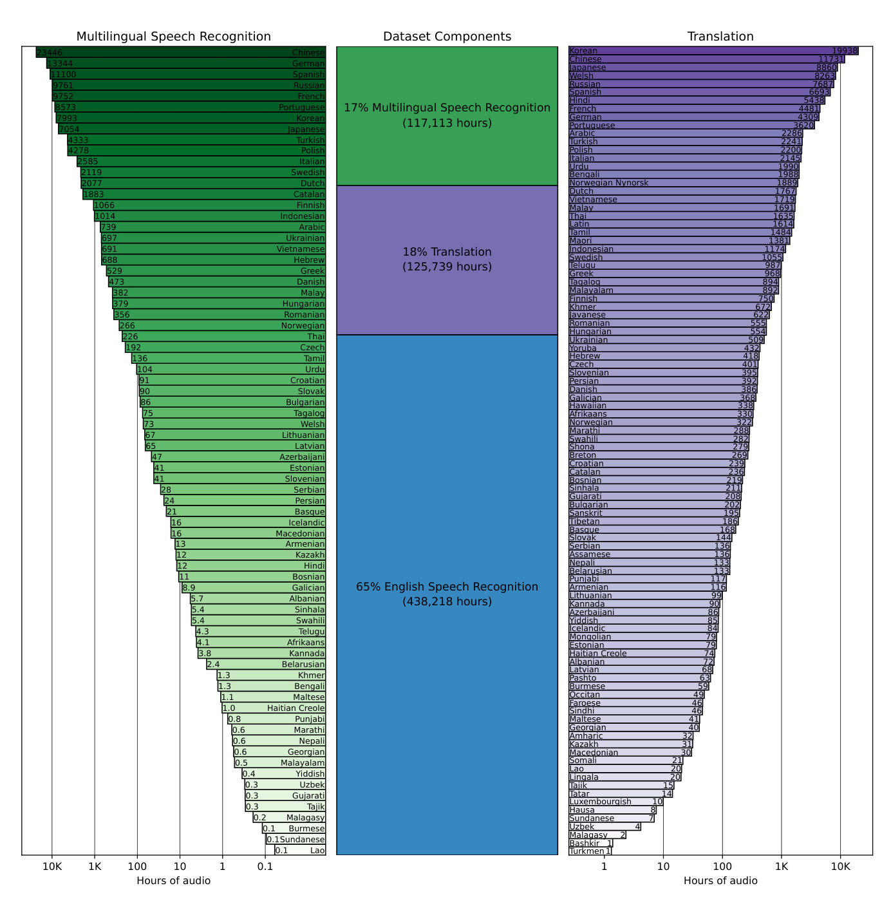
图Figure 11. Training dataset statistics
图 11. 训练数据集统计。
F 超参数Hyperparameters
Weight Init Gaussian Fan-In Learning Rate Schedule Linear Decay Speechless audio subsample factor
（表 F 行：Weight Init = Gaussian Fan-In；Learning Rate Schedule = Linear Decay；Speechless audio subsample factor（后续照原文）。）
Table 17. Whisper training hyperparameters.
表 17. Whisper 训练超参数。
| Hyperparameter | Value | ||
|---|---|---|---|
| Updates | 1048576 | ||
| Batch Size | 256 | ||
| Warmup Updates | 2048 | ||
| Max grad norm | 1.0 | ||
| Optimizer | AdamW | ||
| β1 | 0.9 | ||
| β2 | 0.98 | ||
| ϵ | 10−6 | ||
| Weight Decay | 0.1 | ||
| Weight Init | Gaussian Fan-In | ||
| Learning Rate Schedule | Linear Decay | ||
| Speechless audio subsample factor | 10× | ||
| Condition on prior text rate | 50% |
655360SpecAugment Policy LibriSpeech Basic
（表 F 行：SpecAugment Policy = LibriSpeech Basic。）
Table 18. Hyperparameters changed for Whisper Large V2.
表 18. Whisper Large V2 改动的超参数。
| Hyperparameter | Value | ||
|---|---|---|---|
| Updates | |||
| Batch Size | 256 | ||
| Warmup Updates | 2048 | ||
| Max grad norm | 1.0 | ||
| Optimizer | |||
| β1 | 0.9 | ||
| β2 | 0.98 | ||
| ϵ | 10−6 | ||
| Weight Decay | 0.1 | ||
| Weight Init | Gaussian Fan-In | ||
| Learning Rate Schedule | Linear Decay | ||
| Speechless audio subsample factor | 10× | ||
| Condition on prior text rate | 50% | ||
| Table 17. Whisper training hyperparameters. | |||
| Hyperparameter | Value | ||
| Updates | |||
| Batch Size | 1024 | ||
| BPE Dropout | 0.1 | ||
| Stochastic Depth | 0.1 | ||
| SpecAugment Policy |
1.5 × 10−31 × 10−35 × 10−42.5 × 10−41.75 × 10−42.0 × 10−4Table 19. Whisper model learning rates.
表 19. Whisper 各模型的学习率。
| Hyperparameter | Value | |||
|---|---|---|---|---|
| Updates | ||||
| Batch Size | 256 | |||
| Warmup Updates | 2048 | |||
| Max grad norm | 1.0 | |||
| Optimizer | ||||
| β1 | 0.9 | |||
| β2 | 0.98 | |||
| ϵ | 10−6 | |||
| Weight Decay | 0.1 | |||
| Weight Init | Gaussian Fan-In | |||
| Learning Rate Schedule | Linear Decay | |||
| Speechless audio subsample factor | 10× | |||
| Condition on prior text rate | 50% | |||
| Table 17. Whisper training hyperparameters. | ||||
| Hyperparameter | Value | |||
| Updates | ||||
| Batch Size | 1024 | |||
| BPE Dropout | 0.1 | |||
| Stochastic Depth | 0.1 | |||
| SpecAugment Policy | ||||
| Table 18. Hyperparameters changed for Whisper Large V2. | ||||
| Model | ||||
| Tiny | ||||
| Base | ||||
| Small | ||||
| Medium | ||||
| Large | ||||
| Large V2 |